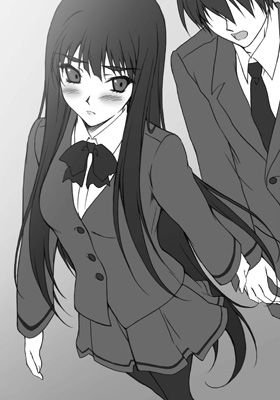

| 恋姫～彼女はヴァンパイア！ (美少女文庫) | |
| 青橋 由高 | |
| フランス書院 (2007) | |
恋姫～彼女はヴァンパイア！
青橋由高
イラスト／安藤智也
プロローグ 月の下の美女
 転校生～危険な主従関係
転校生～危険な主従関係
１ 一目惚れ
２ 契約
３ 悩み
４ 告白
５ 再会の足コキ
 初夜～下僕生活とロストバージン
初夜～下僕生活とロストバージン
１ 家来兼家政婦
２ 初めてのキス
３ 最後まで抱きしめて
 ふたり～学校でもラブラブ？
ふたり～学校でもラブラブ？
１ 甘い日常
２ 体操着エッチ
３ 忍び寄る危機
 夜想～ルナティックロマンス
夜想～ルナティックロマンス
１ スクープ
２ すれ違い
３ ドレスアップ
 恋姫～世界でいちばん君が好き
恋姫～世界でいちばん君が好き
１ 牙をなくして
２ 人間の証明
３ プールでご褒美
エピローグ 私の大切な......
プロローグ 月の下の美女
運命なんて言葉、優志はその日までまったく信じてはいなかった。
怖いくらいに冴えざえと光る満月の下に立つ、美しいヴァンパイアの少女と出会うまでは。
三月二十二日・十六夜。
つい先日、中学校を卒業したばかりの優志は、来月からはじまる高校生活への期待と興奮を冷ますために、普段よりもずっと遠くまで散歩に来ていた。
まだ夜は肌寒いが、ときおり吹く風は冬とは違う爽やかさをはらんでいる。夜空に浮かんでいる満月が美しい。
「うん、今日もいい夜だ」
こうした夜の散歩は、優志の趣味の一つである。
祖父母が寝るのと同時に家を出て、一時間弱のんびりと夜の町をぶらぶらと歩くのが好きだった。
普段は近所を歩くのだが、春休みの今は途中まで自転車を使い、普段はあまり立ち寄らないような場所を開拓していた。新しい発見が多く、いくら歩いても飽きることはない。
「ん？」
大通りの脇に、小道を見つけた。このあたりはたまに通るが、こんなところに道があるのは知らなかった。
「行ってみるか」
こういう発見も散歩の醍醐味だ。優志は軽い気持ちで、その小道へと足を向けた。
「あそこをまっすぐ通り過ぎてりゃこんな苦労はしなかったのにな」
と後に優志が語るように、運命の歯車はこの瞬間、静かにまわりはじめていた。
街灯もない薄暗く細い道を進むと、開けた場所に出た。公園のようだった。どこか寒々しい雰囲気を感じるのは、街灯が暗いせいばかりではないだろう。
もっとも、元公園、と言うのが正しそうだ。誰も使わなくなって久しいように優志には思えた。それくらいに寂れた公園に見えたし、なにより、空気が澱んでいる。
「......戻るか」
元の道に引きかえそうとした優志の目に、金色に光り輝くなにかが見えた。
最初は街灯だと思ったそれが、月光を受けて輝く金髪だと気づくのに、優に三十秒は要した。そしてその輝く髪の持ち主が、今までの人生で見たこともないほどに美しい少女だと脳が理解するのにさらに三十秒。
金髪の少女は、もう何年も使われてないと思われる古びたジャングルジムの頂上に座っていた。
遠目に見てもわかるくらいに激しく自己主張している豊かなバストとは対照的に、ウエストは怖いほどにくびれている。手脚も細く、そして長い。とても同じ人間の骨格とは思えない。
「綺麗だ......」
月明かりを受けて輝く金髪と、満月よりも白く透き通った肌は、とてもこの世のものとは思えないほどに美しかった。
切れ長の瞳は血を連想させるような鮮やかな赤色。形よい唇も、まるで血を塗ったかのように真っ赤だ。
優志は誘蛾灯に群がる虫のように、ふらふらとジャングルジムへと歩み寄っていく。
近づけば近づくほど、この少女が人並みはずれた美貌とスタイルの持ち主だということがわかる。
闇に溶けこむような漆黒のゴスロリ風ドレスは、しかし、なぜか妙にサイズが合っていない。かなりキツそうに見える。開いた胸もとからは柔らかそうな乳肉が今にもあふれてしまいそうだし、丈の短くなったスカートからは真っ白な太腿の大部分が露出している。唯一サイズが合っていそうなのは、くびれたウエスト部分くらいだろうか。
「............」
金髪少女は、ジャングルジムのすぐ側にまで優志が近づいていることに気づいてないらしい。むっちりとした太腿を大胆に組んだまま、赤い瞳で煌々と輝く満月を見あげている。
「あーあ、つまらんな、もうっ！」
「!?」
外見から想像していたものとはかなり異なる言葉遣い（そもそも、日本語を話すのも優志には予想外だった）で呟くと同時に、金髪少女はすっとジャングルジムの上に立った。
「あ、危な......おわっ!?」
反射的に駆け寄る優志の眼前で、立ちあがった少女の全身が急に白い霧に包まれた。
「な......だ、誰かいるのか!?」
そして、濃い霧のなかからあわてたような声が聞こえる。
「どうしてこんなところに人が......あっ!?」
優志の声に驚いたのか、白い霧がゆらりと揺れた。霧のなかから現われた人影がジャングルジムの上で大きく傾く。
「ああっ！ 嘘だろ!?」
優志は反射的に地面を蹴っていた。両手を伸ばし、落下してくる少女を受けとめようとする。
「きゃあっ！」
両腕に衝撃と痛みが走るのと同時に、可愛い悲鳴が公園に響いた。
（ま、間に合った......？）
じんじんする痛み（でもなぜか、手のひらには妙に柔らかな感触）にうっすら涙目になりながら、抱きかかえた人物を見ようとしたその瞬間、
パン......っ!!
優志の頬に、熱い衝撃が走った。
「なっ......？」
それが、助けた相手の平手打ちだと気づいたときには、もう少女は優志の腕のなかから抜けだしていた。こちらに背を向け、すごい勢いで走り去ろうとする。
「お、おい、待てよ、ケガはないのかっ」
平手打ちされたことよりも相手のケガを気遣う優志の優しさに対して、
「こ、この......スケベっ！」
かえってきたのはそんなセリフだった。
「......は？」
呆然とする優志の視界から少女の姿が消えるのにかかったのはわずかに数秒。まさに疾風のような速さだった。
「スケベって......ああっ！」
ようやく、この両手に残る柔らかな感触の正体に気づいた優志は、誰もいなくなった公園で一人、頬を赤くした。
（あれって......あれってもしかして、あの女の子の......おっぱい!?）
言われてみれば、確かにあのふくらみは女性特有のものだった。
「あちゃあ......。そりゃ怒るわな、うん」
一人納得する優志。思いきり引っぱたかれた頬はちょっと痛かった。
「さて、帰るか。......ん？」
公園を出ようとした優志の足がとまる。
（さっきの女の子......あんなに小さかったっけ？）
走り去る後ろ姿を思いだす。暗がりだったからそんなに自信はないけれど、最初に見た印象よりもずっと小柄だったような気がする。
（それに......胸だって）
まだ両手に残るあの感触を反芻する。
確かにぷよぷよして柔らかかったけれど、あの特大サイズのバストにしては、ちょっと物足りないボリュームだった。
「......ま、いっか」
優志はもう一度だけ背後を振りかえってから、公園をあとにした。
もう誰もいなくなったジャングルジムの上に浮かぶ満月が、妙に大きく見えた。
転校生～危険な主従関係
１ 一目惚れ
四月二十一日・十六夜。
「はあぁ」
渡辺優志が深いため息をつくと、
「なんだよ、休みボケか？」
小学校からの悪友である大塚が宿題をせっせと写しながら笑った。
「違うよ。少なくとも、次の授業で指されるのが確実なのに宿題をやって来なかった今のお前の悩みとはレベルが違う」
「なんだ、そりゃ？ まさか、恋でもしたか？」
「ああ......うん、そうだな。一目惚れってやつだ」
「はは、そうだよな、お前に限ってそんな......えええっ!? マ、マジなのか!?」
シャーペンを動かす手をとめ、大塚がびっくりした顔で優志を見る。
「なんだよ、その反応は。俺がそういうことで悩むのがそんなにおかしいか？」
「おかしいさ！ 小学校のときはオレの大好きだった千香ちゃんにも、中学のときはおれが好意を寄せていた奈月ちゃんにも、お前、全然反応しなかったじゃないか！」
「お、俺だって別に、女が嫌いとか、そういうわけじゃないぞ。ただ、今まではその......そういう気になる相手がいなかっただけで」
言っていて気恥ずかしくなった優志は、ぷいと顔を横に向ける。耳が少し赤くなっている。
「ほおぉ。変わり者で堅物の優志についに春が来たか......。で、相手は誰だ？ ウチの学校の女か？ 名前は？ 特徴は？ 美人か？」
「ウチの学校の生徒じゃない」あんな美少女がいれば、すぐに気づく。「名前も知らない。特徴は、とにかく美人。他はなにも知らん」
「......なんだそりゃ」
（俺のほうこそ知りたいんだよ、あの娘のこと）
満月の夜の出来事以来、優志は毎日のようにあの公園を訪れていたが、一度も意中の人物と再会できてはいなかった。
（もう一度会いたい）
月光を浴びて輝く金色の髪と、透き通るような白い肌、そして血が滲んでいるかのような深紅の瞳......。
あの夜からずっと、優志の心は謎の美少女のことで占められていた。
「はあぁ」
再びため息をもらす優志を見て「こりゃ重症だな」大塚が呆れたように呟いてから、またノートを写す作業に戻る。友人の恋煩いよりも、一時間目の数学のほうが大事だと気づいたらしい。
「たまには自分でやれよな」
「おう。前向きに善処する」
小学校から変わらない悪友の返事を適当に聞き流しながら、空をゆっくりと流れる雲を眺めていると、予鈴が聞こえてきた。
「うげっ、まだ写し終わってねえ！ 悪いっ、ノート借りてくぜ！」
「ホームルームが終わるまでには終わらせろよ」
優志のノートを抱えた大塚が席に着くと同時に、教室に担任教師が入ってきた。つづいて、見知らぬ顔の小柄な女生徒も入室してくる。
「転校生？」
「うっそ、可愛いじゃん！」
「きゃあ、お人形さんみたいっ」
転入生の登場に、途端に教室が騒がしくなる。
「あー、静かに。騒ぐな」
担当教師が黒板に転校生の名前を板書する。
「今日から君たちのクラスメイトとなる、黒川真鈴だ。仲良くするように」
「黒川だ、よろしくお願いする」
小柄な美少女転入生が挨拶をした途端、再び教室がざわめく。興味なさそうな顔をしているのは、優志くらいだ。
（確かに可愛いし綺麗だけどな。でも、あの娘に比べたら......）
教壇の上で自己紹介をはじめる真鈴は、間違いなく美少女だった。
漆黒の髪は艶やかで、やや憂いを秘めた瞳はミステリアスな魅力を感じさせる。華奢な体躯はどこか儚げなものを漂わせ、男の庇護欲をくすぐる。
怖いくらいに整った容姿と白い肌は精巧な西洋人形を彷彿とさせた。
「おいおい、すっげえ可愛いじゃないかよ！ な、優志っ」
大塚が興奮した様子で話しかけてきた。
「ああ、そうだな。......おい、さっさとノート写せよ」
「なんだよ、ノリ悪いな、お前」
「そんなに大騒ぎするようなこっちゃないだろ？ そもそもなんだよ、こんな中途半端な時期に転校してくるなんてさ」
新学期がはじまってまだ二週間というこの時期の転入は、明らかに普通ではない。
大塚にそう言いかえしていた優志を呼ぶ声があった。担任だった。
「あー、渡辺。お前の隣、席、空いてるな？」
「は？ はあ、空いてますが」
なんだかいやな予感がした。
「よし。黒川の席はそこだから、お前、教科書とか貸してやれ。いいな？」
「は......はぁ？ ちょ、ちょっと先生、席は他にも」
優志の席は廊下側の一番後ろで、確かに隣は空いている。だが、他にも空いている席はあるのだ。真んなかの列の最後尾なら周囲が女生徒ばかりだからそっちのほうがいいだろうと口を開く前に、
「黒川真鈴だ。これからいろいろ世話になる」
音もなくやって来た転校生が隣席に座ってしまった。
「お、おう。俺は」
「知っているぞ、渡辺優志」
「え？ どうして俺の名前を」
「......己の胸に聞いてみろ」
「......はぁ？ それ、どういう意味なんだ？」
可愛らしい容姿に似合わない口調に戸惑いながら尋ねる優志だったが、真鈴がその問いに答えることはなかった。
２ 契約
黒川真鈴は、とにかく目立った。
とんでもなく整った容姿の転校生というだけでも相当に目立つのだが、真鈴という人物そのものも強烈だった。
まず、言葉遣いがおかしい。
普通、高校一年生の少女が「うむ」とか「すまない」などとは口にしない。少なくとも日常会話には使わない。その他、とにかく時代がかった言いまわしをするのだ。
そして、その言葉遣いを指摘された真鈴がクラスメイトにかえした答えがまたクラスを大騒ぎさせた。
「我が黒川家は由緒ある貴族の家系だ。幼い頃から貴き血に恥じない礼節を叩きこまれたのだ。この言葉遣いもそのせいだが、今さら変えられん」
この美少女転校生は休み時間のたびにクラスメイトに囲まれていたが、おかげで隣の席の優志もいろいろと真鈴に関する情報を知ることができた。
「貴族ってことは、世が世ならお姫様っ？」
「うむ、あながち間違ってはおらぬ。無論、日本ではそんなもの関係ないことも承知しておるがな」
そんなわけで、昼休みを迎える頃には真鈴の呼び名は『姫』で確定していた。
「姫、お昼はどうするの？ お弁当？」
「もしも学食に行くなら一緒に食べようよ。案内するから」
「パンならオレが購買までひとっ走りしてくるぜ！」
隣の席の優志を押し退けるようにしてクラスメイトたちが真鈴の席を取り囲む。
（おーおー、大人気だな、転校生）
「いや、みなの誘いは嬉しいが、私の食事の相手はもう決まっている。すまない」
「えぇ、そんなぁ。誰なの、それぇ？」
（ほぉ、もう一緒に食べるような相手ができたのか）
昼食の入った巾着袋を手にしながら、心のなかで呟く。だが、それだけだ。今の優志の頭を占めているのは、このお手製の弁当をどこで食べるかということだ。
（今日は......そうだな、特別棟の踊り場にしようか。あそこなら人気がなさそうだ。昨日の雨で芝生が濡れているだろうから、中庭は避けたほうが無難だな）
優志は騒がしいのが苦手なので、大抵は一人で食べている。今日もそのつもりで椅子から立ちあがった瞬間、
ぐいっ。
制服の裾が引っ張られた。せっかくアイロンをかけたばかりなのに皺になってしまう、などと高校一年生の男子に似つかわしくない理由で不機嫌になりつつ振りかえると、
「こら、なに、自分だけ行こうとするのだ。一緒に食べると約束しただろう？」
まるで子供のような小さな手がブレザーの上着を握っていた。
「な、なにを」
言ってるんだお前、というセリフを口にするより先に、
「行くぞ、渡辺優志。さっさと案内せい」
今度は腕を取られる。そしてぐいぐいと、その小柄で華奢な外見からは想像できないような力強さで引きずられてしまう。そして優志にだけ聞こえるような小声で、
「黙ってついてこい、このスケベっ」
「へ？」

クラスメイトたちに対するものとは異なる言葉遣いに驚いているうちに、優志は教室をあとにしていた。
「渡辺の野郎、いつの間に姫に手を出してたんだ!?」
「アイツ、姫には興味なさそうな顔してたクセに......抜け駆けしやがった！」
「渡辺クン......恐ろしい子！」
教室から聞こえてくる級友たちの言葉を背に受けながら、優志は首を傾げた。
（俺......この転校生になんかしたのか......？）
人気のないところがいいと真鈴が言うので、優志は当初の予定どおり、あらかじめ目をつけておいた場所――特別棟の屋上へとつづく踊り場――へと来ていた。
特別教室が集中する特別棟はただでさえ人気が少ないうえ、立ち入り禁止となっている屋上へとつづくこの階段と踊り場は、完全に生徒たちにとっての死角となっていた。隣の美術室の備品が無造作に置いてあるせいで、余計に誰も立ち寄らないようだ。
「ふむ、なかなかいい場所じゃないか。褒めてやるぞ、渡辺優志」
「物置きみたいで、お世辞にもそうは思えないんだがな」
「そうか？ ここは静かだし適度なスペースもあるし、なにより、いい感じに薄暗い。私にとっては実に心落ち着く環境だが？」
真鈴の表情を見ると、からかってるようではない。本気でそう思ってるらしい。
「変なヤツ」
だからつい、本音がもれてしまった。
「む。レディに向かって失敬な男だな、お前は。この私が直々に食事に誘ってやったというのに」
「......あれはお誘いなのか？」
「うむ。気に入らなかったか？」
「それ以前の問題だ。だいたい、一緒にメシを食おうなどと誘われてないんだぞ？」
「男のクセに細かいことを気にするヤツだな、貴様は」
「あとお前......クラスの連中と話すときと全然態度が違うのはなぜだ？」
古めかしい言葉遣いは同じだが、優志に対して話すときは明らかに居丈高だ。今なんて「貴様」ときた。
「当たり前だろう、渡辺優志。どうして主人が家来に対して対等な言葉を使う必要がある？」
「はぁ？ なにを言ってんだ、黒川」
「級友たちとは無論対等だが、貴様は違う。......ほら、そんなつまらないことで貴重な昼休みをつぶす気か、渡辺優志。さっさと昼食をとるぞ」
好き勝手言い散らかすと、真鈴は踊り場の隅に腰をおろした。背中を壁に預け、細くて長い脚を横に流すその姿は、そこらに散乱している名画の複製などよりもずっとずっと美術品らしく見えた。
（はっ！ ち、違う、なに見惚れてるんだ、俺！）
「どうした？ 昼食はとらない主義なのか、お前は」
「その前にちゃんと質問に答えろっ。まず、なんで俺がお前の家来なんだよ？ 今日初めて会ったばかりだろ、俺たち！」
「初めて......か」
優志のセリフを聞いた真鈴の表情に小さな変化が浮かぶ。だが、それもほんの一瞬だった。
「理由は、ある。だが、貴様が思いだせないだけだ。私にはお前を家来とする理由があるのだ」
「な、なんだよ、それ？」
はったりを言っているようには見えない。けれど、優志にも思い当たるフシはまったくない。なにしろ目の前の超絶美少女と会ったのは今日が初めてなのだ。性格はともかく、こんなインパクトの強い人間と会ってたら、忘れようがないだろう。記憶喪失になっても覚えている気がするくらいだ。
（こんなに印象深い人間なんて他に......あ）
ふと、あの満月の夜に見た少女のことを思いだした。あの日以来、ずっと優志の心を虜にしている美しくもミステリアスな少女。
「......ふん、なにをだらしない顔をしているのだ、渡辺優志。私の美しさに見惚れてしまったか？」
「だ、誰がっ。......そ、それとだ、いちいち人の名前をフルネームで呼ぶのはよせ」
「では、ゆーじ」
「いきなりファーストネームかよ」
「お前も私のことを真鈴様と呼ぶことを許可する。光栄に思えよ？」
「......話を元に戻すぞ、黒川」
意地になった優志は、わざと名字で言ってやった。
「いいだろう、特別に聞いてやる。だが、これが最後の質問だ。私は少々腹が減っているのでな」
少々情けない表情でそのぺったんこのお腹を両手で押さえる姿はまるであどけない子供のようで、ちょっとだけ優志の気勢がそがれる。
「本当に俺はお前に会ったことがあるのか？ そして、俺はお前になにか借りが......お前の言うことを聞かざるを得ないような大きな借りがあるのか？」
「ある」真鈴は自信満々に答えた。「私とお前は確かに会っている。それもごく最近のことだ。そして貴様は私に大きな借りをこさえた。私は、私のなかに流れる血と、黒川真鈴の名にかけて誓う」
真鈴はまっすぐに優志の瞳を見つめながら答えた。
その漆黒の瞳を見てると、この転校生が嘘を言っているようには思えなくなる。
（あれ？ 俺、この目に見覚えがある......？）
「どうなのだ、ゆーじ」
「......いいだろう、お前の言うことを信じてやる」
「ふん、生意気な」
「ただし、家来なんてのはごめんだ。あくまでも、学校生活に不慣れな転校生の面倒を見るってスタンスでなら、承諾してやる。できることなら力を貸すぞ」
「家来の分際で主に条件を出すとは......クク、いい度胸だな、ゆーじ。それでこそ私の家来だ」
「だから家来じゃねーっての！」
「わかった、当面はそれでいいだろう」
「当面って......おい」
「ではさっそく命令だ、ゆーじ。私の昼食を用意しろ」
言われて気づいたが、真鈴は手ぶらだった。
「なんなら、貴様の持っているその弁当でもよいぞ？」
３ 悩み
五月七日・朔。
鬱陶しい曇り空の朝、真鈴は優志と一緒に昇降口から教室へと向かっていた。
「うー、暑ぃ......太腿がつる......」
「うるさい。あれしきのことで騒ぐな、うつけ。私はむしろ寒いくらいだぞ」
「そりゃお前は人の後ろでぐーすか寝てただけだからな」
日光が苦手な真鈴はこの天気にいつもよりも機嫌がいいが、びっしょりと汗をかいた優志はややイラついてるようだ。
「ふん、口の減らない下僕だ」
昨日までの連休明けのせいか、朝の校内は普段よりも気怠い空気が漂っている。
新学期早々という不自然な時期の転入から早二週間が過ぎたが、それはつまり、真鈴が優志を下僕兼家政婦として雇って二週間ということでもあった。
あの昼休みに無理矢理奪い取った弁当を食べた瞬間、真鈴は優志の非凡な才能を見抜いていた。自分で作ったというその弁当は、見た目こそ地味で質素であったが、味つけは抜群だったのだ。良家に育った真鈴は、舌には自信がある。
「本当にこれを自分で作ったのか？」
「ああ。悪いか？」
「もしかして、ゆーじは洗濯とかも得意か？」
「まぁ、それなりに」
「金に困ってはいないか？」
「困っちゃいないが、小遣いが欲しくないわけでもない」
「よし、なら決まりだ。下僕だけでなく、私の家政婦としても雇ってやろう。私がそう決めたのだ、貴様の意見は聞かぬ。いいな？」
「......好きにしてくれ、もう」
家事はいっさいだめな真鈴と、密かに自慢に思っていた自分の特技（趣味？）を活かせるバイトということで、両者の利害が一致。その場で交渉はまとまった。
そして今日までの半月、真鈴と優志の奇妙な雇用関係は不思議なくらいに上々だった。
「おい、あれ、噂の転校生だろ？ すっげー可愛いじゃん！」
「隣の男はなんだ？ 恋人か？」
「まさか！ あんな冴えない男が姫のオトコのわけないって」
昇降口から教室まで歩くわずかな間にも、真鈴と優志は周囲の注目を集めまくってしまう。
「......相変わらずお前は耳目を集めるな」
自分が貶されているのを知っているはずなのに、優志に特に気分を害した様子はうかがえない。むしろ、なぜか真鈴のほうが不機嫌になっている。自分でもその理由はわからないのだが。
「生まれたときから注目されるのは慣れている」
真鈴のその人間離れした容姿は、男女問わず人目を惹きつける。真鈴自身それは認識しているが、正直鬱陶しいと感じることもままある。特に地の性格を隠しているときはそれが顕著だ。
（黒川家の後継者たる私は常に人に優しく、優雅でなければならぬ。それが貴き血を受け継ぎし者の務め）
「この二週間で、それはよくわかった」
「ふむ、ようやく主の非凡さがわかるようになったか。下僕としていい傾向だぞ」
二週間前のあの転校初日、真鈴をちやほやしなかったのはクラスで、いや学校で唯一、優志だけだった。それでいて自分を無視しているわけではなく、
「教科書、見せてやるよ」
「この先生はいきなり生徒を指名して問題解かせるからな、気をつけろ」
「次の授業は移動教室だ。案内するからついてきな」
不慣れな転校生に対して、押しつけがましくない程度の気配りをしてくれた。それはとても自然な態度で、きっと相手が自分でなくとも同じように優しくしてくれたのだろうというのはすぐにわかった。
気づいたら、昼休みに優志を呼びだして、その日のうちに下僕、そして家政婦契約をすませていた。ほとんど押しつけであったが、優志は承諾してくれた。
最初は、とある思惑があって優志に近づいた真鈴だったが、
（もちろん私は当初の目的を忘れたわけではないが......ゆーじを家政婦にしたのは、我ながらいい判断であった）
その目的を忘れてしまいそうになるほど、優志は期待以上に優秀な家政婦だった。
手作り弁当を口にした瞬間、料理の腕に問題ないことはわかったが、その他の家事については「まぁ、それなりにはできるだろう」程度の期待しかしてなかったのだが、それはいい意味で裏切られた。
祖母に叩きこまれたという家事の腕は、料理・掃除・洗濯・裁縫に至るまで、すべて真鈴の期待を大きく上まわっていた。
当初は昼食の弁当だけ用意させるつもりだったのが、それが三食となり、自宅の掃除洗濯を任せるために合い鍵を渡すまでにはわずか三日しか要しなかった。
「よし、ゆーじ、貴様には私の専用運転手の仕事も下賜するぞ。光栄に思うがよい」
そして、朝が破滅的に弱く、さらに乗り物にも弱い真鈴がバス通学をあっさり断念し、自転車の鍵を優志に渡したのはその翌日。
「......マジ？ 俺、お前を乗せてあの坂道を走るの？」
今では毎日、真鈴は優志の漕ぐ自転車の荷台に乗って登下校している。
今朝も、ほんの数分前まで真鈴は優志にしがみついていたのだ。
つまり一週間経たずに、真鈴は生活の大部分を優志に頼りきることになっていた計算になる。
「こんなの家政婦の仕事じゃねえよ......うわ、シャツ、汗でべとべとだ」
ぶつぶつ文句を言いつつも、でもちゃんとワガママを聞いてくれる優志と一緒にいるのが、いつしか楽しくなってきている真鈴であった。
「おい、なにぼんやりしてんだ？ よそ見してるとコケるぞ？」
「あ、こら、下僕の分際で勝手に私の身体に触れるな、無礼者っ」
考え事をしていたために危うく廊下の段差に足をとられそうになった真鈴の腕を、優志が軽く引っ張ってくる。口では優志を罵りつつも、真鈴も決してその手を振り払おうとはしない。汗で少し湿った感触も不快とは思わない。
「おい、なんだアイツ。姫と無理矢理手を繋いでるぞ」
「あの男子って、校内新聞に載ってなかった？」
「ああ、隣の席っての利用して姫に強引に近づいたってヤツか」
「姫、いやがってんじゃねーか」
相も変わらず周囲は騒がしい。
生来のこの容姿のおかげでちやほやされるのは慣れっこだが、身近な人間が自分のせいで悪く言われるのはいい気分ではなかった。
これまで真鈴は特定の誰かと親しく接するという経験がなかったため、こういった状況は初めてなのだ。
（ゆーじが悪く言われるのは、それだけ私と一緒にいるということなのだな）
優志には申しわけないが、真鈴は今の状況を気に入っていた。
そして、優志と一緒の時間が長くなればなるほど深まる疑問があった。
（どうしてゆーじは私に対してこんなに普通に接せられるのだ？ 私の家で二人きりになってもまったく動じた様子がない。私のこの美貌の前では、男も女も平常心ではいられぬはずなのに）
たとえ相手に恋人がいようとも、自分のこの整った容姿を前にしては関係がない。それくらいの自負はあったし、そしてそれはまぎれもない事実でもある。
この疑問は、同性愛者であると疑って大塚という男子に質問したときに氷解した。
「優志がホモ？ あ、そりゃないぜ、姫。確かに優志の淡泊さはオレも友人として心配してたんだが、最近......えっと、三月の中頃だったかな、アイツ、一目惚れしたって言ってたぜ」
「ひ、一目惚れ!? ゆーじがか!?」
「ああ。しかも初恋らしい」
「は、初恋だとっ!? あ、あ、相手はっ？」
「よくわからんらしい。たまたま見かけた女の子に一目惚れしたんだとか」
一目惚れ、しかもこの年になっての初恋となれば、それはインパクトは強いだろう。
（だからアイツは私に対しても普通に接することができたのか。その初恋の女に気を取られて、私のことなどまったく眼中にないということなのか......!?）
理屈としては納得できるし、大塚が嘘を言う必要もないから、これは事実だろう。
だが、真鈴の心はもやもやしたままだ。その理由はあまり考えたくはない。
「......なぁ、黒川。お前、人の話聞いてるか？ さっきからうわの空だぜ？」
「うん？ ああ、聞いておるぞ」
「嘘つけ。お前、なに考えこんでたんだ？ 悩みでもあるのか？」
気づいたら、もう教室だった。
（お前のことを考えてた、などとは、口が裂けても言えぬ。主が下僕にそのような弱みを見せるのは、厳に慎まねばならん。変な誤解を与えてもまずいしな。......うむ、誤解なのだ......そうに決まっておる）
「悩みなどない。たとえあったとして、下僕に相談するほど落ちぶれてもおらぬ」
「はいはい、さいですか」
優志は両肩をすくめると、特に気分を害した様子もなく、自分の席に着いた。
４ 告白
ホームルームが終わると同時に、優志の元へクラスメイトの女子がやって来た。
「渡辺くん、この間はありがとね。助かったわ」
「どうだった？ うまくいったか？」
「うん、ばっちし！」
女子がぐっ！ と親指を立てて笑う。
「なんだ、今のは？」
女生徒が立ち去ってから、隣席の優志に真鈴が尋ねる。知らず、声が刺々しくなっている。
「あぁ、意中の先輩がいるとかで、手作り弁当を渡したいんだとさ。で、簡単に教えたんだ。お前に渡してる弁当見て、ああいうの作りたいって言ってきたんだ」
「......そんなこと、私は聞いてないぞ？ いつそんなことを」
「そりゃそーだろ、言ってねーもん。言う必要もねーし」
「む」
カチンときた。
（確かにただそれだけの......別にどうでもいいようなことだが......）
妙に胸がむかむかする。
（違うぞ、これは。決して、この下僕が私の知らないところで女とこそこそやってたことに腹を立ててるわけではないぞ......っ）
なのに、真鈴の口は勝手に動いてしまっていた。
「ふん、ならば他人の恋の世話なぞしないで、そのお得意の弁当で意中の女にアタックしてみればいいだろう？」
別に、深い理由があって口にした言葉ではなかった。ただ、つい言ってしまっただけだ。その証拠に、言った真鈴自身、自らの言葉にびっくりしている。
「なっ......なんでそれを......って、大塚か！」
しかし、驚いた度合いは優志のほうがはるかに上だった。一緒に過ごすようになって二週間経つが、耳まで真っ赤にして狼狽する姿など見たことがない。
（むっ）
なぜだかわからないが、そんな優志を見ているとまた胸がむかむかしてきた。
「ふふん、なんだ、そんなにその女に惚れているのか？ 聞いたところによるとたった一度ちらりと見ただけ、言葉もろくに交わしてない相手だそうじゃないか」
だからつい、苛めてしまいたくなる。
「い、いいじゃないか、別に。だいたい、黒川には関係ないだろ!?」
「............！」
その言葉を聞いた瞬間、真鈴は自分の顔から血の気が引くのを確かに感じた。
「き、貴様、今なんと」
身を乗りだそうとしたそのとき、一時間目を告げるチャイムが鳴った。
真鈴は渋々腰をおろしたが、その瞳には暗い怒りが静かに光っていた。
（べ、別に、私はあの下僕が誰に惚れてようがいっこうにかまわん）
一時間目の授業が終わると同時に勢いよく席を立つと、真鈴は少し離れた席の大塚の元へと向かった。
（だが主として、下僕のことを知っておくのもまた、貴き者の義務である......うむ、これは義務なのだ、義務。ノブレス・オブリージュだっ）
ぶつぶつと言いわけ以外の何物でもないことを繰りかえしつつ、クラスメイトの男子に声をかける。
「大塚、話があるのだが、いいだろうか」
「へ？ ひ、姫？」
しばらくの沈黙の後、
「も、もちろん！ 姫の頼みとあらば、どこへでも！」
「うむ、すまない。ではこちらへ来てくれ。人に聞かれたくない話なのでな」
「っ！」
なにを誤解したのか（もちろん、誤解するような言い方をしたのだ）、大塚は期待に満ちた顔で真鈴のあとをついてくる。他のクラスメイトは、信じられないという面持ちで真鈴と大塚を見送る。
（......ゆーじは......ちっ、こちらを見ようともせぬ。主がどこの馬の骨ともわからぬ輩と二人きりになるというのに......なんて危機管理のできてない男だ！）
クラスメイトを馬の骨呼ばわりする失礼を棚にあげ、勝手に憤る。
「ここなら大丈夫か。......では大塚、聞きたいことがあるのだが」
「優志の惚れてる相手のことだろ？」
「ぬ？ なぜそれを」
さっきまでの浮かれた表情とは一変した大塚が苦笑しながら答える。
「んなの、ちょっと考えればわかるさ。姫がオレに用事があるとすりゃ、優志のこと以外ねえじゃん。だろ？」
「そんなことは......いや、すまない、そのとおりだ。悪いが、またあの話を詳しく聞かせてくれないか？」
「そりゃいいけどさ、でも前に話した以外のことは......あ」
「な、なんだ？ 他になにかあるのか？」
「そういやあのとき、オレがその女の子となにか話したのかって聞いたら、痴漢と誤解されて平手打ちされたって言ってたな。スケベって叫ばれたとかなんとか」
（......ん？ どこかで似たことがあったような？）
小さく首を傾げる真鈴にかまわず大塚がつづける。
「オレ、言ったんだよね。夜中に人気のない公園で、いくら助けようとしたからっていきなり抱きついたら、そりゃ悲鳴だってあげられるって」
「こ、公園！」
「あれ、このこと姫には言ってなかったっけ？」
「き、聞いてないぞ、初耳だ！」
「あのね、優志のヤツね、その女の子が高いところから落ちそうだったから助けようとしたんだと、とっさに。んで、誤解したんだろうな、その子に勘違いされて思いきり平手食らったって言ってたぜ」
夜の公園。ジャングルジム。助けてくれた少年。
もちろん真鈴はあの満月の夜のことをすべて知っている。
そして、だからこそ優志と同じクラスになるよう裏工作をしたのだ。
「アイツさ、あれからちょくちょくその公園に行ってるらしいけど、ぜーんぜんその子と再会できてないって嘆いてたぜ。......姫、どうかしたか？」
「い、いやなんでもない。......すまなかったな大塚。重要な情報、感謝する」
真鈴は礼を告げると、さっさと大塚に背を向けその場から立ち去る。
（くっ......なんてことだ......こ、この私が......貴き血を受け継ぐこの私が......！）
そうでもしないと、見られてしまう。
いくら頑張っても勝手にニヤけてしまう、この締まりのない顔を見られるわけにはいかなかった。
（そうか、ゆーじの初恋の相手とは、あのときの女だったのか......そうか、そうだったのか......！）
しかしいくら顔面の筋肉に引き締まれと命じても、勝手にニヤけてしまうのはどうしようもなかった。ニヤけるだけでなく、口もとからは不気味な声ももれでている。
「くふふふ......そうか、そうだったのか......くふ、くふふふふ......！」
「不気味だぞ、お前。なんか悪いモンでも食ったのか？ 午前の授業中、ずっとニヤニヤして......。クラスの連中、不気味がってたぜ？」
昼休み、恒例の人気のない場所（今日は誰も使っていなかった社会科準備室）での昼食中、優志は弁当を食べながらそんなことを言ってきた。
「失敬だな、貴様は。そもそもここ最近、私が口にしているものはすべてゆーじがこしらえたものだぞ？ 私はゆーじが用意したもの以外、なにも食ってはおらん」
口にして改めて、自分がどれだけこの目の前の男に依存していたかを知る。
（この私がここまで心を許すとはな......我がことながら信じられん）
三食すべてをともにするという半同棲のような生活を送ってきたおかげで、二週間という短さを感じさせないほどに二人は打ち解けている。思春期の男女にしては、まったく色っぽい出来事はなかったが。
（なにしろコイツ、平気で私の下着も洗濯するくらいだからな。少しは私を女として意識してもいいだろーが）
むしろ、平気で下着までも洗濯させる自分に問題があることに真鈴は気づいていない。実は優志が真っ赤な顔で毎日同級生の女の子の下着を洗っていることも、真鈴は知らない。シルクの高価なものを使ってるせいで手洗いしてることになど、もちろん思い至らないのだ。お互い知らないほうが幸せなのだろうが。
でも、だからこそ真鈴は自分の秘密を優志に打ち明ける気になったのかもしれない。冗談やお遊びではなく、本気で優志を下僕にしようと思ったのだ。下僕という言葉が不適切ならば、相棒、共犯者、仲間などと言い換えてもいいが、
（やっぱり下僕がしっくりくるな、うん。犬でもいいし）
今のところ、真鈴にとって優志とはそのような存在だった。少なくとも、そう思うことにする。そうでないといろいろと困るのだ。いろいろと。
「......なぁ、本当に今日の黒川、変だぜ？ 具合でも悪いのか？」
今日も美味だった弁当を食べ終わった真鈴に、食後のほうじ茶をポットから注ぎながら、優志が心配そうにこちらを見る。
「どうしてそう思うのだ？......ずずずっ」
「そりゃ、普段は澄ました顔してるのに、今日は緩みきってぐふぐふ笑ってるんだ、訝しまないほうが変だろ」
「な......わ、私はそのように下品に笑わぬ！ 訂正せぬか、犬！」
「いや、マジでぐふぐふ笑ってたって、お前！ 怖かったぞ、嘘でなく！」
言ってから、一言つけ足す。
「っておい、今度は犬かよ、俺!? 今度は人間ですらないのか!?」
優志の抗議を無視して、真鈴はほうじ茶を啜ってから本題を切りだす。
「一応念のために確認するぞ、ゆーじ。これは大事なことなのだ、真面目に......最大限に真面目に答えろ、いいな？」
「は？ なんだよ突然。......ま、いいよ、うん、わかった」
その真剣な表情になにか感じるものがあったのだろう、優志も居住まいを正して真鈴を見る。
「お前はこの二週間、私の下僕兼犬として奉公してきたわけだが、どうだった？」
「......いろいろとツッコミたいところ満載だが......まぁ、楽しかったな、わりと」
「わりと？」
真鈴の目が細くなり、もの言いたげに優志を睨む。
「あ、いや、かなり楽しかったぜ。お前の家の立派なキッチンで好きなだけ食材使って料理できたのも満足できたし、掃除のしがいのあるでかい家も好みだな」
「......それだけなのか？ 他に楽しいことはなかったのか？」
またも、もの言いたげな目で見られる優志。真鈴が子供のように口を尖らせている。
「お前とのじゃれ合いも楽しいぞ？ その尊大な口の利き方に最初はカチンと来ることもあったが、今じゃもう慣れた。なんて言うかさ、楽なんだよな、黒川と一緒にいるの」
「楽？ どういうことだ？」
「お前、女の子じゃん？ しかも、めちゃくちゃ美人だろ？」
「う......うむ、まあ、そ、そうかもしれんな」
いきなりの褒め言葉に、真鈴の頬が紅潮する。容姿を褒められることは慣れているはずなのに、どうしてだか優志が相手だと照れてしまう。
「だけど不思議なんだよな、緊張しないんだ。腹立つようなこと言われても、なぜだか許せちゃうんだよ。たぶん、こういうのを相性ってんだな、きっと」
それは真鈴も感じていたことだった。普段はある程度猫をかぶっているのだが、優志の前だとつい本性が出てしまう。けれど、それが不快ではない。むしろ居心地がいい。
真鈴がここまで気を許せる相手は、これまで家族を除けばごくごくわずかしかいなかったのだ。
「もしかして......俺、クビ？ 家政婦のバイト、辞めさせたいのか？」
「そうではない。お、お前さえよければ今後もつづけてもいいのだぞ？」
（いや、違う。そうではない）
真鈴は咳払いをしてから言い直す。
「すまない、言い直そう。......ゆーじ、これからも私の下僕をつづける気はあるか？ これからもずっとだ」
「ずっと？ ずっとって......どのくらい？」
「だからずっとだ。......下僕という言葉がイヤなら......百歩譲って、相棒と言ってやってもいい。......どうだ？ お前にその覚悟があるか？」
いつもと異なる真剣な雰囲気に、優志の表情も変わる。
「覚悟って......そんなに大層なことなのか？ お前の身のまわりの世話ならしてやるぞ？」
「私の秘密を知ってもまだそんなことを言う自信があるのか？」
それまでの尊大な口調から一転、急に真鈴の声が不安げになる。
「......黒川の秘密がなんなのかはよくわかんねーけど、うん、いいぜ、これからもお前ン家の家政婦、つづけてやるよ」
普段は黒いが、光の加減によってはうっすら赤みがかっている真鈴の瞳をまっすぐに見つめながら、優志が力強く言う。
「家政婦ではない、下僕だ、うつけ」
嬉しさを噛み殺しつつ憎まれ口を叩いてから、真鈴はすっと立ちあがる。
「その言葉、忘れるでないぞ？ もしも約定を違えるようであれば......最後の一滴まで血を抜きだして殺すからな？」
瞳を閉じて、体内に残っている力を凝縮する。今は新月期のため、きちんと集中する必要がある。が、それでも真鈴にとってはそう難しい行為ではない。
（ゆーじ......信じてるぞ......！）
華奢な真鈴の全身から目に見えない「なにか」があふれだす。生温かい空気が狭い室内にひろがる。蒸気に包まれたように真鈴の姿がゆらゆらと揺れて見える。
「く、黒川？ なんだよ、これ......うわっ！」
ぶしゅっ！
湯気が噴きだすような音とともに、真鈴の身体が霧のようなものに包まれた。
「黒川、大丈夫かっ」
反射的に手を伸ばした優志の腕が霧のなかに呑みこまれる。
むにゅり。
「......へ？」
そして手のひらに妙に柔らかい、それでいて弾力性に満ちたなにかをわしづかみにした直後、優志の頬にどこか懐かしい衝撃が襲ってきた。
「こ、この......スケベっ！」
これまたどこかで聞いたような声とセリフ、そして頬の痛み。あの満月の夜がフラッシュバックする。
「一度ならず二度までも......貴様、恥を知れ！」
５ 再会の足コキ
霧が晴れたあとには、左手で胸を隠すように抱きかかえた、真っ赤な顔の少女が立っていた。右手は美しいフォロースルーを描いている。
「え......あ......えええっ!?」
「なにを驚いておる。......言っただろ、私の秘密を教えると」
霧のなかから現われた少女――真鈴は、キツくなった制服を気にしながら、目の前であんぐりと口を開けたままの優志を見おろした。
漆黒の髪は眩いばかりの金色に変わり、その長さまでもが大幅に伸びている。
幼さすら感じさせた小柄で華奢な体躯は、今や制服から飛びだしそうなほどにそのボリュームをアップさせていた。特に胸のあたりは今にもブラウスのボタンを弾き飛ばしそうなほどに盛りあがっている。
「く、黒川......なのか？」
「この部屋には私とお前しかいなかっただろ？ 他に誰かいたのか、ん？」
スカートを気にしつつ、ニヤリと笑う。身長も伸びたせいでスカートの丈が短くなり、今や太腿の大部分が露出してしまっている。真っ白い肌の色は同じだが、むっちりとした肉感は元の真鈴とはまるで別人だ。
「どうして......そ、それにその姿はあのときの......!?」
目の前にいたはずの少女が突然姿を変えただけでも驚愕だったのに、その姿がずっと探しつづけていた初恋の相手だったというダブルショックに、優志は完全にパニックになっていた。悲鳴をあげなかっただけでも大したものだと真鈴は思う。
もしも悲鳴をあげたり逃げようと暴れたりしたならば、当初の、つまり二週間前の予定どおり、優志に「牙」を突き立てなければならなかったのだ。
「お前はこの姿を一度見ているのだったな？」
「あ、ああ。......ってことは......やっぱりそうなのか？ あの夜、俺が見た女の子は......黒川だったのか......？」
「うむ、そうなるな」
喜ぶべきか悲しむべきか自分でもわからないのだろう、優志が複雑な表情を浮かべる。
「......それよりも先に聞くべきことがあるだろう、お前」
「あ、そうだな」少し冷静さを取り戻し「それ、なんなんだ？ 手品......じゃないよな？ オカルトの類か？」
オカルトという単語にややいやそうに眉をひそめつつ、
「簡単に言うとだな、吸血鬼なのだ、私は」
「そ、そうなのか」
「......あまり驚かないのだな？」
「いや、めちゃくちゃ驚いてるよ。まさかあのときの娘が黒川だったなんて......」
カチン。真鈴のこめかみに血管が浮く。
（な、なんだコイツ......私が決死の思いで正体をバラしたというのに、そのことよりも、この姿の女が私だったことのほうがショックだというのか......！）
吸血鬼の一族が自らの正体を明かすのは、人生を左右しかねない重大なイベントだ。人生どころか自分の命や一族の運命すら脅かしかねない、極めて重要事項である。
（そ、それなのにこのうつけは......っ）
腹が立った。
床に腰を落としたまま、呆けた顔でこちらを見ている優志を、心底蹴ってやりたいと思った。
優志はぽかんと口を開けたまま、じっと真鈴を――変身後の真鈴を凝視している。そのうちハート型になるんじゃないかと思うほど、その目には熱い想いが宿っている。大塚が教えてくれたとおり、優志は本当に（変身後の）真鈴に一目惚れしていたらしい。
「また会えた......もう会えないかと思ってた......！」
「くっ......」
その整いすぎた容姿で他人からじろじろ見られるのには慣れていたし、実のところ嫌いでもない真鈴だが、今は複雑な心境だった。
（こいつに見つめられるのは悪くない気分だが、でもこのバカが見ているのは私ではなく、もう一人の私なのか......）
変身前も変身後もどちらも真鈴で変わりはないが、そんな簡単に割りきれるほど人の心は単純にできてはいない。
「ええい、人の話を聞けっ！」
「はぐぁ！」
鬱憤を晴らすかのように思いきり優志の顎を蹴りあげる。スカートが翻って下着が見えてしまうが、この際関係ない。
「いいから話を聞け！」
鼻からぼたぼたと血を流した優志がこくこくと涙目でうなずくのを確認してから、真鈴は自分の正体について話しはじめた。
「......と、いうわけだ、わかったか？」
「一応。......お、とまった」
鼻の穴に突っこんでいたティッシュをはずしながら優志が答える。
「要するに、黒川は吸血鬼......なんだろ？ 人間の血も混ざってる」
「うむ。我々の世界でも混血が進み、純粋な吸血鬼はもう数えるほどしかおらん」
映画などで描かれる吸血鬼との類似点は多いが、異なる点も多い。
日光は確かに苦手だが、灰になるほどではない。
月の満ち欠けに応じて力が大きく変動する。
牙を突き立てて血を吸うが、別に吸血しなくとも生きていける。
違う姿に変身できるが、コウモリにはなれない。
水は苦手だが、ニンニクも十字架も全然問題ない。
血を与えることで相手を操ることができる。
「ま、こんなところだな。同じ吸血鬼でもここらへんの特性にはかなり差がある。あくまでも私の場合は、と思っておけ。......なにか質問はあるか？」
「いくつか」
「言ってみろ」
「変身って、なんにでも化けられるの？」
「私は一種類だけだな。この姿だけだ。好きな姿に化けられる仲間もいるが」
「その姿は、成長した黒川なのか？」
「半分は正解で、半分はハズレだ。この姿は、別の遺伝子が発動したときの私だ。髪や瞳の色が違うのは、何代か前の血のせいだろう。黒川家には東欧の血が混じっているからな」
「なるほど、だから胸の大きさも違うのか」
「......聞こえてるぞ、犬。次の質問はなんだっ？」
「なんで俺にそんな大切な秘密をバラしたんだ？」
「......言っただろ。これからもずっと私の下僕をつづけると」
頬をバラ色にした真鈴が一歩優志に近づく。明らかに今の真鈴には小さすぎる制服が妙にエロティックだ。
「正式に私の下僕になると言ったのだ、主である私が秘密を打ち明けるのは当然の義務だろう？ 今後、ゆーじは今まで以上に私の身のまわりの世話をするのだ。秘密を隠し通すのは不可能だしな」
「あれって、バイトの契約延長って意味じゃなかったのか？」
「......イヤか？ 私のような化け物の世話をするのは」
「そうは言ってない。......それ、やめろ」
「ん？」
「自分のこと化け物と言うのはやめろ。怒るぞ」
優志の言葉に、胸がどきりとする。
「そ、それは......私がこの姿だからか？ たまたまお前がなにかの勘違いで惚れてしまったというこの姿をしているからか？」
「......マジで怒るぞ」
今まで見たことがないほどに優志の目は鋭かった。
優志が自分を気遣ってくれているのはわかっていたのだが、真鈴は素直になりきれない。
「初恋の相手が私でがっかりしたからか？ 中身が私のような女で百年の恋も冷めたか？ そいつは悪かったな！」
これが八つ当たりだともちろん自覚はしていたが、もうとまらない。とめられない。
（どうして私はこんなに苛立っているんだ？ たかが下僕のことで......。そもそもコイツが惚れたのも私なのだ。どっちも私なのだから、いちいち気にするほうがどうかしているっ）
今の姿も、元の姿もどちらも真鈴だ。ただ外見が違うだけだ。
なのに、目の前の少年の態度は明らかに異なる。そのことが真鈴の神経をいたく逆撫でする。平たく言ってしまえばヤキモチだ。自分で自分にヤキモチを焼くというのもおかしな話だが。
「そんなこと言ってないだろ!? むしろ俺は」
落ち着かせようとしたのだろう、優志が両肩に手を置いてきたが、
「うるさい黙れ、静かにしていろ、犬！」
ヒステリーを起こしている真鈴はそれを乱暴に振りほどく。
「触るな、ケダモノ！ 今までは人を女扱いしなかったクセに、この姿になった途端これか!?」
「違う、これは」
「言いわけなど聞きたくないっ！」
元々真鈴は普通の人間よりも筋力がある。普段は意識してセーブしているが、逆上した今はフルパワーで優志の体を突き飛ばしていた。今は新月で最も真鈴の力が弱い時期だったにもかかわらず、優志は軽く数メートルは吹っ飛んだ。鈍い音とともに優志が部屋の壁にぶつかる。
「ゆ、ゆーじ？」
社会科準備室の壁に激突したままの格好でぐったりしている優志を見て、ようやく真鈴も正気を取り戻した。
「す、すまない。生きてるか？」
「あぁ......なんとかな......うお!?」
後頭部を手で押さえながら起きあがろうとした優志の目が大きくひろがる。
「なんだ？......あっ！」
その視線の先を辿った真鈴は、あわててスカートの裾を手で押さえた。変身したせいで短くなったスカートは、下から見あげられたら簡単に中身を覗かれてしまう。
「み、見てないから！ 本当に見てないから！」
「ホ、ホントだな？ 見てないのだな!?」
「あ、ああ、本当だ！」
もしも「それ」に気づかなければ、真鈴も優志の言葉を信じたはずだった。しかし、真鈴は見てしまったのだ、優志のズボンのふくらみを。
（っ!? あ、あれは......ゆ、ゆーじの!? な、なぜあんなに......まさか、私のスカートのなかを見てああなってしまったのか!?）
これで、優志がスカートのなかを見たのは確定だ。
が、真鈴は別に不快ではなかった。こうして股間をふくらませたのを目の当たりにしても、嫌悪感は湧いてこない。
その代わり奇妙な、これまで感じたことのないような衝動が身体の奥底から生まれてきた。
「ゆーじはホントに犬、いやそれ以下のケダモノだな。この状況下で私の下着を見てふくらませるとは......恥を知れ」
「え......あっ！」
ここでようやく自分が勃起していたことに気づいて股間を隠そうとするが、
「隠すな。私がいいと言うまで動くな、下僕」
上履きを履いたままの足で優志の手を蹴り払う。そのまま上履きを脱ぎ捨て、黒のストッキングに包まれたつま先を優志の鼻先に向ける。
「浅ましい男だな、貴様は。女の下着を見ただけでこんなにするとは。そんなに女に飢えているのか？」
「ち、違う、俺は......あうっ！」
真鈴は唇を歪めて笑うと、形よい足先を優志の股間に押しつけた。
「や、やめろ黒川......うあっ、そ、そんなに強く踏むな......ううっ」
「まさか貴様、女に足蹴にされて感じてるのか？」
デリケートな部分、しかも勃起して敏感になっているペニスをぐにぐにと踏まれた優志の口からは、妙に悩ましげな声がもれる。柔らかなつま先に刺激された若い肉棒は簡単に完全勃起してしまい、真鈴の足を押しかえすかのようにむくりと膨張する。
（こんなに大きくなるものなのか？ す、すごい、足の裏でビクビクしてる......！）
ズボン越しでも鮮明に感じられる男の象徴に、思わず生唾を呑みこむ。
（ああ、ごりごりしてる......私、ゆーじのオチン×ンを足でいじって興奮してる！ ダメだ、コレに触っていると私まで変な気分になってしまう......っ）
初めは軽く撫でるだけだった足が、知らないうちに肉棒をしごいていた。足裏に伝わってくる牡の強張りに、真鈴の呼吸も荒くなってくる。
「ふふん、ずいぶんと可愛い声を出すじゃないか。やっぱり初恋の女にいじられると興奮するのか？」
真鈴は近くにあったパイプ椅子を引き寄せると、スカートが捲れるのも気にせずに大胆に脚を組んで座る。
「私だけ秘密をバラすのは不公平だ。お前も私に秘密を教えろ。私の正体に匹敵するような、とびっきりの秘密でないとダメだからな」
「俺に秘密なんてないし、そんなことしなくともお前の正体を誰にも言うつもりはない」
優志のその言葉は信用できたし、だからこそ秘密を教えたのだが、今はもっと優志を追いつめるべく責めをつづける。優志の顔がつらそうに歪むのを見るたびに、股間に甘い疼きが生じる。
「女の足で喘ぐような男の言葉など信用できん。......そうだ、ならばこうしよう。私の正体と釣り合うような秘密をこれから作ってやる」
「つ、作るって......どうやって」
「簡単だ。......ズボンを脱げ、ゆーじ」
そのときの優志の泣きそうな顔を見た瞬間、真鈴の秘部からトロリと淫らな体液が染みだした。
「こ、これでいいのかよっ」
「フン、下半身丸出しですごまれても全然怖くないぞ？」
椅子に腰かけたままの真鈴は、携帯電話のカメラで優志の半裸を次々とメモリに収めていく。屈辱に肌を赤く染めた優志の姿に、真鈴は妖しい興奮を感じていた。
優志は命じられるままズボンとパンツは脱いだものの、さすがに局部は両手で隠している。
「ほら、手をどかせ。出し惜しみするほどのモノなのか、ん？」
興奮を気取られぬよう強気な言動をするものの、自分でもはっきりとわかるくらいに真鈴の声は震えていた。もどかしげに脚を何度も組み換え、もぞもぞと尻を動かす仕草も、明らかに真鈴の性的興奮を示している。
「も、もういいだろ!? 俺は絶対にお前の秘密はバラさない。俺のこと、信じられないか!?」
「うっ」
（ずるいぞ、ゆーじ。そんなにまっすぐな瞳で見られたら、こっちが悪いことしてるみたいではないか！）
どちらかというと真鈴のほうが悪いのだが、本人はまったく気づいていない。
「二度も女の胸を触るような性犯罪者を信じられるものか。そら、邪魔だ」
内心の動揺を知られぬよう努めて冷静に振る舞いつつ、股間を覆い隠す優志の両手を蹴飛ばす。
（うあっ!? こ、これが男の......！）
現われた優志の勃起は、真鈴の想像とは大きく異なる形状だった。醜悪とは思わないが、どこか女に警戒心を起こさせるような禍々しい肉銛の姿に、しかし真鈴は目を離せなくなっていた。
（こんなものが私の......い、いや、女のアソコに入るのか......？）
必死になって再びイチモツを隠そうとする優志の手を的確にキックで払い除けながら、真鈴は何度も生唾を呑みこむ。今までに経験したことのない甘い疼きが下腹部にじんわりとひろがっている。
「お、お前は露出狂なのか、ゆーじ。このような破廉恥な姿を女である私に晒して興奮するような下劣な性癖の持ち主なのか？」
収まるどころかさらに体積を増して反りかえる肉棒を揶揄してやる。
「違うって！ お前が悪いんだって！ そんなの見せられたら誰だって」
「む？......あっ」
言われて初めて、自分がいかに無防備だったかに気づく。床に寝そべった格好の優志からは、椅子に座って脚を組んでいる真鈴のスカートの奥は完全に丸見えだった。
一瞬脚を閉じようとした真鈴だが、
「ふむ......つまりお前は、主たる私の下着を見て性的興奮を催し、下腹部を膨張させているわけだな？ 平たく言えば、パンツを見て勃起しているのだな、ゆーじ？」
「ううぅ」
恥辱にまみれる優志の姿に、真鈴の胸の鼓動がますます激しくなる。
「......いいだろう、ならば私はお前の主として、お情けをくれてやる」
「な、なにを......うおっ!?」
真鈴はパイプ椅子に腰かけたまま両脚を開き、黒タイツに包まれた足の裏で優志のペニスを挟んだ。ドクドクと脈打つ剛直を感じながら、ゆっくりと上下に擦ってやる。
（こ、これがゆーじのオチン×ン......すごい、本当にこれがアソコに入ってしまうのか......あ、先っぽからなにか出てきた。男も気持ちいいと濡れるのか？）
金髪の美少女が大きく股を開いた格好で勃起を足コキしてくれる。しかもその美少女は生まれて初めて優志が恋心を抱いた相手だ。女性経験どころかキスもしたことがない童貞少年があっさりとその快感の前に屈したのは責められまい。
「く、黒川......あ、そんなにされたら俺......あっ......うあ！」
「可愛い声で啼くじゃないか、ゆーじ。私に足でいじられるの、気持ちイイのか？」
「あ、ああ、気持ちいい......くうッ」
（ど、どうしよう、ゾクゾクするっ......ゆーじの感じてる顔見てたら、私まで変な気持ちになってくる......！）
優志の真っ赤になった顔が可愛い。女の子みたいな声にドキドキする。足に伝わってくる優志の脈動に興奮する。
（見てる......ゆーじが私のパンツを覗いてるっ......！）
大きく開いた股間を、優志が血走った目で凝視している。真鈴はもっと見せつけようとするかのように腰を前に迫りだす。変身して豊かになった臀部のせいで、黒のショーツはかろうじて秘部を隠す程度の役割しか果たせていない。
「くく、私のパンツを見てまた硬くしたな、ゆーじ。このまま出すのか？ いいぞ、私の足でシコシコされてイクがいい。その無様な姿、しっかりと収めてやるぞ」
優志に負けず劣らず顔を紅潮させた真鈴が、携帯のカメラレンズを向ける。震えて上擦った声、額に浮かんだ大粒の汗は、真鈴の興奮が尋常でないことを示している。
しかし真鈴の興奮が最も如実に表われているのは、今、優志の視線が張りついているショーツの底部だった。
黒いシルク地のその中心に、生地よりも黒い染みが細長い楕円形になっている。その染みはじわじわとその面積を拡大している。
（見られてる、私の恥ずかしい染みを、ゆーじにじろじろ見られてる......ぅ）
顔から火が出るような恥ずかしさよりも、むず痒いような不思議な高揚感が勝り、股を閉じられない。
「ほらゆーじ、イクのだろ？ 私の足で悪戯されて、射精したいのだろ？」
菱形に開いた両脚を器用に動かし、そそり立った肉棒をしごく。ストッキングのなかの指を器用に折り曲げ、張りだしたエラを刺激する。
「うあっ、あっ、出る、出ちまう......あっ、黒川、だめだ、もう本当に俺......」
「出せと言っているのだ、我慢せずにイクがいい......ほれ、ここがいいのだろう？」
無意識に自らの胸と秘部を手でいじりながら、真鈴は足コキの速度をあげる。ストッキングが先走り液で汚れるのもかまわず、親指の腹で先端の尿道口を抉る。
「黒川......ああ、イク、俺、もうイッちまう......おあああッ！」
「ひうッ!?」
恥も外聞もなく腰を浮かせ、優志がついに熱い白濁汁を撒き散らす。
「あ、ああ、出てる、ゆーじからたくさん出てくるッ!?」
肉竿がビクビクと激しくのたうちながら、濃厚なザーメンをあたりに噴きだしていく。
（あ、熱い......ゆーじの精液、火傷しそうに熱い......！）
とめどもなく溢れだす精子によって、黒のタイツがあっと言う間に汚されていく。
熱湯を思わせるようなザーメンがタイツの生地に染みこんでくるのをつま先に感じた瞬間、
「っく......！」
真鈴もまた、軽い絶頂に達していた。
初夜～下僕生活とロストバージン
１ 家来兼家政婦
六月四日・朔。
早朝、優志はいつものように真鈴の自宅へ向けて自転車を漕いでいた。
まだ気温はそう高くないが、高い湿度のせいで朝から実に過ごしにくい気候になっている。べっとりとまとわりつくような空気が不快だ。昨日梅雨入り宣言されたので、これから毎日不快指数はあがっていくことだろう。
時刻はまだ朝の六時前。ただでさえ人気のない道には、優志の自転車以外動く影は見当たらない。カラスすらいない。
（あいっかわらず不気味なとこだな、ここは）
元は山だった場所を強引に切り開いたこの土地は、地元民でもめったに立ち寄ることはない。なにしろ山以外はなにもないし、どこかへの近道というわけでもないのだ。
バブルの時代、とあるゼネコンがここにテーマパークを作るという正気の沙汰とは思えない計画があったのだが、結局頓挫。当初はここに誘致する予定だった会社や店舗も知事の交代によって無期限延期となり、今では見事なまでになにもない場所になっている。なのに、予算ありきで先に舗装した道だけが無駄に整備されている。
「こんなところに家建てるなよ......」
思わず愚痴が出てしまうくらい、真鈴の家は人気のないところにある。
（ま、さすがに慣れたけどな）
目をつむっていても安全なくらいに広々とした、そして空いている道を快調に進みながら、一月半前の昼休みを思いだした。
あの日の昼食は結局、優志の弁当を真鈴と半分ずつ食べることになったのだが、
「もぐもぐ......ほお、これはなかなか......むぐむぐ......お、これも絶妙な......むぎゅむぎゅ......むむ、この味わい深さは......ごくごく」
「おいこら、半分ずつと言っただろ!? お前、なに全部食おうとしてるんだよ！」
隣の棟の購買からパンと飲み物を買って戻ってくると、真鈴はすでに優志の手作り弁当を半分以上胃袋に収めていたのだ。
「いちいちうるさい家来だな、お前は。これだけ美味い料理なのだ、自信を持って私に供すればよい。弁当がないのなら、お前はそのパンを食えばいいだろう？」
美味いと褒められて一瞬喜びそうになったが、
「そ、そういう問題じゃないだろ。だいたい、食うものがないならないと先に言えよ。そうしたらもっと早く購買に行けたし、もう少しマシなパンを調達できたのに」
「ゆーじが巾着を持っていたからな。そのなかに弁当箱があるのは簡単に予測できたので言う必要は感じなかった」
「最初から俺の弁当にたかるつもりだったのかよ......」
優志の両肩が落ちる。
「......いいや、もう。どうせ今日だけのことだしな」
ビニール袋を破き、妙に油っぽいあんパンを頬張る。パンもぱさぱさしていてあまり美味しくない。購買にはこれ以外に残っていなかったのだ。
「なにを言っておる。お前は私の家来であろうが。明日からもよろしく頼むぞ、ゆーじ」
「はぁ？ なんだよ、まさかお前、明日以降も俺の弁当かっさらう気なのか？」
「人聞きの悪いことを言うな、うつけ。材料費くらいは払うぞ。私は金銭に不自由はしていない」
「もしかして、本当にお嬢様なのか、お前？」
「実家に財産があるかという意味でなら、イエスだ」
「......なら、いいぜ。別に一人分作るのも二人分作るのも手間自体に大きな差はないしな」
密かな自慢である料理を褒められたこともあり、優志は自分でもびっくりするくらい簡単に真鈴の申し出を受諾した。材料費が出るというのも魅力だったことは否定しない。一人分の弁当というのは、意外と材料費がかかるのだ。量が増えれば増えるほど一人分当たりの単価はさがる。
「あれ？ でもさ、黒川の家、金持ちなんだろ？」
「そう言って差し支えないレベルだな」
答える真鈴の口調に自慢する響きはなく、ただ事実を淡々と述べているだけのように聞こえた。
「だったら、別に俺なんかに作らせなくてもいいじゃないか。お手伝いさんに頼むとか、仕出し弁当を頼むとか」
「確かに我が黒川家は世間一般で言うところの資産家だが、家政婦の類はいない。雇えとは言われてるが、面倒だから探していない。ついでに言っておくが、今は私の一人暮らしだ。両親は日本に来ていない」
真鈴の説明によると、日本での一人暮らしを自ら望んだのだという。
高校生の少女の一人暮らしを認める代わりに、両親は住む家を用意してくれたらしい。
「これからいろいろと大変だ。住むところはあるからいいが、食事だけは自分でどうにかせねばならん」
「でもさ、このご時世だ、贅沢さえ言わなければコンビニでもスーパーでもメシは買えるだろ？」
「この住所を見てもそう言えるか、貴様は」
不機嫌そうに真鈴が突きだしたのは、真新しい生徒手帳だった。
「......げ。この住所ってまさか......」
まるで親の敵でも見るようにカメラを睨んでいた証明写真と一緒に書かれていた住所は、優志の記憶が間違っていなければ、
「そうだ、お前も知っているとおり、この町で最も辺鄙な場所だ。夜は素晴らしく静かで安眠できるし、人間よりも獣のほうが多いと思われるような、実に自然に恵まれた土地だ」
自宅の住所を知らされて絶句する優志に、真鈴はシニカルにそう言った。
「コンビニやスーパーどころか自販機すらない。街灯も申しわけ程度にしかないし、半径数百メートルに建っている住宅は我が家だけという立地条件だ。どうだ、素晴らしすぎて涙が出るだろう？」
「お、俺に怒られても困るんだが」
「補足しておくとだ、私が調べた範囲では我が家まで配達してくれる酔狂な出前及びデリバリーは存在しない。ピザ屋すら見放す陸の孤島に住んでいるのだ、私は」
「あーあー、わかった、俺が悪かった」
「......わかればよい」
「ん？ すると黒川は、自転車通学か？」
あそこからこの学校に通うには、電車やバスはちょっと不便だ。通えないことはないが、かなり遠まわりになるはずだ。自転車ならばうまく裏道を使えば片道三十分くらいだろうか。
「......いや、まだ決めておらん。今日は道がわからなかったのでとりあえずタクシーに乗ってきた」
「そっか、大変だな。バスは時間が計算できないし、一本乗り過ごすと次がなかなか来ないしな。山道だから揺れるし」
「！......そ、そうなのか!?」
優志の言葉を聞いた真鈴が深刻そうな表情で考えこむ。
あとで知ったのだが、真鈴は乗り物、特に車に酔う体質だった。電車は「朝は混むし、駅から学校まで歩くのがイヤだ」という、実にワガママな回答をあとに口にしている。
「むぅ......これは困ったことになった......いや、通学の問題はともかく、まずは食環境をどうにかせねばならんな。やはり親の言うとおり人を雇うか？......いや、しかし事情を知らぬ人間を迂闊に近づけるのは避けたほうがいい......」
「なんだよ、急にぶつぶつと。......あ、お前、少しは俺の分のおかず残しておけよ!? 全部食うつもりか、この！」
だが真鈴はうわの空で、黙々と箸と口だけを動かしつづける。その小柄な身体に似合わず、なかなかの健啖家のようだ。弁当箱の中身は、刻一刻と空に近づいていく。
「む？ そうだ、料理がこれだけの腕なら、家事もあるいは......？」
不意に、真鈴の箸の動きがとまる。
「おい、ゆーじ。おぬし、暇か？ 金に困ってないか？ 家事は得意か？ 自分の性格をたとえると犬と猫、どっちだ？」
脈絡もなく突然にこんなことを言われても、なんだかんだでしっかり返事をするというのが、優志という人間だった。
「部活には入ってないしバイトもしてないから、暇がないほど忙しいとは言わん。
金は、生活費に困るほどではないが、欲しいモノがないわけでもない。
家事は、自慢じゃないが得意だし、好きだ。
好きなのは猫だが、似てるのは犬だな......って、なんの意味があるんだよ？」
「よし、決まりだ。ゆーじ、今日からお前は私の家来兼家政婦だ。時給は応相談、能力に応じて昇給あり、週休二日、残業手当他ありでどーだ？」
（うーん......今から思えばとんでもねーヤツだな、真鈴）
一度会っているとはいえ、実質の初対面だったあの転校初日にいきなりあんなことを言いだすところに、真鈴の普通でない性格がよく表われている。
もっとも、真鈴にも言い分があるらしく、
「あのときは私の秘密を見たお前がどんな人間か確認したかったのだ。吸血鬼の秘密を知った者にはなんらかの処置をするのが我々の掟だからな」
あの満月の夜のあと、実は真鈴のほうも何度も公園にやって来ていたのだという。
「犯人は現場に戻るというのは正しい格言だと知ったぞ。うら若き乙女の胸を触った極悪な性犯罪者は、毎晩のように公園に現われたのだからな？」
真鈴は優志の身元を突きとめ（尾行したらしい）、偶然同じ学年だと知ったので、急遽転入手続きをする（本来は別の高校に帰国子女枠で入学するつもりだったらしい）。クラスが同じになったのもただの偶然だが、席が隣になったのは、真鈴の裏工作があったためだ。
「私の血を数滴霧状にして、担任に気づかれぬように吸わせたのだ。直接血を飲ませるよりは効果が弱いし長くは効かぬが、なにしろ簡単だからな」
もしも優志が真鈴を覚えているようならば記憶を操作することも厭わない覚悟だったらしいが、幸い、その心配はすぐに杞憂と判明する。
「私の顔を見てなにも反応しなかったから、まぁ問題はないとすぐにわかった。だがまた転校するのも面倒だし、お前はいろいろ使えそうだから、下僕にしてやることにしたのだ。どーだ、ありがたいだろう？」
そういう経緯があって現在に至るのだが、ここまでは優志にとってなかなかに楽しい日々を過ごせている。
真鈴も似たような気持ちでいると優志は思っているし、そう信じたい。
「うー、蒸すなぁ。六月でこれじゃ、夏になったらどうなんだよ......」
額に浮かんだ汗を手の甲で拭う。
真鈴の住む邸宅まではあと数分で着く。
「最初にアイツの家に行ったときはまだ肌寒かったのになぁ」
黒川家のシルエットが遠くに見えてくる。
以前真鈴が言っていたように、黒川邸の半径数百メートルに民家はない。民家どころか、建物らしい建物もない。自動販売機すらない。
見えるのは、バブル期の開発計画頓挫の落とし子である空き地と、この土地が市の所有であることを示す朽ちかけた看板くらいだ。
「相変わらず目立つな、あの家......」
初めて真鈴の自宅を訪れたときのことを思いだしつつ、優志はペダルを漕ぐ足に力をこめた。
一月半前。
「マジかよ......」
優志は真鈴の自宅を見て、呆けたように呟いていた。
「なにをしている？ さっさと入れ」
「お、おう」
スーパーで仕入れてきた食材を両手に持ったまま、あわてて真鈴の小さな背中を追う。
（こういうのは予想しなかったな......）
いきなり人を下僕と呼び、その日のうちに強引に連れられてやって来た真鈴の自宅は、確かに立派だった。庭も広い。見渡す限り空き地という、そんな寂しい場所に建てられていることは少々気になるが。
黒川家というよりは黒川邸と表現したいような、その敷地や建物の広さは優志の予想を大きく上まわっていたわけではない。真鈴が「我が家は金持ち」と宣言していたからある程度は想定していたとおりだ。黒川家が資産家であるのはまぎれもない事実というのは確認できた。だが、
「思いっきり洋風なんだな......。これが本格ミステリだったら、間違いなく何人か殺されるぞ、この家」
「家来の分際で主の家に文句をつける気か？」
自分の背丈の倍はあるかというような大きなドアを半開きにしたまま、真鈴がなにをしているのだと非難するようにこちらを見ている。真鈴が押さえているそのアンティーク風の重そうなドア一つとっても、優志には値段を予想することすらできない。ましてやこの、まるで中世のヨーロッパを思わせるような欧風の邸宅全体にどれだけの金が費やされたのかなど、考えるだけでも疲れそうだ。
「すっげえな、この家......。このまま映画のセットとして使えるんじゃないか？」
「これは、親の趣味だ。私の好みではない」
気圧されつつ邸内に入った優志は内装の豪華さに再び驚くが、真鈴はさっさと奥へと進んでいく。
長い廊下と高い天井は、とても個人の家とは思えない。
（『黒川邸殺人事件』とか作れそうだなぁ）
ミステリ好きの優志はつい、そんな不埒な想像をしてしまう。
「ここがキッチンだ。今日からここがお前の職場となる。好きに使っていいし、足りないものがあれば言え。用意しよう」
「キッチン......ねえ。下手なレストランの厨房より広いんじゃねーの、ここ......」
業務用にしか見えない巨大な冷蔵庫やオーブンなど、設備に不満はない。実家の、二人並ぶだけで狭くなる台所とは比べるだけでも失礼だ。
（ここなら、好きなだけ料理が作れるな。家じゃできなかった本格的なものにも挑戦できそうだ。調理器具も揃ってるし、食器も店を開けるくらいにあるぞ。お、この食器洗い機、もしかして業務用か？）
努めて無関心を装っていたつもりだったが、目を輝かせ、ついでに鼻息を荒くしていてはまったく意味なしだった。
「これから雇用条件などをつめようと思ってたが......その様子なら、契約を受諾するな？」
「な、なんのことだ？ 俺はただ」
「今さら誤魔化しても無駄だ。今のお前は、まるでエサを前にした飢えた犬そのものだぞ。さっきスーパーで買い物してるときにも感じたが、ゆーじは天性の主夫のようだな。生まれながらの下僕といったところか」
「そ、そんなことはねえぞ？」
「私も自分が世間の常識に明るいとは言わんが、男子高校生がスーパーのマイバッグとポイントシート、そして割引券を持ち歩いているのが一般的でないことくらいはわかっておる。レジのおばちゃんと顔見知りなのは普通なのか、ん？」
「それは、その」
「さらに言うなら、貴様のその生徒手帳のメモはどうなのだ？」
「うぐっ」
優志の生徒手帳には、ご近所のスーパーやドラッグストア、個人商店などすべての店舗の特売日だけでなく、日用品・食料品の底値一覧表まで詳細に記されている。
ちなみに底値表とは、各店舗・品物別に最安値を記したものだ。これは、
「セールしてるけど、底値じゃないな。今日は見送ろう」
「特売日じゃないけど、ほぼ底値だな。ポイント加算を考慮すれば、あっちの店よりお得だ。よし、買おう」
というように、お得な買い物ができるという主婦・主夫の強い味方である。
「食材を選んでいるときのお前の目は、まさしく獲物を狩る狼のそれであったぞ？」
褒められているのか貶されているのか微妙なところだ。
「見てのとおりこの家は私一人が住むにはちと広い。自慢ではないが私は家事は苦手でな。ゆーじがやってくれるのならばありがたい。無論、相応の報酬は支払おう。両親からの生活費には、家政婦への賃金も含まれておるしな」
そう言ってから、真鈴は紙に万年筆でなにやら書きはじめた。紙の上をペンが走るさらさらという音が耳に心地よい。
「これでどーだ？」
どこか嬉しそうな顔で真鈴が紙を差しだしてくる。
優志が受け取ったその白い紙には、
『下僕契約書』
と、妙に丸っこい文字が記されていた。
そして、現在。
さらに不快指数の上昇した朝の通学路を、二人乗りした自転車がかなりの速度で走っている。
（だーっ！ あんなに早く家を出たのに、どうしてまた俺はこんな全力でペダルを踏んでるのだ!? 理不尽だ、納得いかんっ！）
遅刻間際のため、たとえ全身に汗が吹きだそうと乳酸の溜まった大腿筋が悲鳴をあげようと、ペダルを漕ぐ脚をとめるわけにはいかない。
「うおおおっ、坂のバカ野郎ッ！」
悪態をつきながら、優志が残された力を振り絞って最後の難関である急坂に挑みかかる。この坂が今までどれだけ遅刻間際の生徒の涙と汗を吸ってきたのか、想像するだけで優志は哀しくなってくる。間違いなく、そのうちの一人は優志自身なのが余計に切ない。
「ほれ頑張れ。あと三分で遅刻だぞ」
荷台に腰かけていた真鈴が涼しい顔で坂上の校門を指さす。目が半開きなのは、眠いせいだ。ついさっきまで、荷台の上で熟睡していたのである。
「くっそおぉ、他人事だと思いやがってえ！」
歯を食いしばり、今にも引きつりそうな太腿を叱咤激励しつつ、ペダルを踏みこむ。
「ぐう」
腹立たしいことに、背後のお姫様はまた眠ったらしい。寝ていてもしっかり両腕を優志の腰にまわしているので落ちることはない。背中に感じる柔らかい女の子の感触は、あえて考えないようにする。変なことを考えると、またあの日の二の舞になりそうで怖かったからだ。
「うわ、姫だ！ ついでにその家来Ａだ！」
「嘘、もうそんな時間っ？」
「やっべ、遅刻しちまう！」
毎朝遅刻ギリギリで校門を駆け抜ける優志と真鈴は、「走る予鈴チャイム」としてすっかり生徒たちに認知されていた。汗だくになって自転車を漕ぐ優志（と真鈴）を見た生徒たちがいっせいにダッシュする。優志たちに遅れて校門に着くということは、かなりの確率で遅刻を意味するからだ。
（つまり、そんだけ俺たちは毎朝ギリギリの登校してるってわけだな）
今日も遅刻数十秒前にゴールした優志は、隣の席で机に突っ伏して爆睡している主君を横目で見ながら、汗を拭う。贔屓にしている商店街の福引きでもらったタオルというのが優志らしい。
「おうおう、今日も姫と一緒の登校か？ 羨ましいな、てめー」
こんなことを言ってからかってくるのは、もちろん大塚だ。
「いつでも替わってやるぞ？」
「じょーだん。姫の自宅からここまでどんだけあると思ってんだ。俺はその距離を毎朝来てるんだがな。しかもこいつ乗せて......痛っ」
真鈴を指さしていた手が思いきり叩かれる。
「主に対してこいつ呼ばわりとは無礼だぞ、ゆーじ」
「くっ......寝てたんじゃねーのか？ 卑怯な」
ヒリヒリする手の甲をさすりながら言いかえす。
「お前が遠い遠いと文句を言うから、自転車を新調してやったであろうが。それに、そもそも私の体重は軽い。ゆーじの負担はないに等しいはずだ」
「起きてれば確かに軽いけどな、お前、朝はほとんど寝てるだろ？ そうなるとバランス取りづらくて大変なんだよ」
「下僕のクセに文句の多いやつだな、貴様は。だから初恋の女に手ひどく振られるのだ、うつけが」
「え、なになに、コイツ、あの女の子に会えたのか!? んで、もう振られたのか!?」
初耳のゴシップネタに大塚が食いつく。めちゃくちゃ嬉しそうな顔だ。
「......余計なこと言うなよ、真鈴。それに、まだ振られてない......たぶん」
一方の優志は、思いだしたくもないことを話題にされて、かなり不機嫌になる。
「ほう、まだ望みはあると言うのか、ゆーじは。なかなかポジティヴな思考回路だな？ ならば私も応援してやろう......せいぜい頑張るがいいぞ、犬」
優志の苦虫を噛みつぶしたような表情が気に入ったのか、真鈴は極めて上機嫌だ。眠気もようやく去ったらしい。
（まったく......黙ってれば可愛いのにな、コイツも）
あの屈辱？ の足コキ事件から一カ月半が経過していたが、家政婦の仕事をクビになることも、真鈴との関係が悪化することもなかった。むしろ仕事は増え、真鈴との距離も縮まったように優志は感じていた。
「なぁ、真鈴。朝、もうちょっと早く起きられねーか？」
「無理」
即答。
「少しは努力しろって！」
「しても無駄だ。我々一族は朝が苦手なのだ。本当ならば昼に寝て夜に活動する種族なのだぞ？ これでもせいぜいお前らの生活リズムに合わせて譲歩してやっているのだ、感謝されこそすれ、文句を言われる筋合いはない」
「お前の場合、明らかにそれだけじゃないだろ!? なんだよ、毎晩毎晩夜中までゲームしてたりアニメ観てたり！ あと一時間早く寝ろって言ってるんだ、俺は」
「私がネットゲームやろうが深夜の怪しいアニメにハマろうが、お前には関係あるまい」
「毎朝俺に起こされなきゃ学校にも通えないヤツにそんなこと言う資格はない」
「いいではないか。私のような美少女のしどけない寝起き姿を毎朝見られるのだ、役得だろ？」
ニヤリと笑うと、一見八重歯、でも実は吸血鬼の牙がちらりとバラ色の唇からはみだす。真鈴本人は「可愛くない。私という極上美少女の唯一の欠点」とこの牙が嫌いなのだそうで、人前ではあまり口を開かないようにしている。優志の前だと平気で剥きだしにするのだが。
「枕に涎垂らしているような美少女に欲情するほど落ちぶれてねー」
「だ、誰が涎などっ。か、勝手な言いがかりはよさぬかバカ者が！」
思い当たるフシがあるのか、真鈴の言葉にいつもの勢いはない。
（しっかし、こいつほど外見と中身にギャップがあるやつもいないよな）
真鈴が転校してきて一月半経ったが、優志の生活は大きく変化していた。
転校初日にいきなり家政婦として雇われ、その二週間後には「私は吸血鬼だ」と突然カミングアウト。驚く間もなくなぜか押し倒されて恥ずかしい姿を携帯でパシャリ。
そのまま家政婦はクビになるのかと思いきや、以前よりもたくさんの仕事を任されている。増えることはあっても減ることはない。
「私は朝が得意ではない。自宅に来て朝食を用意しろ。ついでにバス停や駅まで行くのも面倒だ、私を自転車で学校まで送れ」
「私は昼間の活動が得意ではない。帰りも自転車で自宅まで送れ」
という雇い主命令で、登下校の送り迎えまではじめてもうだいぶ経つ。
真鈴の自宅は交通の便が悪く、確かに交通機関を使うよりは自転車のほうが早く学校に着ける。ただし坂が多い土地のため、地図上の距離よりもずっと体力を費やす必要があった。
「自分で漕げばいいんじゃないか？ 吸血鬼は人間よりずっと体力も筋力もあるんだろ？ 最初の頃はお前も普通の女の子だと思ってたからなんとも思わなかったが、今は納得いかんっ」
自転車通学は転入して間もなくはじまっていた。
「人の話を聞いていたのか、貴様。我らは昼間の活動が苦手だと言っただろう？」
「それでも普通の人間よりは強いんだろ？ そう聞いた記憶があるぞ、俺」
「だるいのだ」
「は？」
「だるいから、面倒なのだ。かったるいのだ。だから、お前が漕げ。私が後ろに乗ってやる」
そんなわけで今でも自転車通学はつづいている。
「死ぬって、これ！ 夏になったら倒れるから、俺！」
重量約二十キロのママチャリ（三段変速）で二人乗りして坂を登るのはあまりに過酷だと泣きついた優志に「仕方ない。これを使うがいい」とクロスバイクと呼ばれる街乗り自転車（重量約十三キロ。二十四段変速）を買い与えられたのが一カ月前。
「そもそも二人乗りは禁止されてるんだぞ？」
「この学校の周囲はほとんど私道だから問題はない。そもそもどこで車と擦れ違うのだ、あの通学路」
「それはそうだけどさ」
小高い丘の上に建てられたこの高校と、見渡す限り空き地がひろがる真鈴の自宅を繋ぐ道は、一応舗装こそされているものの、ほとんど車も人も通らない。幹線道路はいくらか近道になるうえに高低差も少ないのでそちらを通れと真鈴は言っているが、
「危ないからだめだ。雇われた以上、俺は雇い主の安全を優先する」
と、優志は断固としてそちらを通らない。自分一人ならともかく、真鈴にケガをさせるわけにはいかない。特にあの美しい顔は絶対に。
またつけあがるとわかっているから口にはしないが。
「そんなことを言っているから毎朝遅刻ギリギリなのだぞ？」
「真鈴があと十分、いや五分でいいから早く起きてくれれば問題ないんだよ！」
この一月半で変化したことがもう一つ。
「黒川」ではなく「真鈴」と呼ぶようになったこと。
「下僕のクセに主を呼び捨てとはな」
初めて「真鈴」と呼んだとき、口では文句を言いつつも、どこか嬉しそうに笑った真鈴の顔を、優志ははっきりと覚えている。
２ 初めてのキス
「うっはー、いきなり降ってきたなぁ」
いつものように荷台（ツーリングにも使える頑丈なものである）に真鈴を乗せて下校していると、突然の雨に襲われた。
「真鈴、折りたたみ傘持ってるな？」
「うむ」
「そいつを差してろ。雨、苦手なんだよな、確か」
吸血鬼は水に弱いと言っていたことを思いだす。多少濡れるのは避けられないが、少しでも早く家に帰ることはできる。優志はびたびたとぶつかる大粒の雨に顔をしかめながら、サドルから立ちあがってペダルを踏む。
「......え？ 真鈴？」
突然雨が弱くなったと思ったら、後ろの真鈴が傘を半分貸してくれていた。
「い、いいよ俺は。それよりお前だよ、雨、だめなんだろ？」
「うるさい。人の好意は素直に受け取るものだ、うつけ」
顔を横にそむけたまま、ぶっきらぼうに答える。横を向いたせいで、真っ赤になった耳がはっきりと見えた。
「これくらいなら別に平気だ。雨でお前に風邪をひかれるほうがもっと困る......あ、いや、私のせいで風邪をひいたと言われるのが心外という意味で、別に私の世話をしてくれなくなると寂しいとか、そんなわけではないぞ、勘違いするなよ!?」
「はいはい」
笑いを必死で堪えつつ、ペダルを踏む足に力をこめる。
「な、なんだそのニヤニヤ顔はっ。私はあくまでも効率の観点からだな」
背後の真鈴はまだごちゃごちゃ言っていたようだが、その声も強くなった雨音に打ち消されてしまった。
（おいおい、梅雨ってより、こりゃ夕立だぜ）
折りたたみ傘程度では防げないほどに雨脚が強くなる。風も出てきて、傘を差すことすら難しくなってきた。
最初のうちはそれでも意地になって傘を使っていた真鈴もやがて諦め、無言のまま、優志にしがみつくだけとなった。言葉を発することもせずじっとしていたのは、あるいはそれだけ雨が苦手だったせいかもしれない。
（まずいな、真鈴がどんだけ水が苦手なのかわかんねえ）
口では平気だと言っていたが、真鈴がかなりの天の邪鬼で負けず嫌いということはこの一月半で骨身に染みている。
周囲には雨宿りできそうなところもそうそうなかったし、雨がやみそうな気配も感じられない。濡れてもこのまま一気に家に向かうのがベストだと判断した優志は、視界の悪くなった道をひたすら飛ばす。アルミフレームが優志のペダリングに応えてぐいぐいアスファルトを駆ける。
背中に感じるかすかな温もりだけが、冷たい雨のなか、優志に力を与えてくれた。
「うぅ......あっ？」
自分の呻き声で目覚めたとき、真鈴が最初に目にしたのは見慣れた自室の天井だった。
「あ......あれ？ 私はどうして寝てるのだ？ 確か学校から帰ってきて、その途中で雨に降られて......む」
思いだした。と同時に、全身にのしかかる気怠さに顔をしかめる。
（くっ......これだからこの身体は......っ）
日光にも弱い、水にも弱い。
普段はあまり感じないが、こういうときだけは自分が普通の人間と違うことを思い知らされる。
（......ん？ そういえばゆーじはどこだ？）
じっとしていたら少し気分がよくなってきたので、上体を起こして自室を見まわす。時計は午後の八時を示している。学校を出たのが午後四時頃だったから、三時間以上寝ていたらしい。
（いつもならまだいる時間だが......さすがに帰ったか？）
ベッド（もちろんシーツを交換するのは優志の仕事だ）から這いでてスリッパを履こうとしたそのときになって初めて、真鈴はそのことに気づいた。
「うあぁ......ま、まさか......」
今、真鈴が身に着けているのは、愛用のネグリジェだ。その愛らしい外見によく似合うピンクのフリルたっぷりのネグリジェのなかに手を潜りこませる。
「あ、や、やっぱり......っ」
下着が朝と違っていた。
事態を悟った真鈴の整った顔から血の気が引く。
「ゆ、ゆーじか？ やはりゆーじが着替えさせたのか、私を......」
今度は一転、青白い顔が完熟トマトのように赤く染まる。
杞憂だとは思ったが、念のためショーツのなかにも手を差し入れ、
「ん......だ、大丈夫、のようだな」
特別変わりがないことを確認して安堵する。ほんの少しだけ残念と感じたのはきっと気のせいだろう。そうに違いないと言い聞かせる。
「ゆ......ゆーじ？ いるのか？」
自室のドアを開け、顔だけ出して廊下を見る。
「あ、起きたか。どうだ、気分は悪くないか？ 夕食作ってあるけど、食べられるか？」
綺麗に磨かれた（磨いてるのは、これももちろん優志である）廊下に座って雑誌を読んでいた優志がほっとした顔でこちらを見る。
まさかすぐそこにいると思ってなかった真鈴は、驚いて肩をびくりと震わせてしまう。
「ど、どーしてそんなところにいるのだ？」
「どうしてって......。ここならお前が呼んでもわかるからに決まってるだろ。リビングやキッチンだと声が届かないからな。......で、どうなんだ、具合は」
「あ、ああ、もう大丈夫だ」
「本当だな？ 嘘ついたら承知しないぞ」
嘘は許さないというような真剣なまなざしが真鈴をとらえる。
「嘘ではない。確かに具合が悪くなったのは雨のせいだが、ずっと寝ていたのは他に理由がある」
「理由？ なんだ？」
「寝不足だ。昨晩、ちょっと朝方までネットゲームをしてい」
言い終わらぬうちに、優志に頭を軽く叩かれていた。
「た、叩いたな!? 主の頭を、それも主婦が読むような料理雑誌を丸めたもので叩いたな、貴様っ！」
「うるせえ、このバカ！」
「なっ......！」
今まで怒鳴りかえされたことがなかった真鈴が固まる。
「お前、俺がどんだけ心配したと思ってんだ！」
「し......心配、したのか？ 私の？」
「当ったり前だ！ 家に着いたとき、真っ青な顔で意識朦朧としてたお前を見たとき、俺がどんなにか......」
怒鳴ってる最中に冷静さを取り戻してしまったのか、急に優志が口をつぐむ。激情と入れ替わりに気恥ずかしさが到来したのだろう、決まり悪そうに顔を横に向ける。首筋まで真っ赤になっているのが丸見えだ。
「わ、悪い......あ、夕食持ってくるな。もう食えるだろ？ 一応消化のいいもの作ってあるから、今、温めてくるなっ」
「あ、ゆーじ。待て」
まるで逃げるように（実際逃げたのだろう）、優志の背中がキッチンへと消えていく。
「......意気地なしめ」
優志が料理を温め直している間に、真鈴は大急ぎでネグリジェから着替えることにした。
毎朝寝乱れた姿を見られているはずなのに、なんだか急に恥ずかしくなったのだ。
（なにを着よう......）
ワードローブを前に、インナー姿のまま悩む真鈴。
いつもは帰宅後、シンプルな服を愛用している真鈴だが、今はそういう気分ではなかった。普段はあまり着ることのないような服を物色する。
（......これは）
手にしたのは、フォーマルドレス。黒をベースとしたこのドレスは、真鈴のお気に入りの一着だ。あまり着る機会がないのだが。
フォーマルではあるが、ぎりぎり普段着のワンピースと言えなくもないデザイン。やや肌の露出は多いが、真鈴の白い肌とこのドレスの黒はとても合うように思われた。
（別に......変ではないよな？ 確かに自宅で着るには少々華美かも知れぬが、私のような容姿の女には似合うはずだ）
十二分に自身の容姿の魅力を知っている真鈴だからこそ許されるセリフである。事実、姿見に映ったドレス姿は、自分でも驚くくらいに美しかった。
「よし、これなら」
もう一度着こなしを確認し、乱れた髪を整え、再びベッドに横になる。ドレスに皺ができたとしても、アイロンをかけるのは優志だから気にしない。
すでに体調はほぼ戻っていたが、横になってないとまた優志に叱られそうな気がしたのだ。
（ゆーじは過保護すぎる。そりゃ......私を心配してくれたのは、う、嬉しくないわけでもないが......）
あんなふうに声を荒らげる優志は珍しい。それだけ心配をかけたのだと反省するとともに、あそこまで自分のことを想ってくれていたことがたまらなく嬉しい。
（でも......それもこれも全部、私ではなく......もう一人の私を想ってのことだったら？）
この一カ月、常に頭の片隅にこびりついて離れてくれない疑念。
嫉妬と欲望に任せて優志を辱しめてしまった罪悪感と後悔が真鈴を襲う。
あのあと、何事もなかったかのように以前と同じ態度で接してくれる優志に甘えてきた自分に失望する。
（こんなことでは、高貴な血を継ぐ者としては落第だな）
自己嫌悪に陥りかけたそのとき、お盆を手にした優志が部屋にやって来た。
「待たせたな......って、なんだ、その格好は」
「寝間着のままでは失礼だろうが。それがたとえ下僕相手だとしても」
照れ隠しに、ついそんな言葉を発してしまう。
「......変か？」
「そんなことはない。っつーか......めちゃくちゃ似合ってる。お前、そういう格好、ぴったりだな。どっかのお嬢様みたいだ」
「うつけ、私は正真正銘のお嬢様だ。言ったであろう、世界中の吸血鬼を束ねる一族の後継者なのだと」
「......そうだっけか。聞いた気もするけど、忘れてた」
人類に比べるともちろん圧倒的に少数の吸血鬼だが、絶対数は決して少なくない。彼らは基本的に個人主義だが、横の繋がりもある。
「一癖も二癖もある連中を束ねられるのは、圧倒的な力とカリスマを持つ高貴なる者だけだ。そしてそれができるのが我々の一族なのだ」
自らの正体をバラしたあと、優志にはそういった説明もしてある。
「日本に来る前は、私は同胞たちから『姫』と呼ばれていたのだぞ？ 吸血鬼のなかの姫、『吸血姫』とな」
「今と同じじゃん、『姫』」
クラスで真鈴を本名で呼ぶのは、今や優志くらいだ。他は全員「姫」と呼んでいる。最近は教師でさえ「姫」と呼ぶ始末だ。
「でも、納得だな。確かに似合ってる。正直......見惚れたくらいだ」
「なっ!?」
黒を基調としたドレス姿の吸血姫が頬を染める。
「い、いや、なんでもない、今のは忘れろ！ ほ、ほら真鈴、メシだメシ！ 体調が悪いときはとにかく栄養と休息が一番だからな！」
取ってつけたような不自然極まりない態度で膳を差しだす優志。やや大きめの食膳には、土鍋が二つ乗っていた他、簡単なおかずもあった。
「......いや、いくらなんでも多すぎはしないか？ そんなに私は大食いに見えるのか？ 確かに私は人よりは食べるが、それにしてもこれは」
「あ、違う違う、これ、俺の分もあるんだ。それぞれ半分ずつだ」
「まだ食べてなかったのか？」
今は朝昼晩と、すべて優志とともに食事をしている。真鈴が優志と一緒にいないのは、それこそ寝ている夜くらいのものだ。
「当たり前だ。メシは一緒に食うもんだ。そのほうが絶対に美味い」
優志の用意した食事は、鍋焼きうどんだった。冷えた身体を温められるものを、ということでのセレクションのようだ。
真鈴はベッドの上で、優志はその横の椅子でうどんを食べる。
猫舌の真鈴が食べやすいようにと、ややぬるめの麺を口に運ぶ。普段より柔らかめのうどんと真鈴の好物ばかりの具に、思わず涙腺が緩みそうになる。
「......今日も悪くなかった......あ、いや、その......う、美味かったぞ、ゆーじ」
「............」
優志が驚いたような顔のまま固まる。箸からうどんがつるりと鍋に落ちた。
「なんだ。私が褒めてやったのがそんなに珍しいのか？」
「ああ、ちょっとびっくりした。でも......うん、嬉しいもんだな、やっぱり」
「ふ、ふんっ」
そして食事も食器の片づけも食後のお茶も終わると、実に微妙な雰囲気が二人を包んだ。時刻は午後九時。妙に会話もぎこちない。
「雨は、まだ降っているのか？」
「いくらか雨脚は弱まったようだが、でもかなり降ってるな」
カーテンを開けて外を見た優志が答える。
「予報は？」
「明日の朝までずっとこの調子らしい」
「帰れるのか？ なんならタクシーを呼んでもいいぞ」
「いや、どうせ一度ずぶ濡れになってるしな。濡れて帰るさ」
「そ、そうだ、お前、服は着替えたのか？ シャワーは浴びたのだろうな!? 濡れたままでは風邪をひいてしまうぞ！」
改めて見てみると、優志の着ているのは制服のままだ。上着は脱いでいるが、Ｔシャツはちょっと湿っているように見える。
「タオルは借りたぜ。あとで洗濯してかえす」
「バカ者、お前が風邪をひいたら、誰が私の食事を作るのだ！ 私の着替えより先に自分の......き、着替え......っ」
ボッ。
そんな擬音が聞こえてきそうなほどに、真鈴の顔面が赤々と染まった。
「あ」
それを見て優志もまた赤面する。
二人とも意識的に避けていた話題に、空気が張りつめる。
「み、見た......のか？」
「みっ見るつもりはなかったんだ！ でも、あのまま放っておいたら本当にまずいと思ったんだ！ だってあのときのお前の顔、真っ青で、呼吸も弱々しくて、身体もめちゃくちゃ冷えてて......俺、本気で救急車を呼ぼうと考えたくらいなんだ！」
必死に弁解する優志の様子からは嘘は感じられない。
「なぜ救急車を呼ばなかった？」
「もしもお前の秘密が知られたら困るだろ？......あ、いや、少し様子を見て、もしも具合が悪いままだったら、それでも俺は呼ぶつもりだった。命のほうが大事だからな。いざとなればまたお前の血を使って誤魔化せるだろうし」
「ふむ、下僕にしてはいい判断だ」
優志の表情が少し緩む。
「だが言ったはずだ。私は確かに水に......特に流れる水や雨に弱いが、死ぬほどではない。少し休めばすぐに回復する」
「でも」
「わかってる。お前が......ゆーじが私のことを本気でその......心配してくれたのは、か、感謝、している......」
もじもじとドレスを指でいじりながら、小声で言う。
「それで......どこまで見たのだ？ 私を着替えさせたのだ、もちろん見たのだろう？ 私の......身体を」
まるで消え入るような呟き。
「答えろ。気を失っている乙女の肌を勝手に見たのだ、たとえ大義があろうとも、貴様は私の質問に答える義務がある。しかもゆーじは前科持ちなのだからな」
怒ってなどいない。優志の判断は的確だし、勝手に着替えさせられたことに対しても文句はない。むしろ感謝すらしている。
今の真鈴が問題にしているのは別のことだ。
（変身したあとの身体だったらよかったのに）
ちらちらと横目で優志をうかがいながら、そっと自らの胸を見る。リボンで結ばれたドレスの胸もとからは、ちょっとだけ胸の谷間が見える。
（小さいとは思わぬが、ゆーじには物足りなく思われただろうか......）
変身前の真鈴も決して悪くないスタイルだが、ボリュームという点では変身後の姿には敵わない。
（どちらも私なのに......どうして自分に嫉妬せねばならぬのだ、まったく）
変身とはいっても、まるっきり別人になれるわけではない。そういう能力がある吸血鬼もいるが、真鈴にはない。あくまでも同じ遺伝子をベースにした変身しかできない。だからあの変身後の真鈴は、架空の姉妹の姿のようなものだ。遺伝子の発現が異なるだけである。
「み、見たといっても、俺、ほとんど目をつむってたから」
「ほとんどということは、多少は見たのだな!?」
「し、仕方ないだろ!?」
「せ、責めておるのではない、ただ......ただ、ゆーじがどう思ったのか......それを聞きたかっただけだ」
最後は消え入るような声になる。
「......き、綺麗だったぞ。こ、こういう言い方が適当かわかんねえけど......その、思わず」
「思わず？ 思わずなんだ？」
「......危なく、理性が吹き飛びそうになった」
「......そ、そうか。ならばよい」
なにがよいというのか。
自分でもなにを言っているのかわかってなかったが、優志もそれ以上は突っこんでこなかった。お互い、この話題には触れたくないという空気が漂う。
「............」
「............」
二人の間に沈黙が訪れる。静かにしていると、雨が窓ガラスを叩く音が妙に大きく聞こえてくる。風も出てきたようだ。
「あまり遅くなると余計に道が危なくなりそうだな。俺、そろそろ帰るわ」
「お、おい、この雨のなか帰るのか、自転車で!?」
「歩いて帰ったら、それこそ何時間かかるかわかんねーだろ。バスはもう終わってるし」
たとえ晴れていても、ここから優志の自宅までは決して近くもない。
「そういう意味ではない！ 危険だと言っておるのだ！」
「大丈夫だ。ちゃんと明日の朝にはいつものように起こしに来るから」
「待て、待つのだ、このうつけ！」
気づいたら真鈴はベッドからおりて、部屋を出ていこうとする優志の腕をつかんでいた。
「どうして、お前はそう優しいのだ......？ なぜそうまでして私に尽くしてくれるのだ？」
「お前が言ったんじゃないか。自分が主で俺が下僕だって」
「茶化すでない！ 私はそういう意味で言ったのではない！ わかっておるクセに！」
「......お前から金をもらっている以上、これはれっきとした仕事だ。報酬分は働くのは当然だろ？」
優志は目をそらしながら、とても本心とは思えない答えをかえしてくる。
「な、ならお前は、金さえもらえば他のヤツにも尽くすのか!?」
「............」
「ゆーじっ」
「言わないとわからないのか？」
「わ、わからぬっ」
言葉とは裏腹に、真っ赤な顔と期待に潤んだ瞳は如実に真鈴の答えを示している。
「お前のことが」
「わ、私のことがっ!?」
心臓が破裂しそうなほどにばくばくしている。キーンという耳鳴りまでしてきた。
（す、好き、好きなのか!? 私のことが好きなのか!?）
生唾を呑みこみながら期待してその言葉を待つが、
「お前のことが......放っておけないからだ」
優志は最後の最後で逃げた。誤魔化した。
（こ、この......ヘタレがぁッ!!）
脛のあたりを思いきり蹴飛ばしてやろうかと一瞬考えたが、首筋まで赤くして脂汗をたらたら流してる優志の姿に免じて許してやることにした。
（まぁよい。ここまで言わせれば、私の勝ちだ。恋愛沙汰は先に告白したほうの負けだからな）
ニタリと笑う。八重歯のような牙が剥きだしになる。
「......じゃ、俺、帰るわ。あまり遅くなるとまずいし」
「なにがまずいのだ？ 雨で視界の悪くなった夜道を帰るほうがよほどまずいのではないか？ 雨が小降りになるまでここにいてもいいのだぞ」
「人の話を聞いてたのか？ 予報じゃ明日の朝までと」
「だ、だから、そのときは、あ、朝までここにいればいいだろうと言っておるのだ、バカ者っ。そうすればまたここに私を迎えに来る手間も省けるだろうが！」
「お前、自分がなに言ってんのかわかってるか？ さっき俺が言ったの、忘れたわけじゃないだろう!?」
もちろん真鈴は覚えている。
「『理性が吹き飛ぶ』のだろう？ 下僕の分際で主の素肌を盗み見して、あまつさえ欲望の赴くままに罪を犯しそうになるというのだろう？」
「......大筋において間違ってないが、それだとまるで俺がすげぇ極悪人に聞こえるのは気のせいか......？」
釈然としない面持ちの優志。
「かまわぬ」
「......なにが？」
「だからかまわぬと言っている。も、もしもお前が私に対して不埒かつ下劣な行為に及んだとしても、それはあまりに魅力的すぎる私のせいだろう。そ、そうなったときは、し、しし、仕方ない、わた、私も覚悟を決めてだな、せっ責任ををををっ」
恥ずかしすぎて舌がよくまわらない。脳細胞がピンク色にヒートアップされてうまく思考が働かない。体温調節機能が狂ったらしく、顔や全身が熱くてたまらない。
そんな壊れた真鈴を見て優志もすべてを悟ったらしい。驚きと喜びが入り交じった複雑な反応が顔に表われる。どちらかといえば前者のほうが強いようだが。
「......バカ野郎」
「バカとはなんだ、この......むぐっ!?」
このうつけ者、とつづけるはずだった唇が、いきなり塞がれた。
ちょっとかさついた唇は、さっき一緒に食べた鍋焼きうどんの味がした。ほんのり醤油味。
「好きな女にそこまで言われたら、もうとまらねえからな」
「あっ、ゆ、ゆーじっ？ うあっ」
ファーストキスの衝撃が冷める間もなく、真鈴は抱きしめられていた。
３ 最後まで抱きしめて
再び唇を奪われた真鈴は、大きく目を見開いたまま、無意識のうちに両腕を優志の背中にまわしていた。まだ乾ききってないＴシャツをぎゅっとつかむ。
（キス、されてるっ......ゆーじに、二度も唇、奪われてる......っ！）
すぐ目の前にある優志の顔は、これまでに見たこともないほどに興奮していた。いつもは憎らしいくらいにふてぶてしい優志のそんな姿に、真鈴も知らず鼓動を速くする。
（ゆーじもこんな顔、するんだ）
前回のあの悪戯のときはあくまでも受け身だったが、今回は優志が自らの意志で真鈴を押し倒しているのだ。
（ゆーじ、好きって言った......私のこと、好きな女って言った......！）
先ほどの告白が頭の奥でループしている。
「んんっ！」
真鈴も瞳を閉じて、さっきよりも強く優志にしがみつく。優志もまた、真鈴のことを抱きしめてくれた。
「んふ......んぅ......ん......んむっ!?」
それまではただ押しつけていただけのセカンドキスに変化が現われた。
（し、舌っ？ これ、ゆーじの舌なのか!? ああ、嘘......っ！）
優志の舌先が優しく唇を舐めてきたかと思うと、そのまま真鈴の口腔内に潜りこんできた。
「ん、んうっ......んんっ、んーっ！」
ドレスに包まれたスレンダーな肢体が悩ましげにうねる。
「あむ......んぶっ......くちゅ......」
舌と舌が触れるたびに、背中に電流が駆け抜ける。お互いの唾液が絡み合う秘めやかな水音と荒い呼吸音が妙に大きく響く。
（ゆーじ、ゆーじぃ......っ！）
真鈴も舌を伸ばして、優志のキスを受け入れる。頬に当たる鼻息が熱い。
「んぅあ!?」
二本の牙を優志に舐められた瞬間、真鈴はびくりと痙攣した。
（ダ、ダメだ、それは違う......ああ、やめろ、そこはダメなのに......っ！）
普段は少し大きめの八重歯にしか見えないが、本来は人の肌に突き立てて血を吸うための牙だ。血の匂いを嗅いだり刺激されたりすると平常時の倍くらいに伸びてしまう。血を吸う相手に合わせて長さが変わる吸血鬼の誇りそのものを、優志の舌がていねいに舐めてくる。
（き、牙を舐められるなんて......あぁ、私、ゆーじに牙まで味わわれてるぅ......）
優志の舌が優しく牙を愛でる。女としては恥ずかしいが、吸血鬼としてはたまらなく嬉しい。
（ゆーじは私が化け物でもちゃんと受けとめてくれてるんだ......）
そのままどれくらい舌と唾を求め合っただろうか、ようやく二人の唇が離れた。名残惜しさを物語るように、太い唾液のブリッジが二人の唇に架かっている。散々愛撫された牙がじんじんと切なく疼く。
「真鈴......」
「ゆーじぃ......」
火照った顔を見つめ合う。濡れた視線が交錯する。
もう言葉は不要だった。
優志の手がそっと胸に触れる。
「んうんんっ！」
恥ずかしいくらいに甘い声がもれてしまった。あわてて口もとを手で覆うが、もう遅い。
「真鈴の胸、すごく柔らかい......」
「バカ、そんなこと、言わぬでよい......あっ、はふっ！」
今度は両手で、左右の乳房を同時に触られた。さっきよりもずっと恥ずかしい反応をしてしまう。
（ダメだ、胸を触られたくらいでこのような淫らな声をあげるなど......！）
もしも若い欲望のままに女体を求めてきたのならばまだ堪えられたのだが、優志は奇跡的な理性を発揮して、極めて紳士的に真鈴の身体を愛撫してきた。
乳房を優しく揉みながら真っ赤な耳たぶにキスをしたり、恥ずかしがる真鈴の腕を押さえつけながら真っ白な脇やうっすら汗をかいた首筋に舌を這わせてくる。
「ふあっ、はひっ、ふわわああぁっ！」
もう声を押し殺すのは無理だった。ただ優志の指と舌と唇の蠢きに合わせて艶やかな嬌声をあげることしかできない。
「ひゃっ、ひゃああぁン！ あっ、らめっ、脇は、ダメェ......んきゅううぅッ」
普段の真鈴を知る者なら絶対に信じられないような甘えた声。黒いドレスの人形のように美しい少女がシーツに皺を作りながら切なげに身をよじる。
「今日の真鈴、いつもよりずっと綺麗だ......」
「バ、バカっ、い、今そんなこと言うなんて卑怯だ......ふひゃあン！」
ドレスの裾を捲られ、柔らかい太腿を指の腹で撫でられた。
（ずるい、ゆーじは卑怯だ......こんなこと言われたら、なにをされても許してしまうではないか......っ）
このまま、身を委ねたい。初めて心を許した相手に、すべてを捧げたい。
そう思う一方で、無意識に考えまいとしてきた黒い疑惑が徐々に真鈴の胸に影を落としはじめる。
優志は本当に私のことが好きなのか――？
（違う、ゆーじは嘘をつくような男ではない。その場の勢いで告白するよう軽薄な輩に身も心も許すほど私は落ちぶれてはいない）
優志は私のことが好きだ。間違いない。だが、
（それは、本当にこの私なのか？ もしかして......もう一人の私なのではないか？）
ぞっとした。全身に浮かんでいた汗が一瞬にして冷や汗に変わったかのような恐怖。
優志の初恋の相手は、真鈴だ。
あの夜、真鈴は煌々と輝く満月から注がれる膨大な魔力に半ば酔ったように夜の町を彷徨っていた。
引っ越してきてまだ間もない見知らぬ町を、月に誘われるようにふらふらと歩いていると、無人の公園を見つけた。周囲に人の気配は感じない。
吸血鬼にとって満月は無限の力の源だ。浴びているだけで全身に魔力が漲ってくる。なにかで発散しなくては爆発しそうなほどの力の奔流。
そのとき真鈴は、変身することで魔力を解放した。普段はそれなりに集中しなくてはできない変身も、満月の夜ならばなんてことはない。
祖先の東欧人の遺伝子を色濃く発現した金色の髪と、日本人離れした豊かなバストと張りつめたヒップ。
鮮やかな金髪をなびかせながら月光浴を楽しんでいたそのとき、真鈴は優志と出会ったのだ。
（ゆーじが好きになったのはあのときの私であって......暗い色の髪と大きくない胸のこの私では......ない）
悪寒に身体が震えた。
「......真鈴？」
異変に気づいた優志が訝しげに真鈴の顔を覗きこむ。だが、今はそんな優志の優しさすら恐怖だった。
「お前は私のことが好き、と言ったな、ゆーじ」
「あ、ああ。好きでもない女を相手に......こんなこと、しねえって」
「嘘だな。お前が抱きたいのは私ではなく」
力任せに優志を突き放し、全身の細胞に魔力を注ぎこむ。今夜は新月で一番魔力に乏しい時期だが、集中さえできれば変身は真鈴にはそう難しい行為ではない。
「ま、真鈴っ？」
優志の見ている前で姿を変える。元の体型に合わせてあったドレスがキツい。特にバストのあたりは今にも弾けそうなほどだ。そのことが余計に真鈴を惨めにさせた。
「ゆーじが好きなのは、こっちの『私』なのだろう？ お前が一目惚れしたのは私であって私ではない。違うか？」
金色の長髪で表情を隠しながら問いかける。
「違う。俺は」
「違わぬ！」
再び優志を抱き寄せ、乱暴にシャツを引き裂く。意外に逞しい上半身があらわになる。
「お前は勘違いしているようだから、ここではっきりと思い知らせてやる。一時の感情で好意を寄せた相手が醜い化け物だということを、この体で思い知るがよい」
先ほど散々舌で愛撫された牙を唇から剥きだし、一気に優志の首筋に突き立てた。
尖った牙が簡単に皮膚を貫通し、その下を流れる温かい血の流れを察知する。
「ぐっ!?」
突然の痛みに優志の体が硬直する。だが痛みは一瞬だけだ。牙の先端から分泌された体液には痛みを緩和させるだけでなく、それどころか血を吸われることを快楽に変換する成分も含まれている。
優志は抵抗してこない。
（これが......これがゆーじの血......これがゆーじの味......！）
初めて味わう優志の血は、夢想していたよりも百倍美味だった。吸った血液が自分の細胞に溶けて融合していくかのような一体感。
この身を蕩かすような甘美な吸血は、しかし、優志を脅えさせるに充分な行為でもあった。変身や牙とはレベルが違う。化け物と罵られてもおかしくはない。
怖い。拒絶されるのが怖い。
知らず、身体が震えていた。
「真鈴」
けれど、優志は真鈴を拒まなかった。それどころか優しく真鈴を抱きしめ、そっと頭を撫でてくれた。まるで真鈴の心中の脅えをすべてわかっているかのように。
「ゆーりぃ......ゆぅりぃ......っ」
「あ、こら、牙を突き立てたまましゃべるなっ。さすがにそれはちょっと痛ぇって！」
真鈴はぼろぼろと涙をこぼしたまま、大好きな人の血を啜りつづけた。
「って......いくらなんでも吸いすぎだろ、バカ！ 俺を失血死させる気か!?」
ベッドにあお向けになったままの優志が文句を口にしたが、その目は本気で怒ってはいなかった。
もっとも、真鈴が泣きやむまで延々と血を吸いつづけられたため、さすがに青白い顔をしている。一方の真鈴は活きのいい血をたっぷりと吸ったことで、肌が艶々と輝いていた。血色もいい。顔が赤いのはそれのせいだけではないが。
「う、うるさい男だな、お前は。いいではないか、血の一リットルや二リットル」
もちろん、そんな大量に吸ってはいない。献血よりはずっと多い量ではあったが。
「......開き直りやがったな、この吸血鬼」
「吸血鬼」という言葉には嫌悪感も恐れも感じられない。優志が自分を完全に受け入れてくれたことを改めて知る。たまらなく嬉しい。
「ああ、そうだとも。私は高貴なる生まれの吸血鬼――吸血姫だ。下僕の血を吸ったくらいでがたがた騒ぐでない、犬」
にやける顔を隠すように、長く伸びた金髪をかきあげたそのとき。
ぴりりっ。
腕をいきなり動かしたせいで、豊満なバストをどうにか包みこんでいた生地が突然裂けた。変身して体格が変わっていたのをすっかり失念していたのだ。
「ひゃあ!?」
窮屈な拘束から解放された巨大な柔肉が重々しく揺れながら剥きだしになる。
真っ黒いドレスと対照的な透き通るような白い肌と、桃を彷彿とさせる淡い色の乳首。
美しいラインを描く乳房は片手では到底隠せそうにないほどの豊かさを誇り、しかも先端は重力がないかのように堂々と上を向いている。
サイズも形も色も、そして質感も文句のつけようのない、完璧な美巨乳だった。
真鈴は反射的に両手で胸を隠したものの、すぐにその手をおろした。代わりに優志が決まり悪そうに顔をそむける（でも視線はちらちらとこちらに向けられている）。
「い、いいのだぞ、好きにしても。お前はこっちの私が欲しかったのだろう？ 男はみな胸の大きな女が好みのようだしな？」
「お、俺は別に胸の大きさなんて気にしないぞっ」
「......気遣いは無用だ。お前が好きなのはこちらの私だろう？ 無理せずともよい」
実はもう、真鈴だってわかっている。でも、素直になるのは癪だったから、つい憎まれ口を叩いてしまう。
「ほら、さっきみたいにイヤらしく触ればいいだろう？」
優志の手を強引に引っ張り、乳房を触らせる。いつの間にか硬くなった乳首が手のひらに擦られて、つい甘い吐息が出てしまった。
乳肉の感触とその嬌声とに煽られたのだろう、優志が勢いよく上半身をベッドから起こし、真鈴を抱き寄せた。そのまま真鈴の豊かな胸に顔面を埋め、大きく息を吸いこむ。蒸れた汗の匂いとほんのり甘い体臭とが混じり合った芳しいフレグランスを味わわれてしまう。
「これが真鈴の匂い......」
「や、やめぬか、ゆーじっ。お、女の子の匂いを嗅ぐなどそんな......あ、ひゃうぅ！ ち、乳首ぃ!? うあっ、あっ、ダメだ、そこ、吸ったらダメぇ！」
しこった先端部を吸われた途端、真鈴の頭ががくんとのけ反った。敏感な尖りを唇と舌とで愛撫される快感に、頭のなかが真っ白になる。
（乳首っ、私の乳首がっ、ゆーじにぺろぺろされてるうぅ!!）
無意識に、優志の頭を胸に抱きかかえていた。腕に力をこめ、メロンのような巨大な乳房に優志の顔面を埋もれさせる。息苦しいのか、優志が顔を真っ赤にしているが、真鈴は腕の力を緩めない。
「ああ、ゆーじ、ゆーじいぃ......んあ、はっ、んぁん！」
美しい金髪をばさばさと揺らしながら、愛しい人の名を繰りかえし呼びつづける。
サイズの合わないドレスからは乳房だけでなくむっちりとした太腿もあらわになっている。タイツに包まれたつま先が忙しなく曲げられたり反りかえったりを繰りかえしていた。
「ダメだ、そ、そんなに舐められたら、私、私はっ......あおおっ、噛まれてるっ、私っ、ゆーじに乳首を噛み噛みされてるふぅ!!」
強く吸いたてられた乳首は限界まで引き伸ばされ、普段の何倍も敏感になっている。それを前歯で噛まれたのだからたまらない。
「ふひっ、くひいぃっ!!」
カチカチと歯を鳴らしながら、真鈴の上半身が大きく弓なりに反る。その圧力で優志の顔面を跳ね飛ばせるほどにバストが前方に突きだされた。
「真鈴ってもしかして......胸、弱いのか？」
ようやく胸から顔をあげた優志が、自らの唾液で濡れ光る勃起乳首を見ながら呟く。乳輪ごとぷくりとふくらんだ突起は男の欲望を増大させるには充分なほどに淫靡だった。
「し、知らぬっ」
「自分でいじったこと、ないのか？」
「な、ないに決まってるっ！」
泳ぐ目が、雄弁に真実を物語っている。
「真鈴」
優志がゆっくりと真鈴にのしかかってきた。真鈴の両手首をシーツに押さえつけ、じろじろと半裸の姿を見つめている。
変身前の小柄な体格に合わせてあった漆黒のドレスは、今の豊満な肢体を隠すにはあまりにも面積が少なすぎた。胸もとはもう完全にはだけられて乳房はあらわになっているし、ただでさえ丈の足りなくなった裾も大きく捲れあがって太腿の大部分が優志の視線に晒されている。ちょっと脚を動かすだけで、ちらちらとショーツが見えてしまう。
「明かりを......消せ」
無言のままこのような姿を凝視されるのは、たまらなく恥ずかしい。いやではないが、とにかく恥ずかしいのだ。
そのくせ、優志の視線を感じるたびに全身に奇妙な火照りが生じる。見られた部分が、まるで愛撫されたかのように感じてしまう。
（このまま裾を捲られて下着を見られたら、私はもう生きてはいけない......！）
今、自分の下着がどれだけ恥ずかしい状態になっているか、見なくともわかっている。血を吸ったせいで普段よりも遥かに快感に忠実になっている。吸血行為と性衝動は密接な関係にあるのだ。
「け、消せ、早くっ。私の命令が聞けないのかっ？」
「やだね。いくらお前の命令でも、それは聞けない。もちろん、今さらお前を抱くのもやめない」
優志の目も声も真剣だった。
「真鈴の全部を見ながら、抱きしめたい。だから、電気は消さない。ここから逃がさない」
「この......スケベがっ」
真鈴は目を閉じると、赤くなった首筋を晒すように横を向いた。好きにしていいという、真鈴なりのポーズだった。弱点である首筋を相手に委ねるのは、吸血鬼にとっては服従を意味する。
その真鈴の意図は優志にも通じたらしく、
「ひゅうン！」
その無防備な首筋にキスをされた。キスだけでなく、軽く歯を立てられる。そこはちょうど先ほど、真鈴が牙を突き立てたのと同じあたりだった。
「お......怒っているのか？ 血を吸ったことを？」
「うんにゃ。ただ、真鈴の首が色っぽかったからつい。......はむ」
「うにゅあぁ！ や、やめ......うあっ、声、出ちゃ......ひうッ」
甘噛みされたところを今度は優しく舐められた。全身の毛穴が開くような、ぞわっとした感覚。
優志はそんな真鈴の顕著な反応を楽しみつつ、今度はいよいよ下半身へと手を伸ばしてきた。
最初は膝小僧を、次に太腿を、優志のやや骨張った手が撫でていく。
「くふっ......ふっ、んふぅ！」
触れられるたびに、撫でられるたびに、びくびくと身体が震え、恥ずかしい声がもれる。
そしてついにドレスの裾が捲られ下着だけの下腹部があらわになる。と同時に、優志の指が最も恥ずかしい女の子の部分をとらえる。
変身してヒップのサイズも大きくなったせいで、ただでさえ小さめだったショーツが、今は股間や尻肉に食いこんでいる。ダークブルーのシンプルなショーツの底部には、楕円形の大きな染みがはっきりと確認できる。濡れた布がぴったりと秘部に張りついて、クレヴァスが透けて見えてしまう。
「うわ......濡れてる......」
びっくりしたような優志の声がさらに羞恥心を煽る。なんとか濡れた秘裂だけでも隠そうと脚を閉じるが、優志の手がそれを邪魔する。
「だめだ。言っただろ、もうとまらないって。俺、最後までするからな。真鈴は、誰にも渡さない。俺だけのものにする」
そんなことを言われては、もう抵抗できなくなる。
真鈴の下半身から力が抜けたのを見て、優志がショーツを脱がしにかかる。緊張しているのだろう、ぴっちりと食いこんだショーツを脱がすのに、ずいぶん手間取っていた。真鈴が腰を浮かせて協力しなければ、もっと時間がかかったかもしれない。
「......ここも金髪なんだな」
「っ......こ、このスケベ！ なにを見ておる！」
真鈴のアンダーヘアは金髪だった。頭髪に比べるとやや暗い色だ。恥丘に綺麗な逆三角形を描いて密生している。
陰唇はまだ肥大しておらず、美しい形を留めていた。優志が指で左右に開くと、ようやく薄い肉羽が現われる。愛液でてらてらと光っているピンク色の粘膜の奥に、まだ誰の侵入も許していない狭穴が隠れていた。
「こ、これ？ ここに挿れるのか？」
女性経験のない優志が、探るような手つきで処女地に触れてくる。そのおっかなびっくりの手つきが結果的にちょうどいい愛撫になる。ここまで焦らされたせいで過敏になっていたこともあるだろう、真鈴は媚びるような吐息をとめられなくなっていた。
「ああ、そうだ......あっ、こ、こら、そんなにいじるな......んんっ......はぁン！」
優志に媚唇をいじられるたびに、新たに秘汁が膣粘膜からとろりと溢れ、花弁の下にあるアヌスにまで垂れ落ちていた。
「あっ、やめ......はぅ......ああっ、はっ、はくぅっ」
普段の真鈴なら絶対に出さないような甘い声と蕩けたような表情に、いよいよ優志の理性も限界を迎える。かちゃかちゃという音とともにベルトをはずし、はち切れんばかりになった若勃起を取りだす。
（あ......ああ、すごい......この間よりもふくらんでる......？）
学校で悪戯したときと比べて、ひとまわり大きくなっているような気がする。特に亀頭のエラが恐ろしいくらいに膨張している。
（あれで犯されるのだな。私の純潔を、あの逞しいモノで奪われるのだな）
自分でも不思議なくらい、恐れはなかった。むしろこれから優志に処女をあげられるという期待に下腹部が甘く痺れだす。
「いいのか？」
先端部を処女の入り口にあてがったまま、優志が掠れた声で尋ねてきた。これが最後の理性のかけららしい。
「な、何度同じことを言わすのだ......わ、私はもう、覚悟はできておる......好きにするがいい......お前になら......なにをされてもかまわな......ふぐうううぅっ!?」
言い終わるより先に、優志の理性が砕け散った。灼熱の剛直が力任せに真鈴の処女壁を突破する。
「うああっ、あ、んああぁっ！ あ、うぁっ、んあああぁっ!!」
狭い膣道も、処女の証であった薄い膜も、情欲に満ちた若い肉棒の前にはまったく無力だった。股を裂かれるような激痛に、真鈴の目尻から涙がこぼれる。
「あ、やめ......んあっ！ ひっ......い、痛い......くあっ、ダメだ、そんな激しくなんて......ふひっ、あ、当たる、お腹の奥にぃっ！ ひっ、ひあぁっ！」
強引に挿入されたペニスがごりごりと膣壁を擦る。処女膜があったあたりからは鋭い痛みが、それより奥では息がつまるような鈍痛が同時に襲ってくる。
「も、もっと優しく......ひっ、ひうっ......ゆーじ、ダメだ、もっとゆっくり......ひっ、んひっ！ あああ、ダメと言っているのにっ......んあっ、ああっ！」
涙声で哀願するが、その被虐の姿が皮肉にも優志の牡の本能を刺激してしまうことに真鈴は気づかない。
優志は好きな女の子の初めて見せる泣き顔に、さらにピストンを加速させる。
白い肌を紅潮させた金髪美少女が、つらそうにその整った顔を歪ませている。大きく乱れたドレスからはみでた巨大な乳房が男の動きに合わせてぶるぶると揺れる。
「ゆ、許して......ああ、もう許して......し、死ぬ......ああっ、ゆーじ、私はもう......ああっ、あああぁっ！」
しかし破瓜直後と比較すると、明らかな変化が生じていた。
激しく揺れる乳房の先端は硬く尖り、花弁からは破瓜の血以外の体液も溢れている。
それだけではない。泣き顔なのは変わらないが、最初の頃と違って苦痛の色が薄くなり、どこか困惑した表情をしばしば見せている。半開きの口から出る懇願のセリフも、どこか本気には聞こえない。
もしも真鈴が心の底から優志を拒もうとすれば力任せでもそれは可能だったし、言葉でもおそらく優志も聞き入れただろう。
だが真鈴は本気で優志にやめてほしいとは思ってなかったし、それは優志にも伝わっていた。だから優志は若い本能に任せて勃起を狭穴に挿入し、真鈴もまた、愛しい男を必死になって受け入れた。
「アアッ、ダメ、もうダメだゆーじぃ......ふうぅっ、うっ、んううぅっ！」
痛みと息苦しさ、そしてほんの少しのむず痒いような快感に、真鈴の頭のなかがスパークする。ゴリゴリと肉襞を削られ、荒々しく子宮口を突きあげられるたびに、全身の細胞が熱く沸騰する。絶え間なく声が出るのをとめられない。勝手に腕と脚が優志の背中と腰に巻きついてしまう。
「んふっ、んっ、んあっ！ あっ、熱い、アソコが熱いいぃっ！」
「真鈴のなか、熱くて狭くて気持ちいい......ああっ、俺、このままじゃ......！」
肉棒を包みこむ媚粘膜のあまりの心地よさに、優志が裏返った声をあげた。汗だくになった顔を苦しげに歪めているのは、必死に射精を堪えているためだと真鈴にもわかった。
「ぬ、抜くから、脚、ほどいてッ」
だから真鈴は、優志の胴に巻きつけていた両脚にさらに力をこめた。優志を逃がさぬよう、足首をがっちりロックしてしまう。
「き、貴様、どこに出すつもりなのだっ。わ、私のこの美しい身体に汚れた汁を放つつもりか!?」
「ち、違うって......ああ、真鈴、脚、どかせって！ 俺、マジでもう限界なんだって！」
優志の顔が真っ赤になる。歯を食いしばり、なんとか射精を押しとどめているようだ。
「許さぬっ、お前は私の膣内以外に放つことは許さぬ！ 下僕は精子の一つまでも私のものだ......ああっ、ま、また大きくなった......!?」
いよいよそのときが来る。己の純潔を奪った肉棒の変化を察知した女陰が、精子を子宮に導こうと本能的な蠕動を開始する。
「あっ、締まる......真鈴......真鈴ッ」
優志の腰が重々しいストロークで真鈴の最奥を突く。限界までふくらんだペニスが媚肉を抉る。
（な、なんだこれは......ああっ、痺れる......腰が勝手に動く......あっ、ああぁ！）
閉じた瞼の裏に何度も眩い閃光が走る。破瓜の痛みを超える女の悦びが全身を駆け巡る。子宮が震え、失禁するような甘い恐怖に腰が震える。
「だ、出せ、ゆーじ、わ、私にお前の子種をすべて注げ......あっ、お、大きい!? あっあっ......ああっ、アーッ!!」
一番深いところに、信じられないほど熱いなにかが流れこんできた。あまりの熱さに肢体がシーツの上で跳ねるほどの衝撃。
「熱いっ、お腹、溶けるッ......うあぁっ、やめろ、それ以上はダメだっ......あっ、まだ出てる、そんな、溢れる......ひっ......はひ......ッ！」
ドクドクと注ぎこまれるマグマの如きザーメンを、真鈴は汗まみれの女体をくねらせながら受けとめる。
「ゆーじ......ゆーじ......っ！」
ぼろぼろと溢れる涙は、しかし、決して不快なものではなかった。
お互いものすごく恥ずかしくて気まずくて照れくさかった後始末とシャワーを終えると、真鈴は帰ろうとする優志を引きとめた。
「雨はまだ降っている、このまま泊まっていけ」
「いや、このくらいなら平気だろ。多少小降りになったようだし」
「......そうか、お前はそういう男なのだな。女を蹂躙するだけして、あとはほったらかしにすると。釣った魚にエサをやらぬ主義なのだと」
むうぅ、とまるで子供のように頬をふくらませて優志を睨む。とてもわかりやすい拗ね方である。
「だってまずいだろ、その......年頃の男女が同じ屋根の下でなんて」
「つい先ほど、私のはじめてを力任せに奪った貴様がそれを言うのか？」
「あ、あれは合意の上で......ああ、いや違わないな、うん、俺が悪かった。......怒ってる、のか、やっぱり」
「お、怒ってはおらぬ」頬を赤らめ、「ただ、このまま私を置いて帰るようなら、怒る。烈火の如く怒ってみせるぞ。今度こそ全身の血を吸ってやる」
要するにもっと一緒にいたい、添い寝をしてもらいたいのだが、そんなことが素直に言える真鈴ではない。
もっとも優志はすべてわかっているらしく、
「じゃあ、泊まらせてもらうか。雨で事故ってケガしたら、明日から真鈴の世話ができなくなるからな」
苦笑しながら、そう言ってくれた。
「う、うむ、人の好意は素直に受け取るものだぞ」
そういうわけで今、二人は再びベッドで並んで寝転んでいた。
「なあ、真鈴」
「なんだ？」
「お前、いつまでその姿でいるんだ？」
「ん？ この服のことか？」
シャワーを浴びたあと、真鈴は男物のワイシャツに着替えていた。ブラは着けておらず、ショーツだけ穿いている。
優志は「皺になるから」と制服を脱ぎ、Ｔシャツとジャージ（体育の授業で使うために持っていた）の下だけというラフな格好をしている。
「違う。いつもの姿に戻らないのかと思って。大変じゃないのか、そのままだとさ」
真鈴はまだ変身を解いておらず、美しい金髪と豊満な肉体のままだった。ワイシャツの胸もとを大きく開いてるせいで、ノーブラの乳房が深々とした谷間を見せている。
「変身するときはそれなりに魔力を使うな、確かに。特に今日は新月だ、吸血鬼にとって一番力が弱まる時期だから、楽ではない」
「だったら元に戻ればいいじゃないか」
「言っただろ、変身するときは、と。一度変身してしまえばあとはいつもと変わらん。それに今日はお前から血をたっぷり吸ったからな、満月時と変わらん魔力がある」
「......そっか」
どことなく残念そうな優志。
「言いたいことがあるならさっさと言え。......この姿に不満があるのか？ お前は私のこの姿に惚れたと言ってたではないか。それとも、一度抱いたらもう飽きたのか？ モノにした女に興味はなくなるのか？」
畳みかけるように問い質す。真鈴にとっては重要な問題なので、ここははっきりしておく必要があった。
「確かに俺はこの姿の真鈴に一目惚れしたけどさ、本当の意味で好きになったのは、元の真鈴なんだ。そこんとこ、わかってるか？」
「なっ......い、今さらそんなご機嫌取りをしてもむ、むむ、無駄だぞ!? お、お前は女を外見で判断する男だと、私にはもうバレているのだからなっ？」
エッチしているときならともかく、こんな素面の状態でまっすぐに「好き」と言われては、動揺しないわけがない。真鈴は真っ赤になった顔を隠すためにあわてて横を向くが、あまり意味はなさそうだった。
「んじゃ、試すか？」
にやっと笑う顔を見て、真鈴はすぐに優志の意図を悟った。
「このスケベが！ さ、さっきあれほど私のなかに放ったクセに、まだやり足りないのかっ」
「好きな女の子相手なら、いくらでもできるぞ、俺」
「痴れ者め！」
思いきり罵る真鈴だが、
「......ホントに、こっちの身体でなくてよいのだな？」
「ああ」
優志のリクエストどおり、変身を解除して元の姿に戻った。
ロングの金髪は黒髪に、はち切れんばかりのバストはやや小振りに、それぞれ姿を戻す。
体格もひとまわりからふたまわりは違うため、ワイシャツがだぶだぶになってしまった。両手が裾に隠れている。
「......うわ、可愛い」
「うるさいうるさいっ！」
可愛いと言われて照れまくる真鈴が優志に横向きにしがみつく。優志の腕を引っ張りだして、その逞しい上腕二頭筋にこてんと頭を乗せる。いわゆる腕枕の体勢だ。
「寝るぞ。私は眠い」
「え、もう寝るのか？ まだ早くないか？」
「早寝早起きは健康の秘訣だぞ」
「お前、夜型の吸血鬼だろーが」
「黙れ。寝ろ。下僕が逆らうな」
「......へいへい」
リモコンで室内灯を消すと、驚くくらいに真っ暗になる。日光を嫌う吸血鬼は遮光には気を遣うので、外からの明かりはほとんど入らない。もっとも、たとえ遮光カーテンを開けたとしても、今夜は月明かりは射しこまないのだが。
「言っておくが、変な気は起こすなよ？ お前と違い私は暗闇でも目が見えるからな」
などと言いながら、真鈴はもぞもぞと身体を寄せ、優志に抱きつく。もちろん腕枕の姿勢は崩さない。
「変な気とは？」
「暗闇に乗じてまた私を辱しめようとするなと釘を刺しておるのだ」
「そのわりには、まるで襲ってくださいと言わんばかりだな、お前」
「か、勝手なことを言うなっ。こ、これはだな、お前が勝手にここを抜けだして危険な夜道を帰らぬよう、主として気を遣っているだけだっ」
真鈴の頭上で、苦笑する気配があった。
「お優しいご主人様で助かるぜ、ホント」
「わかればいいのだ、わかれば」
ぎゅっ。さっきよりも強く優志の体にしがみつく。優志の匂いを嗅ぐと安心する。
「一つだけ聞きたいんだけど、真鈴」
「なんだ？」
「俺、朝までこのまま？ 腕、痺れるんだけど？」
真鈴はその質問には答えず、そっと目を閉じた。
雨音と優志の心音を聞いていると、そのうち穏やかな眠気に包まれた。
ふたり～学校でもラブラブ？
１ 甘い日常
六月二十三日・更待月。
梅雨も一休みなのか、ここのところ快晴の日がつづく六月の下旬。相変わらず紫外線は目にも肌にも痛いし、じめじめした暑さもつらい。太陽が苦手な真鈴にとって、この時期はとにかく毎日が過ごしづらい。
「まったくこの暑さはどうにかならんものか」
今朝も優志の漕ぐ自転車の荷台に座った真鈴がげんなりした声を出す。
「その暑いなか、二人乗りで坂道登ってる俺に対する労いの言葉はないのか？」
「ふん、それが貴様の仕事だろう、下僕。......それにしても暑い。日本の夏は嫌いではないが、苦手だ」
真鈴が日本に来る前にいたヨーロッパのＬ国は一年を通して気温はあまりあがらなかったため、暑さに慣れてない。早くも夏バテ状態だ。
「ああ、そういやお前、外国にいたんだよな。ヨーロッパの小国だっけか。なんでわざわざお前だけこっちに来たんだ？」
真鈴は日本で生まれたが、子供の頃は父親の仕事の都合で日本とＬ国を行き来する生活を送っていた。ようやく仕事が落ち着いたこの数年間はＬ国に定住していたのだが、この春、真鈴は自ら望んで日本に戻ってきたのだ。
「うむ。暮らした年月はＬ国のほうが長いが、やはり私は日本のほうが落ち着くのでな。それに一人暮らしもしてみたかったのだ」
「親がよく許したよな。高校生の一人暮らし、しかも別の国でなんてさ」
「うちの両親は放任主義だからな。自分で望んだのだから、一人でしっかり生活しろと厳しく言われたぞ。我が親ながら、実に子供に筋の通った教育方針を持っておる」
「そんな親は子供のためにあんなデカい家を買ったり、毎月とんでもない額の仕送りしねーって！ そもそも最初から家政婦雇うつもりだったじゃねえか、お前ンとこの親っ！」
毎月入金される仕送りとは別枠で、家政婦の給料も振りこまれている。今はそこから優志のアルバイト代が捻出されているが、優志はその半分くらいしか受け取らない。「そんなにもらうほど働いてねーからな」というのがその理由だ。そんな変に生真面目なところも、真鈴は嫌いではなかった。
「家政婦を雇わなければ誰が食事を用意するのだ!? ゆーじは私に独りぼっちで飢え死にしろと言うのか、この薄情者が！」
「バ、バカ、首絞めるな、危ないだろっ」
と、まあ、このような光景が毎日の登下校時に見られるようになってだいぶ経つ。校内ではもう真鈴と優志のバカップルは知らぬ者のない存在になっていた。
「おはよう」
「ういーっす」
いつものように二人一緒に教室に入ると、
「おはよー、姫。今日も旦那と一緒か、お熱いねー」
「よっ、下僕。今朝も楽しそうだな、このやろっ」
クラスメイトから男女問わず冷やかされるのもいつものことだった。
「......何度も言っておるが、私とコイツとはみなの思っているような関係ではないぞ。あくまでも私が主で、ゆーじはただの犬だ。下僕だ。召使いだ。誤解するでない」
律儀に言いかえす真鈴の反応が面白いものだから、クラスメイトの冷やかしはいっこうにやむ気配がない。
「むぅ......。このクラスの連中はどうにも物覚えが悪いな。それに人の話を聞かん。いったいいつまで誤解をつづけるつもりだ、まったく」
そんなに真っ赤な顔で言っても説得力ないわよとクラスの女子がくすくす笑っていたが、それはどうやら真鈴の耳には届いてないようだった。
「この唐揚げ、悪くないぞ。冷えているのに、揚げたてとはまた別の味わいがある」
「二度揚げしてあるのと、隠し味に蜂蜜を加えたんだ。悪くないだろ？」
「蜂蜜か。なるほど。......うむ、また腕をあげたようだな。さすがはこの私の下僕だ。褒めてつかわそう」
「そうそう、昨日、魚屋でいい魚入ってたからフライにしてみたんだけど、どうだ？」
「さ、魚か......私はあまり得意ではないのだが」
「フライなら大丈夫だろ？」
「骨は、大丈夫なのか？ 小骨は苦手だ」
「一応、揚げる前に抜いてはあるけどな。......しゃあねぇ、んじゃ、俺が調べてやるよ。骨があったら取ってやるからよこせ」
「うむ。頼む」
最初の頃は人気のない場所で昼食をとっていた真鈴と優志だったが、毎回昼休みになると一緒に姿を消すので、クラスメイトに無用な誤解を与えてしまっていた。
このままでは後々困ることになると判断し最近は教室で食べているのだが、
「おーおー、今日も新婚プレイだよ、あそこは」
「新婚っつーか母親と子供じゃねえのか、ありゃ」
「渡辺クン、姫のこと甘やかしすぎじゃない？」
「いやいや、アイツはあれで幸せそうだぞ」
「そっか、お似合いなのね、あの二人」
「うむ、お似合いだ。いいカップルだ」
「バカップルだ」
さらに誤解を拡大させていることに真鈴は気づいていなかった。優志は薄々察していたが。
「なぁ、ゆーじ。先ほど新聞部が私にインタビューしたいと言ってきたのだが、あれはなんなのだ？ 前にも見た顔だったが」
「それ、俺ンとこにも来たぜ。『噂の美人転校生に直撃！』とかなんとか」
「どうしてお前のところにも行ったのか、それが謎だが」
「お前の恋......仲間だと思われたんだろ」
「仲間ではない、下僕だろうが。勘違いするなよ、犬。お前はあくまでも私の下僕なのだ。クラスの連中も勘違いしてるようだが、私たちはギヴアンドテイクのビジネスライクな関係だ、いいな？」
周囲に聞こえるように言うが、無論本心ではない。自分たちはただの同級生、クラスメイト、雇用主と従業員だとアピールしているだけである。少なくとも真鈴はしっかりアピールできていると信じている。
「んで、真鈴はどう答えたんだ、新聞部に」
「もちろん断った。面倒はごめんだからな。前回で懲りた。ゆーじはどうしたのだ？」
「右に同じ」
転校してすぐの頃、一度新聞部のインタヴューに答えたことがあるのだが、その後刷られた校内新聞には、見事なまでに歪曲された記事が載せられた苦い経験があった。
「それでいい。お前もようやく下僕の心得が身についてきたようだな。これも私の教育のたまものだ。......あ、こら。煮物にインゲンは入れるなと言っただろうが」
インゲンを箸で摘んで優志の弁当箱に放りこむが、またすぐに戻されてしまった。
「好き嫌いするなと言ったはずだ。インゲンが食えないなら、唐揚げも食うな。魚の小骨も取ってやらん。......ちゃんとお前が食えるように美味く作ったつもりだ。我慢して食え」
「............わかったからそんなに睨むな、バカ」
渋々といった顔でインゲンを口に運ぶが、
「......む？ なんだ、食べられるぞ？ これは悪くない味だ」
一口食べたらあとはもう平気で、一気に食べてしまう。
「だから言っただろーが。お前の偏食は主に食わず嫌いなんだから、これから少しずつ直していけばいい。わかったな？」
「ゆーじが作ってくれるなら、食べてやってもいいぞ」
この会話を聞いた（教室にいる人間の大半は聞き耳を立てている）クラスメイトたちは、
「食育だわ......渡辺クン、姫を食育してる......！」
「違う、あれは餌づけだ！ 優志は姫を餌づけして手なずけているんだ！」
「しまった、オレも料理をやっておけば今頃は姫とあんなスウィートな仲になれてたのにッ！」
「てゆーか、あの二人、平気で相手のおかずを箸でつついてるわ！ あれはもう深い関係になったって証拠よ！」
好き勝手に騒ぎだしている。
「まったく騒がしいクラスだな、ここは。誰が餌づけだ、うつけが。......おい、ゆーじ。そろそろ小骨は取れたか？」
「ああ、もう大丈夫だろ。ほら、口開けろ」
「うむ。......あーん」
「ほれ」
大きく開けた真鈴の口にすっかり小骨を取られた魚のフライが放りこまれた途端、また教室がざわめくのだった。
２ 体操着エッチ
この日の午後の最初の授業は体育だった。男子はサッカー、女子はソフトボールという、陸上競技などに比べれば圧倒的に生徒に人気の高い種目だったが、後片づけが面倒なのはいかんともしがたい。
「なぜ私がこんなことをせねばならんのだ」
「どっちかってーと、それは俺のセリフなのだが？」
ブツブツ文句を言っているのが真鈴で、ぼやいているのが優志だ。
「運の悪い日に日直だったと諦めろ。女子の分まで手伝ってやってるんだ、少しは俺に感謝しやがれ」
「ええい、なんでここはこんなに暑くて蒸すのだ!? エアコンはないのか、エアコンはっ！」
「学校の体育倉庫にそんなもんあるわけねーだろ！」
「騒ぐな、余計に暑くなるっ」
そんなバカな言い合いをしながら、サッカーボールやらバットやらグローブやらライン引きやらをしまう。球技はとかく用具が多くなりやすいのが難点だ。ほとんど優志が一人で片づけていく。
「早く終わらせぬか。六時間目に間に合わなくなるぞ。男はどうでもよいが、女は着替えに時間がかかるのだ」
「だったら少しは手伝えよ。......それに、どうせ次の授業は自習だぜ？」
「そうなのか？」
「ああ、先生が午後から出張らしい。さっき委員長が自習用のプリント受け取ってるの見たから確かだ」
「なんだ、では多少遅れてもかまわぬのだな」
そう言って、真鈴は薄汚れたマットの上に腰をおろす。薄暗い倉庫にホコリが舞いあがる。
「おい、サボってんな」
「いちいちうるさいな、ゆーじは。自習なのだろう？ ならばここで少しくらい休憩しても問題はなかろう。エネルギーの補充をせねばならん」
「なんだよ、また吸うのか？」
「仕方あるまい、今の授業でかなり力を浪費したのだ。正直言って、少々疲れておるのだ」
「苦手な日光の下で思いきり頑張るからだ。なんなんだよ、あの打球は。男子だってあそこまでは......いや、オリンピッククラスでもないと無理だな、ありゃ」
先ほどのソフトボールで、真鈴は野球部用の防御ネットを飛び越す特大のホームランを放っていた。審判をしていた体育教師も呆れた顔をしていたくらいのすさまじい当たりだった。
「私は負けるのは嫌いだ。たとえそれが授業の試合であっても、だ。貴き血を持つ一族に敗北は許されん」
「ムキになるなよ。吸血鬼のクセに、なに人間相手に熱血してやがんだ」
「あれは久保が悪いのだ。最初にムキになったのはあっちのほうではないか」
実は最初の打席、真鈴はヒットを打ったのだが（この時点ではもちろんかなり力をセーブしている）、マウンドの久保はこれが気に入らなかったらしい。
「そりゃ、な。アイツ、確かソフト部のエース候補なんだろ？」
もちろん体育の授業だ、久保も本気で投げてはいない。だが投手としての本能がなにかを察知したのだろう、真鈴の二打席目、久保は変化球を投げた。
「体育ごときで変化球を投げるとはどういうつもりだ!? 大人げないっ」
そして、真鈴は三振した。
これが真鈴のプライドをいたく傷つけた。
「体育ごときで吸血鬼のお姫様が貧血になるくらい魔力を使うのは大人げないとは言わないのか？」
三打席目、久保は全力で勝負を挑んできた。キャッチャーが取れないくらいのライズボール。けれど、真鈴はそれを思いきりフルスイングした。
「久保、壊れてたぞ？ 我が校の将来のエースにトラウマ植えつけてどーすんだよ？」
あのあと、久保はマウンドで崩れ落ちたまま呆然としていた。少し涙ぐんでいたようにも見えた。正直なところ、やりすぎたという思いは真鈴にもある。でも、負けるのはいやだったのだ。もしも優志がこちらを見ていなければまた違ったかもしれないが。
「お前は私が無様に負けるのを見たいのか？ それにずいぶんと久保のことをかばっておるな。......ああ、確かに久保は私ほどではないが美人だし......胸も大きいからな？」
優志がそんなことを思ってないのは当然わかっている。だが、他の女のことを心配するのは気に食わない。特にそれが胸の大きい女子ならばなおさらだ。
「胸の大きさなんて気にしないと何度言わせる気だ？」
「......ふん、どーだかな」
口ではそう言いつつも、真鈴の頬は緩んでしまう。
「下僕の分際で他の女に目移りした罰だ、血を寄こせ」
普段はちょっと大きめの八重歯くらいの牙がぐぐっと伸びて、口からはみだす。
尖った牙を生やしても怖いどころかむしろ愛らしく見えるのだから、美少女は得だ。
「おい、マジで吸うのかよ。昨日も吸ったじゃねーか」
「うるさい。じっとしておれ。......かぷっ」
優志を隣に座らせ、そのまましがみつくようにして首筋に牙を突き立てる。
「ん......っ」
牙が皮膚を突き破る感触と、優志がぴくりと体を震わせるこの瞬間が真鈴は大好きだった。
（くくっ、可愛い声を出しおって......）
真鈴たち吸血鬼の唾液には特殊な成分が含まれているため、痛いのは最初の一瞬だけだ。あとはむしろ気持ちよくなる。吸血したときの傷も、しっかり舐めておけば数十分で完全に治癒する。
「ちゅううううぅ」
「お、おい、あんまり吸うなよ？」
「ちゅううううううーっ」
「こら、真鈴っ」
「じゅっ、じゅじゅじゅじゅーっ！」
あわてる優志が可愛いので、ついつい苛めてしまいたくなる。普段は下僕のくせにいろいろ文句ばかり言ってくるので、ちょっとした仕返しでもある。
（んー、相変わらずゆーじの血は美味だな。コクがあってぷちぷちした食感がたまらん。それに今日は少し汗の匂いもするな）
体育のあとだから優志もかなりの汗をかいている。血を吸いつつ鼻をひくひくふくらませて、恋人の体臭を吸いこむ。
「真鈴、いつまで吸ってんだよっ？」
「うるひゃい。もう少し吸わへろ。大した量ではなかりょ？」
牙を突き立てたまま、もごもごと答える。
真鈴の言うとおり、吸っている血は大した量ではない。せいぜい数十ＣＣだ。気をつけていれば毎日吸っても問題ないレベルである。事実、真鈴はここのところ毎日のように優志の血を吸っている。今のところ優志の健康に問題はない。ちょっとやつれてはいるが、それは別の理由のためだ。
「ぷはぁっ！」
真鈴が優志の首筋から牙を引き抜いたのは、数分後のことだった。まるでビールをあおったオヤジのように口もとの血を拭う。
「おいこら、さっさと傷口塞げよ！」
「なんだ？ ゆーじはそんなに私に舐めてもらいたいのか？ スケベなヤツだな」
「違うって！」
「くふふ、照れなくともよい。どれ、舐めてやるぞ？」
再び優志に抱きつき、さっきまで血を吸っていた首筋に顔を寄せる。逞しい首筋には、小さくない穴が二つ開いていた。
「れろっ......ぴちゅ......ちゅぷ......れろれろっ」
「っく！」
たっぷり唾液を乗せた真鈴の舌が、うっすらと血を滲ませた傷口を舐めまわす。
最初は染みるような小さく鋭い痛みが、そしてすぐにむず痒さが、しばらくすると今度は身震いしたくなるくらいの甘い痺れが傷口から全身へとひろがっていくのだ。
「うっ......うあ......くぅ......！」
「ふふ、気持ちよくなってきたようだな？」
真鈴は、快感を必死に堪えるときの優志の顔が特に好きだった。見ているだけで妖しい気分になれるのだ。
「なぁ、ゆーじ。お前だけ気持ちよくなるのは卑怯だぞ？」
首筋に真っ赤な唇を押し当てながら優志の耳もとで囁くとすぐに、真鈴の望みどおりに優志の手が伸びてきた。
「あふっ......んあっ、んはあぁ......っ」
体操服の上から乳房を軽く揉まれた。同時にハーフパンツから伸びた太腿も撫でられる。
「あっ、ダメだ、胸はやめろと......あっ、ああぁ！」
文句を言うより早く、真鈴はマットの上に押し倒されていた。薄暗い倉庫にまたホコリが舞いあがる。
じっとりと汗を吸った上着を捲られ、パープル色のブラもはずされる。吸血行為で興奮したせいで、淡い色をした乳首は早くも尖りはじめていた。
バストはやや小振りだが、形は整っている。特に下乳からバストトップにかけての曲線が美しい。
優志はまず左側の乳首に吸いつき、反対側の乳房を手のひらで包みこんだ。
「ひゃあぁっ！ ああっ、やめろ......ち、乳首は......乳首ぃ！」
初体験の夜からほぼ毎日、多いときは日に数回、真鈴は優志と肌を重ねていた。
急激に開花する若い肉体に加え、優志は持ち前のねちっこさで次々と真鈴の弱いところを見つけてくる。今のところはまだなんとか真鈴も持ちこたえられているが、いずれエッチの主導権は優志に奪われてしまいそうだ。
もっとも、それはそれでかまわないと真鈴も少なからず思っているのだが。
「真鈴は本当に乳首が弱いな？ 変身する前は特にな」
「う、うるさい......うああっ、か、噛むな、私の乳首をコリコリするなあっ！」
面白いことに、変身する前とあとでは感じ方が違う。同じ愛撫をされても、得られる快感の大きさや種類が明らかに異なるのだ。
優志は真鈴の両乳首を完全に勃たせると、今度は乳房全体、そして脇腹や脇の下にまで舌を這わせてきた。
「体育のあとだから、結構汗かいてるな。ちょっとしょっぱいぞ？」
「ひっ！ や、やめろバカ、なにをしてる......あはああぁっ!?」
それまではあまり意識してなかった汗が急に気になりはじめる。いくら身も心も許した男が相手でも、否、だからこそ気になってしまう。恥ずかしくなる。
「ダメだ、やめろ、汗をかいてるのだ......ひゃうっ、そ、そこはダメぇ......ああっ、脇は、脇だけは許せ......ひっ、はひゅうン！」
普段ならまず聞けないような可愛い声がもれる。細い身体がマットの上で身悶えるたびに、またホコリが舞う。
「うああっ、も、もうやめろっ、そ、それ以上はぁ......はうっ、うっ、んううっ！」
優志がようやく舐めるのをやめたときには、真鈴はもう涙目になっていた。
（な、舐められたぁ......汗まみれのおっぱいもおへそも......脇の下までゆーじに全部舐められたぁ......っ）
屈辱だったが、身体の火照りはさらにひどくなっている。さっきから全然触ってくれない花弁は、恥ずかしいくらいに疼いている。きっと下着はすごいことになっているはずだ。
「こっこの......無礼者がっ！ お、女の汗を舐めるなど......」
「好きな女の汗を舐めてなにが悪い？」
「はうっ」
あまりにストレートな切りかえしに、真鈴はなにも言えなくなる。顔やら耳やら首筋やらを真っ赤にしたままで固まってしまう。
優志はそんな真鈴に軽くキスをしてから、再び乳房への愛撫をはじめる。秘所はまだ焦らすつもりらしい。
「真鈴の胸、何度見ても綺麗だな。肌もすべすべだし、いい匂いするし」
「ま、まだ匂いのことを言うか......あン」
慈しむように手のひらが乳丘を包みこみ、ごく弱い力で揉まれる。変身前の乳房は敏感で、これくらいの優しい刺激のほうが真鈴が悦ぶのを知っているのだ。
「ひっ......うあ......やっ、ダメ......くっ、んくぅ......っ」
どうしても甘い声が出るのを抑えられない。腰が勝手に浮きあがるのをとめられない。このまますべてを委ねて情欲に溺れてもいいと思いはじめたその瞬間、
「やっぱりサイズが違うと感度も違うのか？」
「......ッ！」
真鈴は神速で起きあがり、優志と体を入れ替えていた。あお向けになった優志に馬乗りになった体勢だ。
「お、お前、また私の胸を比べたな......あれほど胸のことは言うなと......！」
「違うって！ 俺は今のお前の胸も好きだって何度も言ってるだろ!? いちいち過剰反応すんのよせよな、バカ！」
「バカだと!? 貴様、主に向かってなんて口の利き方だ、万年発情期の犬の分際でッ」
吸血鬼の力に任せて、優志の肩をぐっとマットに押しつける。もちろん本気ではない。真鈴がその気になれば、人間の骨くらい簡単に粉砕できるのだ。
「そんな躾のなってないバカ犬には、やはりお仕置きが必要だな......？」
優志を見おろす真鈴の瞳が赤く変化する。優志はそれが変身の前兆だと知っている。
「お、おい、やめろって！ 俺は今のお前を抱きたいんだって！ わざわざ変身するなよ！」
「うるさい、私に命令するな、犬。お望みどおり、ゆーじの好きな巨乳で相手をしてやるぞ？ 喜べ、このおっぱい星人め」
そして優志にまたがったまま変身する。
「あーあ......俺、本当に元の姿でよかったのに......」
自分の腹に座っている金髪巨乳美少女を見あげながら、優志がため息をつく。
「フン、お前が悪いのだ。わ、私が胸のことを気にしてるのにあんなことを言うからだっ」
実のところ、真鈴は本気で怒ってはいない。ちょっと拗ねて見せているだけだし、優志にもそれはわかっている。ただ甘えているだけだ。
「だってお前、元の姿でエッチするとき、いっつも胸を隠すからさ。俺、もっとおっぱいいじりたかったのに」
「な、ならば、こっちの胸を触ればよいではないか。こっちならいくらでも好きにしていいのだぞ？」
と、真鈴が優志の手を自分の胸に引き寄せる。相変わらずすさまじいボリュームのバストのせいで、体操着が今にもはち切れそうだ。巨乳に持ちあげられて、可愛いおへそも丸見えになっている。
「......なんだ、ぶつくさ文句を言っていたクセに、こっちはすっかりその気ではないか、エロ犬。私のお尻をつついてくるこの下品なモノはなんだ、ん？」
腰をぐりぐりと動かして、優志の硬くなった股間を刺激する。布越しでもはっきりと感じられるその逞しさと硬さに、真鈴の秘部がまた新たに濡れる。
「う、うるせえ......好きな女にチ×ポ硬くして悪いかよ......っ」
「くっ......ま、またそんな恥ずかしいことを言う......こ、この女たらしめが！」
恥ずかしさを誤魔化すために、やや乱暴に優志の短パンを剥ぐ。面倒なので一緒にトランクスも脱がしてしまうと、パンパンにふくらんだペニスがぶるんと飛びでてきた。
「こんなに大きくしおって......まるでサカリのついた牡犬だな、ゆーじ。これをどうしたいのだ？ この醜いモノを私にどうしてほしいのか、言ってみろ」
どうにかセックスの最中の主導権を握りたい真鈴は、ことさら高飛車な態度をとる。本当はもう我慢ができないくらいに女陰が疼いているのだが、それを優志に悟られぬよう、必死に冷静さを取り繕っている。
「い、言わぬと、してやらぬぞ？ いつものように私からおねだりしてなんてやらないのだぞ？」
しかし、その我慢もあまり持ちはしなかった。ただでさえ催淫効果のある吸血行為をしたあとで優志に弱い箇所を入念に責められたのだ、性の悦びに目覚めたばかりの少女に堪えろというのは少々酷だった。
「ほ、ほら言ってみろ、犬。わ、私にお願いしてみろ。そうすれば、う、うむ、私だって......」
もはや、完全に立場は逆転していた。おねだりしているのはどう見ても真鈴のほうだった。
「え、遠慮せずともよい。ほ、ほら、私のココも、このように準備はできておる。い、いいのだぞ、ゆーじが挿れたいというのならば」
辛抱できなくなった真鈴はＭ字型に脚を開く。変身のせいで股ぐらに食いこみハイレグになったハーフパンツを自ら横にずらして、とろとろに濡れた秘所を優志に見せつける。
ヴァージンを捧げたあの夜から肉欲漬けの日々を送ってきたせいで、かなり愛液の量は増えている。クリトリスを保護しているフードもすぐに剥きあがるようになったが、陰孔を包み隠す肉ビラは処女のときと変わらぬ清純な形と色をとどめていた。
薄い小陰唇が少しだけ捲れ、きらきらと濡れ輝く美しい秘所が露出する。透明な淫汁を溢れさせる狭孔が、優志を求めてヒクヒクと蠢く。
「ああ、挿れたい。真鈴のスケベなマ×コを、思いきり犯したい」
「い、いいぞ、私はお前の主だ、それくらいのことはしてやるぞ......くっ......はあぁ......んっ、熱くて大きい......」
ようやく優志に「挿れたい」と言わせられた真鈴はすぐに腰を浮かせて、雄々しくそそり立つ肉棒を秘裂にあてがった。秘蜜が溢れ、ふくれあがった亀頭を濡らす。
「挿れる、ぞ......お、お前のこのイヤらしいモノを、今から食べてやる......んん......んあっ......キツい......アソコがゆーじにひろげられてる......っ！」
毎日のようにこうして肌を重ねていても、挿入するときだけはいまだに緊張する。優志の逞しい勃起が己の肉唇を荒々しく押し割ってくる瞬間の、あの被虐にも似た衝撃がたまらないのだ。
「あ、あ、あ......来るぅ......ゆーじのがなかに入ってくる......ぅ！」
しかも今回は経験のない騎乗位だ。もちろん自分からペニスを咥えこむのも初めてだった。
ゆっくりと腰を落とすにつれ、めりめりと肉槍が膣道を貫いてくる。最も太い亀頭のカリが周囲の媚肉を巻きこむようにして真鈴の子宮めがけて侵入する。
「あうぅ......あっ、んっ！......ゆ、ゆーじ......ああぁ、ゆーじのが奥に来るぅ......」
「真鈴のなか、キツいし熱い......。いつもより興奮してるのか？」
「し、知らぬっ」
「こんな学校の倉庫で、いつ誰かにバレるかもしれないところで自分からチ×ポ咥えて感じてるなんて、ずいぶん立派なお嬢様だな？」
そんな軽口を叩く優志だが、セリフほど表情に余裕はない。歯を食いしばり、必死に膣粘膜の締めつけを堪えている。
「これはお前が、ゆーじがしたいと言うから仕方なく......あっ、なにをする......ひっ、や、やめ......んぎいいいいぃっ!!」
腰をつかまれ、そのまま下からいきなり突きあげられた。半分ほど埋まっていた肉棒が一気に根元まで膣道に埋まる。
「うあ、す、すごい......真鈴のオマ×コが急に締まった......！」
「ひいぃっ、ひゃっ、ふひいいぃ！ そんな、いきなり奥までなんてぇ......ひっ、届いてる、ゆーじの、奥に当たってるぅ!!」
突然の突きあげに、真鈴が甲高い悲鳴とともに優志の上で身悶える。長い金髪が乱れ、体操服を持ちあげていた巨大な乳肉がぶるりと重たそうに揺れる。
「アアアッ、ダメ、奥はダメェ!!」
子宮口を垂直にノックするような優志のピストンに、真鈴の顎が跳ねあがる。汗が飛び散り、あたりに甘酸っぱい少女の匂いが充満する。
「ひっ、あひっ！ や、やめろ、あっ、激しっ......んひっ、ひいいぃっ！」
がっちりと細腰を押さえこまれたまま、真下から怒濤の勢いで突きあげられては、さすがの真鈴も体裁を繕うのは無理だった。
「はぅ、ふっ、んふううッ！ うぁっ、あっ、はああ！」
内腿の筋肉を突っ張らせ、必死に優志の腰使いを受けとめる。無意識のうちに自分の乳房をわしづかみにして、襲ってくる悦楽を懸命に堪えようとする。ぎりぎりと柔らかい乳肉に指をめりこませるが、背中を駆け昇ってくる甘い刺激はあっさりと真鈴の理性を蕩けさせてしまった。
「ひあぁっ、イイ、ゆーじの、気持ちイイィっ！ あひっ、もっと、もっと奥ゥ！ ひいぃっ、す、すごっ......うああっ、ダメ、こんなのダメえっ！」
どすどすと鈍い音をたてて真鈴と優志の恥骨がぶつかる。肉棒が膣を出入りするたびに二人の体液が混じり合った淫汁が周囲に飛び散る。
「ゆーじっ、もっとゆっくり......優しくしてくれっ......こ、こんなにされたら、はひっ、く、狂うっ、気持ちよすぎて頭がどうにかなるっ......うあぁっ、あっ、はうぅっ！」
ふたまわりはサイズの小さな体操服にその豊満な肉体を包まれた美少女が、長い金髪を振り乱しながら狂乱する。真っ赤な色の瞳はすでに焦点は合っておらず、バラ色の唇もだらしなく開きっぱなしとなり、どろりとした涎を優志の腹に垂れ流している。
体操着からはみだした引き締まった腹部は苦しげに歪み、最奥まで串刺しにされた媚唇は泡立った蜜で濡れそぼっている。
「らめっ......こんらの無理ぃ......死んじゃう、わたひ、ゆーじに壊されちゃふぅ......ひっ、ひぐっ、んぎいいぃっ！」
一方の優志もまた、己の分身を包みこむ熱い襞粘膜の快感に、言葉を発することすらできなくなっていた。
「ま、りん......真鈴......っ......ああっ、締まる、また締められる......！」
苦しまぎれに手を伸ばし、体操着の下でぶるぶる揺れていた乳房を思いきり握りつぶす。柔らかな乳肉がぐにゅりと変形して、優志の指の間からはみでる。
「あぐゥ！ うあっ、ダメ......おっぱい、つぶれちゃ......ヒッ、らめっ、おっぱい、おっぱいが......アアーッ！」
変身前は過敏すぎる乳房も、今の姿ならば痛みを覚えるくらいに握られたほうがより感じてしまう。
「ダメ、おっぱいはダメだ、ゆーじ......あああっ、つぶれる、私のおっぱい、ぐにゅぐにゅになるっ......ひっ、ヒイィ......ッ！」
欲望のままに膣を犯され、力任せに自慢のバストを握りつぶされる。
しかしそんな乱暴な行為によって、真鈴の内に眠っていた牝の本能が揺り起こされる。好きな男に蹂躙され征服される負の悦びに子宮が震え、全身の細胞が沸騰する。
「アアッ、イク！ イク、もうイクぅ!!」
牙を剥きだし、だらしなく涎を垂らしながら、吸血鬼の少女がアクメを告げる。
「イッちゃう、私、ゆーじにイカされるっ、イク、イクぅ！」
優志の腕を握り、子宮から波濤のように押し寄せてくる絶頂に汗まみれの女体を震わせる。
「真鈴、お、俺もイクぞ！」
「やああぁっ、また、また大きくなってふぅ！ はひっ、ひっ、あひィ！」
カクカクと腰を前後に揺らし、爆発寸前のエクスタシーを引き寄せる。握りしめた優志の手首に爪を立ててしまい、赤い血が流れ落ちる。
「うああっ、らめっ、もう、死ぬ......イッちゃう......死ぬ......イク、イク、イッ......ッウウー!!」
ガクン！ と頭を後方にのけ反らし、桃色に染まったおとがいを晒しながら達する。
ほぼ同時に、優志の肉棒も爆発、白いマグマを真鈴の子宮口に発射する。
「ヒッ......イッてるのに......イヤッ、イッてるところになんてダメ......あああっ、あっ、溶ける......私の子宮が溶かされる......っ!!」
絶頂した子宮への容赦ない精液噴射に真鈴の脳が灼かれる。目の前がブラックアウトし、全身から力が抜け落ちていく。
「ひゃうぅ......イッてる......わたひ、またイッちゃふうぅ......っ......」
糸の切れたマリオネットのように崩れ落ちた真鈴は、そっと抱きとめてくれた優志の体温を頬に感じながら、心地よい眠りの世界へと落ちこんでいった。
３ 忍び寄る危機
「ぐふふ......匂う、匂うわ。これはネタの匂い、それも特大のネタよ......！」
真鈴と優志が倉庫で淫らな行為に没頭していたそのとき、一人の女生徒がデジカメを持って不気味な笑い声をもらしていた。リムレスの眼鏡に三つ編みという外見はぱっと見には優等生だが、そのあまり上品とは言い難い笑い方が印象を悪くしていた。
少女は新聞部の部長で三年生。五時間目（社会科室での授業）が終わり、教室に戻ろうとしたそのときに真鈴と優志をたまたま見かけたのだ。
「これは怪しいわね。今や校内で知らぬ者のない美少女転校生とその恋人もしくは下僕と噂される男子生徒が二人きりで体育倉庫......これはスクープよ！」
「いや、単に二人で用具を片づけてるだけじゃないっすか？」
冷静なツッコミをくれたのは新聞部の副部長の一年生である男子生徒。一年生で副部長をしているのは、部員が二人しかいないからだ。秋までにあと二人部員が入らなければ同好会に格下げなのだが、今のところ、その可能性は極めて高い。
「なに言ってんの、お前は！ そんなんで我が『今日スポ』の副編集長が務まると思ってんの!?」
『今日スポ』とは『今日の校内スポーツ新聞』というセンスの欠片も感じられない校内新聞の略称だ。公称一千部、実売二十部という超弱小新聞で、当然のように生徒からの認知度は低い。
「あの転校生のネタで書いたらいつも売れるじゃないの、今度もこの路線でヒットさせるのよ！」
転校直後からちょくちょく真鈴をネタにした号外を出しているのだが、そのどれもが普段の数倍は売れた。百部を超えたときもある。真鈴の写真があるとなおいい。前回、体操服姿の真鈴を隠し撮りした（自称）スクープ写真を載せた『今日スポ』は特に反響も大きかったが、
「これ、やりすぎ」
と、あっさり教師に叱られた（当たり前である）。聞いた話によると、あの番犬のような一年生（優志）が教師サイドに文句をつけたらしい。真鈴本人は「私の美しさは隠す必要がない。別にかまわんぞ」と気にしてなかったようだが。
そんなこともあって、新聞部部長は真鈴と優志に対して敵意を抱いていた。はっきり言って完璧なる逆恨みだが、本人はまったく自覚がない。
「あの二人の恥ずかしいシーンをなんとしても暴露して、赤っ恥をかかせてやるのよ......そしてついでに新入部員を......！」
「ついでなんですか、新入部員は......」
副部長がため息をつく。苦労しているようだ。
「それにしてもなかなか出てこないわね、あの二人。ホントになかでにゃんにゃんしてるんじゃないの？」
「......いつの生まれですか、部長」
「アンタ、偵察に行きなさい。ほい、カメラ」
ええ、やだなぁ。それにこういうの趣味じゃないなぁ。
副部長が露骨にそんな顔をしたそのとき、ようやく倉庫から優志と真鈴が出てきた。それを見て舌打ちをしたのが部長で、安堵の笑顔を見せたのが副部長。
「ほら、やっぱり用具の片づけをしてただけじゃ」
「しっ、黙って。ほら、隠れてっ！」
副部長もすぐに異変に気づき、すぐさま身を隠した。
倉庫から出てきたのは確かに真鈴と優志だったが、気のせいか二人とも顔が赤い。それに、どことなく服装も乱れている。
「むむっ、やっぱり逢い引き!?」
「ですから、いつの時代の人ですか、部長は」
最近私費で購入したデジカメはコンパクトサイズだが光学十倍ズームが売りだ。ぐぐっとズームすると、よりはっきり二人の様子がうかがえた。
「ほほぅ......二人とも、ずいぶんと髪が乱れてるね？ 体操服もちょっと着崩れてるか？ 汗もずいぶんとかいてるようだ......んん？ こ、これは？」
液晶に映った優志の首筋に、二つの赤い痣のようなものが確認できる。一見キスマークのようにも見えるが、それにしてはちょっとはっきりしすぎている。
「なんだ、これは？」
違和感は他にもあった。
「......牙か、これ？」
倉庫の扉を閉める優志の側で笑っている真鈴の口もとに、なにか妙なものが見えた。八重歯にしては大きすぎるそれは、やはり牙と呼ぶのが相応しい気がする。
そしてそれ以外にも、不自然なものがあった。
「あれは......血......？」
真鈴の口のまわりに、赤い汚れが付着している。ここから見る限り、血のように見える。あるいは、牙から連想してそう見えてしまうのかもしれない。
「なんなんだ、あれは......？」
部長の背中に、なにかぞくりとするものが走った。隣の一年生は肉眼なのでわかってないようだ。
「血を吸っていたのか？ あの牙で、あの男子の首筋を？」
あまりに安易な発想だと思うが、それが正解だと本能が告げている。いや、それのほうが面白いと考えている、というのが正しいかもしれない。この新聞部部長は、そういう人種であった。平凡な真実よりも面白い虚構を愛するのだ。
しかしそんなゴシップ記者魂を抜きにしても、なにかを感じさせるものが確かに真鈴にはあった。なにしろそこに立っている少女は美しすぎたのだ。まるで人ではないかのように。
（吸血鬼......）
不意に、そんな単語が興奮した脳裏をかすめた。
（怪しい......絶対になにかある......！ 売れる......これは売れるわ！）
新聞部員に覗かれてるとも知らず、二人はなにごとかを話している。
不意に、真鈴が優志の腕を見てなにか言ったようだ。怒ったような困ったような顔で優志の手を取り、口を近づける。
「あっ、部長！」
「わかってる！」
後輩にシャッターチャンスだと言われるまでもなく、部長は震える指でシャッターを切りつづけた。
（あの女......血を吸っている......！）
この瞬間、部長の頭には『今日スポ』のセンセーショナルな見出しと、そしてそれが飛ぶように売れる様がはっきりと浮かびあがっていた。
「ああ、外のほうが涼しいぜ」
「それでも充分に暑いがな。早く着替えたいぞ。体操着も下着も汗でぐちゃぐちゃだ」
優志につづいて倉庫の外へ出ると、ずいぶん涼しく感じられた。もちろん、かいた汗の大部分は優志とのエッチが原因だったが。
「まったく貴様は底なしのスケベだな。あ、あんなに激しくしおって。まだ股がじんじんしているぞ」
乱れた髪を手で直しながら文句を言っておく。無論、照れ隠しである。
「最初に誘ったのは真鈴だろ？」
「わ、私が欲しかったのはお前の血であって、その......エッチまでするとは......」
あからさまな嘘だったが、優志はなにも言いかえさない。こういうところが真鈴には心地よい。甘えさせてくれる優志が好きだった。
「んじゃ、そろそろ戻るか。俺は別にこのままの格好でもいいけど、お前は更衣室で着替えなきゃならんしな。あと真鈴、口もとに血がついてるぞ」
優志が指で真鈴の口もとを拭ってくれた。
（ん？）
そのとき初めて、優志の両手首付近に小さくない傷があることに気づいた。血も滲んでいる。
「ゆーじ、その手の傷はなんだ？」
「な、なんでもねーよ。たぶん、授業で擦り剥いたかなんかしただけだろ」
優志があわてたように手を隠す。かなり不自然な態度だ。
「嘘をつくな。そのような傷ではなかったぞ。それはまるで爪かなにかが食いこんだような......あ」
わかってしまった。
「わ、私か？ 先ほど、私がお前の手を握ったときのものか......？」
あふれる快感を堪えようと、とっさに優志の手を握りしめたときのものだろう。改めて自分の爪を見ると、確かに少し血の痕跡があった。
「ま、まったく......どうしてさっさと言わないのだ、バカ者が」
本当はわかっている。優志が自分を気遣ってくれたことを。
「私を誰だと思ってるのだ。このくらいの傷、さっさと治せるのだぞ？」
優志の傷口に唇を押し当て、たっぷりと傷止め成分の含まれた唾液を舌で塗りこむ。ついでに血も舐め取ってやるが、これくらいは報酬としてもらってもいいだろうと判断する。やっぱり優志の血は格別だ。このまま牙を突き立てたい衝動が起こるが、さすがにそれは押しとどめた。優志に貧血で倒れられたら、家に帰れなくなる。
「ほれ、そっちの腕も出せ」
「あ、ああ......すまん」
「......ふん。お前に謝られたら私の立場がないだろーが」
そんなふうに自分たちの世界に浸っていた二人は、だからかすかに聞こえてくる機械音に気づかなかった。
それがデジカメの音だったと気づいたのは、翌日のことだった。
夜想～ルナティックロマンス
１ スクープ
その日、いつものように真鈴とともに登校してきた優志は、妙に周囲の視線がこちらを向いていることに気づいた。真鈴と一緒ならばある程度は注目されるのが普通だが（それくらい真鈴の容姿は耳目を集める）、今日はどこか違和感というか居心地の悪さがあった。
その理由は、二人が教室に入ってすぐに判明した。もちろん情報源は大塚である。
「あ、優志、姫！ お前ら、これ読んだか!?」
差しだされたのは『今日スポ』という垢抜けないロゴの入った校内新聞だった。
「ああ......またこれか。懲りない連中だな。今度は私の夏服でも盗撮したのか？」
真鈴が訝しげに、でも興味津々といった顔で優志の横から覗きこむ。優志と違い、基本的に人に注目されるのが嫌いでない真鈴である。
「お前は気楽でいいな......なになに......『噂の美人転校生に吸血鬼疑惑!?』......はああぁ!?」
優志は驚きつつも、つづきを読んだ。真鈴も先ほどまでの余裕が消え、やや強張った顔で文字を追っている。
新聞の記事は、以下のような内容だった。
『あの美人転校生は怪物だった!?
先日、我が校に転校してきた「姫」こと黒川真鈴（一年Ａ組・出席番号三十四）に吸血鬼疑惑が急浮上だ。
姫は今年四月に転校してきて以来、その整った容姿と独特の言動から全校の注目を集めた（本紙四月臨時増刊号にて既報）が、今回はその我が校のアイドルにスキャンダルだ。同じ一年Ａ組の渡辺優志（出席番号三十一）との交際疑惑が騒がれて以来の（本紙五月臨時特大号にて速報）醜聞発覚である。
ご存じのように姫はそこらの芸能人が裸足で逃げだすような美少女で、特にあの少し大きめの八重歯がチャームポイント。しかし一部関係者の間では「あの八重歯は不自然だ」「まるで吸血鬼の牙のようだ」などとまことしやかに囁かれていた。
そして今回、我が新聞部の精鋭取材班はついに姫の衝撃的瞬間を撮影することに成功。それがこの写真だ（写真Ａ・Ｂ・Ｃ）。
写真Ａは、渡辺が姫とともに無人の体育倉庫から人目を忍んで出てきた瞬間のもの。二人の着衣が乱れている点と、不安げな表情に邪推してしまうのは我々だけだろうか。
Ｂの写真は、渡辺の首筋のアップ。一見いかがわしい行為によるマークにも見えるが、これはれっきとした傷跡だ。そう、まるで吸血鬼の噛み痕のようには見えないだろうか？
そして問題の写真がＣだ。ご覧のとおり、姫は渡辺の腕から血を吸っている。
以上の証拠から、我々新聞部は姫の正体が吸血鬼であると予測。現在、専門家の協力を得て、さらに詳細なデータを収集中だ。』
読み終えた優志は、大きなため息をついた。一方の真鈴はというと、
「ど、どうしよう、ゆーじ。こ、これは」
珍しく動揺していた。優志と二人きりでならともかく、クラスメイトの前でこのように冷静さを欠く真鈴の姿は極めてレアだ。
「あー......ちょっと来い、真鈴」
クラスメイトの好奇の視線を浴びつつ、教室を出る。他のクラスの連中もこっちをじろじろ見ている。新聞を読んだ連中だろう。
（まったくヒマ人どもめ！）
なんとか人気のないところを見つけだしてそこに隠れると同時に、真鈴が優志の腕にしがみついてきた。
「バ、バレてしまった......わ、私の正体が全校生徒に知られてしまった......！」
「......はぁ？ なに言ってんだ？」
「どうしてお前はそんなにのんびりしてられるのだ、ゆーじ。し、知られてしまったのだぞ、私の正体を......私が吸血鬼だと......化け物なのだとっ」
シャツをわしづかみにしてガクガクと優志の体を揺らす真鈴。その目にはうっすらと涙が浮かんでいる。
「ちょ、ちょっと待て。お前、まさか本気であの記事を信用してるのか？」
「......どういうことだ」
「あのな、あんなアホな記事、誰が信じるかってーの。家庭と仕事に疲れたオッサン連中が読むようなどこぞの夕刊レベルだろ、ありゃ。ツッコミどころ満載の素晴らしい記事だったじゃねーか、あれ」
「そ......そうなの、か？」
まだ信用できない真鈴のために、優志は簡単に説明してやることにした。
「写真には確かにお前が血を吸った痕が写ってたし、俺の傷を舐めて治してくれてるところも撮られてた。その点、単なる偶然だが、あのアホ新聞の記事は事実だ。
それから牙のことだが、あんなんなぁ完璧にでっちあげだ。なにが八重歯が不自然だ、だよ。関係者って誰だっての。
最後に出てきた専門家ってのも眉唾だな。そもそもあの新聞部、二人しか部員いねーはずだぞ？ 部費も出てないはずだ。前に勝手にお前の写真を載せたとき、職員室に乗りこんで先生に聞いたから確かだ」
「ならば、なぜお前は困った顔をしているのだ？ ガセならば気にする必要はあるまい。それに、どうして周囲の生徒が私たちを好奇の目で見るのだ？ ゆーじの言ってることが正しいのなら、私の正体がバレたわけではないのだろう？」
まだ真鈴はわかってないようだった。
「俺が困ってるのも、まわりの連中がじろじろ俺たちを見るのも、別の理由だよ」
「別の理由？」
「普通、この新聞を読んだ人間が思うことはただ一つだ」
優志はまたため息をついてから、心底いやそうに顔を曇らせつつ言った。
「俺たちが校内でエッチなことしてるって思われてるんだよ。吸血鬼云々ではなく、単純に倉庫でナニかしてたんだろって邪推されてんだ、俺たちは」
「......邪推ではなく、事実だがな。貴様が私を襲ったのは事実だ」
ようやく事態を把握したのか、少しほっとした顔で真鈴が呟く。
「それ言ったら、お前が俺を襲って血を吸ったのも事実だろ？」
「む」
「笑い話にもならないけどさ......新聞部の記事も、これ読んだ連中の想像も、実はどっちも本当ってところが皮肉だな」
六月二十六日・二十三夜。
この推測どおり、校内は優志と真鈴の交際＆校内エッチ疑惑の話題で持ちきりとなった。
「おいおい優志、お前ホントに姫とナニしてたのかよ!?」
「そういえば姫と渡辺くん、あの日の六時間目、一緒に遅れて来たわよねー」
「怪しいとは思ってたんだ、文句を言いつつも姫の言うことなんでも聞いてさー」
「やっぱり姫と渡辺はデキてたんだー。でもお似合いよねっ」
このような比較的好意的な（たぶん面白がっているだけ）意見はこのクラスだけで、おおむね、二人の交際疑惑はネガティヴに受け取られていた。
（まあ、白い目で見られてるのが俺だけだから、それはかまわないんだが）
真鈴は文字どおり外面がいいというか極上だし、猫をかぶるのもうまい。さすがにクラスメイトはもう真鈴の本性を知っているが、他のクラスや学年の異なる生徒にとっては、いまだに「絶世の美少女」「異国からやって来たお姫様」なのだ。
（確かに黙ってりゃそのとーりだけどな。色白だし可愛いし、ぱっと見は上品だし）
男子はもちろんのこと、女子にも真鈴の人気は高い。
その一方、優志はまったくの無名だ。部活にも所属していない、見た目も目立たない一般生徒。そんな輩が学校のアイドルと校内で肉欲の限りを尽くしていた（一部誇張アリ）と報じられたのだから、風当たりは強い。
「おい、アイツだろ、姫のことを無理矢理手籠めにしたってヤツは」
「隣の席になったのを利用して、純粋無垢な姫に取り入ったらしいな」
「私たちの真鈴ちゃんにあんなスケベなことするなんて......サイッテー」
不幸中の幸いで、校内の世論は「優志、悪人。真鈴、被害者」になってるため、
（真鈴が悪く言われてないから、ま、いいだろ）
優志が我慢さえすればどうとでもなる問題だった。
そして優志は、気にならないとは言わないまでも、これくらいなら耐えられる自信があった。級友たちが味方だったのも影響していたかもしれない。
新聞部は最初の号外を出したその日から連続して三日間、特集号と銘打って『今日スポ』を大々的に刷った。部員が二人しかいないとはとても思えないような精力的な活動だったが、悲しいかな、彼らの思惑とは全然違う読み方をされていたのだが。
（しっかし......よぉやるよな、新聞部も。ある意味平和なのか、ウチの学校）
問題の記事が出てから三日目の夜、優志はいつものように真鈴の自宅で家政婦の仕事を終えて、休憩がてら件の新聞を読みかえしていた。
写真があったのは最初の号だけで、それ以降はネタも尽きてきたのか、だんだん推測やら想像やら妄想のオンパレードになっているのがおかしかった。
『現在校内を騒がせている「姫、吸血鬼疑惑」だが、本紙記者は関係筋から重要な証言を得られた。
吸血鬼といえば日光や十字架、ニンニク、流れる水、鏡に弱いのが定番だが、実は姫にも似たエピソードがあるらしい。
姫が毎朝渡辺の自転車に乗せられて登校しているのは有名な話だが、これも実は朝陽に弱いためという説がある。
また、先日プール開きが行なわれたにもかかわらず、姫は水泳の授業を見学したらしい。水を嫌うといわれる吸血鬼だからと考えるのはあながち間違ってはいないだろう。』
『吸血鬼は人間の血を吸うことで仲間を増やすというのは定説だが、実は噂の渡辺はすでに姫の下僕になっているとのスクープを本紙突撃班は入手した。
姫と渡辺の所属する一年Ａ組には箝口令が布かれているらしく残念ながら取材は不発に終わったが、隣のＢ組から貴重な話を聞くことができた。
なんでも姫は渡辺のことを「下僕」と呼び、日頃からかなり無茶な命令をしている、とのこと。
「普通の人間だったら、あそこまで従えないでしょ」（事情通）
本紙の愛読者はご存じのとおり、渡辺は姫に血を吸われている（号外一号の写真Ｂ・Ｃ参照）。
やはり姫は吸血鬼!?』
もちろんこんな記事を信じてるのは誰もいないようだが、実はかなりの部分で真実を突いていたりするのだから、偶然の一致とは恐ろしい。
「ホントに私の正体、知られてないのだろうな......？」
風呂上がりの真鈴が濡れた髪をタオルで拭きながら優志の隣に座る。シャワーの香りに、少しだけ優志の心拍数があがる。
「大丈夫だろ。どう考えてもこれはただの妄想だ。これを信じるようなヤツがいたら、それこそスクープだ」
「し、しかし、私が水を嫌ってプールの授業を逃げたのまで知られているぞ？」
真鈴は泳げなくはないが、やはり水は苦手なので、できるだけ見学で乗りきるつもりらしい。
「一度水泳の授業を見学しただけで吸血鬼なら、女子の大半が吸血鬼だろーよ」
「なるほど。......って、ゆーじが言うとなんだか卑猥だな。......むっつりめ」
こんな軽口を言い合えてたのが木曜日の夜。この時点ではまだ優志にも、そして真鈴にも余裕があった。たかが噂、すぐに忘れ去られると。事実、真鈴が転校してきたときもこれに近い騒ぎになったのだが、それも一カ月経たずに下火になった。きっと今回もそうに違いないと二人とも思っていた。
金曜の朝になるまでは。
大衆マスメディアというものは、基本的に下劣なベクトルを持っている。人間の持っている醜悪なものをピンポイントで狙って読者や視聴者の下世話な好奇心を刺激して利益を狙う。
その点においては週刊誌だろうがワイドショーだろうが校内新聞だろうが、根は一緒だった。利益を最優先に追い求めるのであれば、これは不可避である。
真鈴の特集をはじめて一週間も経たぬうちに新聞部は早くもネタが枯渇していた。
物的証拠である写真は最初だけで、次号からは適当にやった聞きこみ調査を元にした推測記事。その次はただの噂や風聞をネタにした妄想記事。次に残っているのは完全なフィクションか、もしくは別の角度からのアプローチだけだ。
新聞部にもわずかばかりの理性が残っていたらしく、前者の道は採択しなかった。
真鈴の記事はもう書けない。書くことがない。ならば今度は優志のことを書いてしまえ。
でも一般生徒である優志の記事はよほどのことでもなければ注目されない。
そこで新聞部がやったのは、マスメディアの得意技、家庭の事情の暴露だった。
「うっわ......これはひでぇ」
「ここまでやるか、新聞部」
「シャレじゃすまないでしょ、ちょっと」
ここまではニヤニヤしながら限りなくフィクションに近い記事を楽しんでいた生徒たちも、さすがにこの最新号を読んでは眉をひそめるほかなかった。
この日もいつものように遅刻ギリギリで登校してきた優志と真鈴は、教室に入った瞬間に重い空気を感じ取った。
（なんだ、この雰囲気は。新聞部がまた変な記事載せやがったのか？）
どうせまたあることないこと書かれて、真鈴ファンの連中から恨まれるんだろう、そんなふうに思いつつ、ようやく大塚から『今日スポ』をぶんどったのは、放課後になってからのことだった。
昨日までは勝手に新聞を持ってきてあーだこーだと騒ぎたてていたのに、今日に限って、大塚は優志と真鈴に読ませるのを頑なに拒んでいたからだ。
「あ、おい優志、今回のは読まないほうが」
「？ なんだよ、今日に限って」
大塚の様子がおかしいとは思いつつも、優志は新聞に目を通した。
『吸血鬼の下僕として話題の一年生・渡辺優志に衝撃の事実発覚！
新聞部特捜班の調べによると、渡辺は現在一人暮らしの模様。保護者である祖父母は長期の旅行で家を空けているらしい。
渡辺の両親は？ そんな疑問を抱いた特捜班が近所で聞きこみをしたところ、両親は渡辺が小学生の頃に離婚したとの情報を得られた。
「両親とも浮気をしていて、それが原因で離婚したそうよ」
近所に住む主婦Ａさんはそう語ってくれた。
しかし、それなら両親のどちらかに引き取られるのでは？ 我々は重ねて尋ねた。
Ａさんは声を潜め、「ここだけの話、どちらも浮気相手と家庭を持つからって、優志くんを引き取りたがらなかったんですって」
また小学・中学時代からの友人によると、当時の渡辺は人と深く付き合うのを避けるようなところがあったという。その一方で人には親切で、困っている人間がいれば真っ先に手を差し伸べる性格であったらしい。
実の両親からいらないと言われた少年が周囲から疎まれるのを嫌い、他人に好かれようと考えるのは実によく理解できる。
ここで思いだされるのは、渡辺が姫の転校初日からいろいろと世話を焼いたというエピソードだ。もしかしたら、これも渡辺の悲しい家庭の事情が影響しているのかもしれない。
最後に、特捜班がキャッチした未確認情報を一つ。
姫が一人暮らしをしていることは転校直後の本紙でも報じたが、家事は家政婦にやってもらっているらしい。ところがこの家政婦、どうやら噂の渡辺がバイトでやっているという話がある。姫の自宅付近のスーパーで、何度も渡辺の姿が目撃されているというのだ。この件に関しては引きつづき調査を行なう予定である。
姫に血を吸われて下僕となった渡辺は、どうやら金銭面でも姫の下僕のようだ。』
最初読んだとき、優志はとにかくびっくりした。
ここまでやるか、とも思ったし、よく調べたものだな、とも思った。
両親が離婚したのは事実だし、自分が父にも母にも引き取られなかったのも本当のことだ。
ただ、優志はそのあたりのことをよく覚えていない。物心ついたときにはもう両親はおらずに、ずっと祖父母との生活だった。
困っている人がいたら手を差し伸べるというのは性格もあるが、一番大きいのは祖父母の躾だろう。優志はそのように育てられてきたのだ。両親のことは関係ない。
事実と異なるデータで素人にプロファイリングされても困る。
（......あれ？ なのに俺、なんでこんなに落ちこんでんだ？）
気づいたら、自分でも驚くくらいに心が沈んでいた。今まではなにを書かれようともあまり応えてなかったのに。
（え？ もしかして俺、この記事でショック受けてるの？ え、嘘、マジで？）
とっくに整理できていたはずの両親のことを書かれたのは、意外にダメージが大きかったのか。知らないうちに表情筋が硬直している。
（いや、違うな。それもあるだろうけど......ああ、そうか）
もう一度記事を読んで理解した。
（俺、そっちがショックだったんだな）
自分が落ちこんだ理由はわかったが、それで気持ちがすっきりするわけでもない。
今、強張った顔をしているのが自分でもわかる。胸のあたりがなんだかもやもやしている。たまらなくいやな気分だ。
（まずいまずい、こんな顔、真鈴に見せちゃだめだ）
あわてて硬くなった顔を両手でぐりぐり揉みほぐす。
「ははっ、ウチの新聞部もいよいよネタが尽きたみたいだな？ このぶんなら、意外と早く騒ぎも収拾すんじゃねーか？ な、真鈴。......真鈴？ 帰らないのか？」
隣の席の真鈴はしかし、優志の問いかけになにも答えない。
真鈴は誰かから奪ったらしい『今日スポ』を強張った顔で食い入るように読んでいる。普段から透き通るような色白の顔だが、今は白を通り越して青くなっていた。比喩ではなく、本当に人形のように見える。
「こ、このゲスどもがッ......」
今までに聞いたことのないような、低く、そして怒気を帯びた声。優志でさえも一瞬肩を震わせたくらいに、真鈴のその言葉には邪気がこめられていた。
「ま......真鈴？ ど、どうしたんだよ、そんな怖い顔して。せっかくの可愛い顔が台無しだぞ？」
いつもだったら「な、なにを言っておるのだっ。そんな見え透いたお世辞など言われても嬉しくないぞっ」などとほんのり頬を染めながら言いかえしてくるのだが、
「お前は平気なのか......？ このような下劣な記事を書かれて、なぜ怒らぬっ。なぜ私を罵倒せぬのだ、なぜ私に笑顔を見せられるのだ!?」
「お、おい、どうしたんだ、そんな大声出して。お、俺なら平気だぞ？ 全然気にしちゃいねーから。な、帰ろうぜ。今日の晩飯はお前の好きなたらこスパゲティ作る予定だし、さっさと」
「うるさいっ！」
パンッ。
真鈴のカバンを持ってやろうとした手を叩かれた。優志の手の甲が赤くなる。
痛みはなかった。怒ってもいない。
ただ、びっくりした。
「真鈴？」
「うあ......あ、ああ、す、すまぬ......」
手を叩いたときの音で我にかえったのか、真鈴が小声で謝る。真鈴の表情が今にも泣きだしそうに見えた優志は、
「んじゃ、帰るぞ！ ひとまず帰るぞ、なにはともあれ帰るぞ！ 今日は花の金曜だ、さっさと帰って楽しい楽しい週末に備えるぞっ」
自分でもバカみたいだと思うくらいの脳天気な声を出して、真鈴の手を引いた。
強引に席を立たせ、周囲の好奇の視線を無視しつつ愛車の停めてある駐輪場へと向かう。
呆けたような真鈴を抱きかかえるようにして荷台に座らせ、四方八方からの無遠慮な目を振りきるようにペダルを踏みこむ。来るときは地獄の急坂を一気に駆けおりる。顔に当たる風が心地いい。
「すまない、ゆーじ。私のせいで......」
背後の真鈴が消え入るような声で謝ってきたが、優志は聞こえないフリをした。
風の音で聞こえない。
そんな言いわけをするために、優志はペダルを漕ぐ脚にさらに力をこめた。
２ すれ違い
（私のせいだ）
夕陽が傾き、最も好きな時間である夜になろうとしても、真鈴の心はいっこうに浮上してこなかった。
優志はあれこれと気を遣ってくれたが、その優しさが真鈴には逆につらい。本人は無理してる自覚はなさそうだが、真鈴には痛いほど伝わってくる。
（私のせいで......優志にあんな顔をさせてしまった......）
数時間前、教室で優志が見せたあの表情が網膜に焼きついて離れてくれない。
悲しいような、寂しいような、そして、今にも泣いてしまいそうなあの横顔が。
優志の両親が離婚していたことはすでに聞いていたし、優志も別に気にしているふうには見えなかった。実際、ろくに両親のことは覚えてないそうだし、祖父母との生活にも不満はないと言っていた。その言葉に嘘は感じられなかった。
だが、それを他人に、しかもあのような下劣極まりない手段で吹聴されたらどうだろうか。
（私だったら......きっと耐えられぬ。人の心配をしている余裕などすぐに吹っ飛んでしまう）
あの記事を読んだ瞬間、全身の血液が沸騰するような怒りを覚えた。
下賤な新聞部にも、無理をして平気そうに取り繕う優志にも、なにより、大好きな人にこんなつらい思いをさせた自分自身に腹が立った。
「どうしてなにも言ってくれないのだ、ゆーじ......」
つらいと言ってほしかった。苦しいと、悔しいと思いをぶつけてほしかった。
怒りでもいい。お前のせいだと罵られてもかまわない。
なのに優志はなにも言わず、いつもと同じように振る舞っている。今だって、夕食に真鈴の好物を作るのだと、買い物に行っている。
「ゆーじ......」
もう一度窓の外を見る。
夕陽は沈み、代わりに星が夜空に瞬いていた。
夕食の味はまったくわからなかった。
いつもなら楽しい優志と二人きりの食事も、今日に限っては苦痛でしかない。
気を遣っていろいろ話しかけてくれたが、今の真鈴には、そんな優志を見るのが一番つらかった。
「......俺、そろそろ帰るな。夜はまだ冷えるから、気をつけて寝ろよ？」
帰るときにも、優志はまだ真鈴のことを心配してくれている。
「......バカが」
「は？」
「バカ者、と言ったのだ、うつけ。この駄犬めがっ」
真鈴の部屋から出ようとする優志の腕をつかむ。
「こ、このまま帰るなど......逃げるなど許さぬ。言いたいことがあるなら言えばいいだろうっ」
「な、なんのことだ？ 俺、別に言いたいことなんて」
「嘘はもういい！ ホ、ホントは怒っておるのだろう、私のことを！ 私なんかと関わったせいであのような不愉快なことを書きたてられて、私を疎ましく思っておるのだろう!?」
「お、おい真鈴？ ちょっと落ち着けって」
「うるさいっ！ これが落ち着いていられるか、バカ犬！ 侮辱されたのだぞ、お前は！ 最低な人間に、最低なことを書かれてなぜ平気でいられるのだ、どうして私を罵倒せぬのだ！」
まずい。このままでは決壊してしまう。
真鈴はありったけの自制心をかき集めて必死に抵抗してはみたものの、
「なんで......私をなじらぬのだ......どうして私などをそうまでしてかばってくれるのだ......ゆーじ......」
涙腺のダムは呆気なく決壊し、溢れた熱い涙が頬を伝い、顎から落ちていく。
「真鈴っ、おい、ちょっと......え、えぇ、なんだよ、どうしたんだよ!?」
「私を口汚く罵ればいい......吸血鬼だと、怪物だと後ろ指を指せばいいのだ......」
一度穴の開いた心の壁が次々に崩壊していく。嗚咽がとまらない。優志をつかんだ手の震えが収まらない。
「お前がなにも言わないせいで、私もなにも言えなくなるではないか......ゆーじが言ってくれれば、私はどんなことをしてでもお前のことを守ってやるのに......っ！」
生きた人形のようだと賞賛される真鈴の整った顔が、涙でくしゃくしゃになる。優志にしがみついたまま、子供のようにしゃくりあげる。涙がぽたぽたと絨毯に吸いこまれていく。
「真鈴......ありがとな」
優志の手がそっと真鈴の黒髪を撫でる。小さな背中をあやすようにさすってくれる。
「うっ......うっ、うっ」
その温かくて大きな手が優しくて嬉しくて、真鈴はまた新たに涙を溢れさせた。
「......不覚だ。一生の不覚だ。このまま死んでしまいたい......」
たっぷり三十分は泣きつづけた真鈴は今、ベッドに腰かけたまま優志の淹れてくれたココアを啜っている。もちろん猫舌の真鈴のために温めにしてあるのが小憎らしい。
「なんだよ、泣いたくらいで大袈裟だな。これが初めてでもあるまいし」
「うるさいっ、バカ犬め」
ありったけの涙を吐きだしたおかげで、すっかり気分は晴れている。憎まれ口を叩くだけの余裕も戻ってきた。
「そんだけ言えるんならもう平気だな？」
「............」
返事はせずに、ココアを啜ることで肯定の意を示す。いつもよりずっと甘めの味つけが真鈴の胸に染みこんでくる。
気持ちは落ち着いてきても、気恥ずかしさは逆に強くなっている。優志の顔をまともに見ることすらできない。
（くっ......不覚だった。まさか......まさかゆーじにあのような醜態を見せてしまうとは......っ）
本気で後悔しているわけでもないが、すっぱりと割りきれるほど素直な性格でもない。まさか自分が他人に対してあれほど感情をあらわにするなど、ほんの数カ月前までは信じられないことだった。
それが悪い変化ではないと信じられる程度には、真鈴も成長しているのだが。
「......嬉しかったよ。真鈴が怒ってくれたり泣いてくれたりして」
優志が隣に座ってきた。今まで何度もこの上で愛し合ってきたベッドが揺れる。
「ふ、ふん。下僕思いのいい主だろ？ 感謝するがいい」
「ああ、感謝してる。お前が代わりに怒ったり泣いたりしてくれたから、俺はもう平気だ」
ちらりと横目で優志を見る。先ほどまでのどこか無理をした表情はそこにはなく、いつもの優志がそこで笑っていた。
「本当なのか？ あそこまでひどい仕打ちをされて、本気で平気だというのか、お前は？」
「本当だ。だって俺、お前が思ってるほどには落ちこんでないぜ？ いや、強がりでもなんでもなく」
「嘘をつくな。今日、新聞を読んだときのお前の顔は......ひどかったぞ」
あんな顔はもう二度と見たくない。
「ショックがなかったとは言わない。一応は血の繋がった親を勝手に書かれて腹が立たないわけがない。でも俺がいやだったのは、別のことだ」
「？」
両親のこと以外になにかショックを受けるような記事があっただろうか。
真鈴は記憶を辿るが、特に思い当たることはない。
「あの記事の最後のほうにさ、俺がここで家政婦のバイトをしてるって書かれてたろ？」
「正確には家政婦ではなく下僕だがな。勝手に役職を変えるでない。......だがわからん、どーしてそれがショックなのだ？ ウチの高校はバイト禁止ではあるまい？」
優志が黒川家でバイトをしてるのはクラスの大半が知っていることだし、隠してもいない。今さら記事にされたとしても、真鈴はもちろん、優志も問題ないはずだ。
「俺は......いやだった。あれを読んだ奴らに、俺が金のために家政婦をしてると思われるのがたまらなくいやだったんだ」
「下僕だと言っておるだろーが！......やはりわからんぞ。なにがそんなにいやなのだ？ お前を下僕として雇ったのは私だ。なぜゆーじが悩むことがある？」
いろいろ考えてみたが、さっぱり見当がつかない。
「俺は、金のためにお前の世話を焼いてるわけじゃない。俺がしたいから、俺が真鈴の側にいたいからやっているだけだ。
両親の離婚のせいで人の顔色をうかがう性格になったとか、それで転校生だったお前を気にかけたとか、そういうふうに見られるのに苛立ったんだ。
そりゃ、金は欲しいさ。でも、もしもお前が俺のことを雇わなくても、俺はお前の身のまわりの世話をしたいと思う。いや、してたはずだ。お前のことが......好きだからだ」
珍しく優志が照れている。なかなかお目にかかれない光景である。
「ふむ、忠僕だな。嫌いではないぞ、そーゆーのは」
言うまでもなく、真鈴も照れている。優志以上に頬が赤い。
「......なるほど、ようやくわかってきたぞ。つまりあれか、ゆーじは私への熱き恋心ゆえの奉仕が、金のためとか家庭の事情のせいだと思われるのが我慢ならなかったのだな？」
「......ああ。金だけじゃなくて、ただお節介だからって感じで書かれたのがいやだったんだよ、くそっ」
乱暴に吐き捨てる優志を見て、つい噴きだしてしまう。
「なんだよ、人が真面目に話してるのに！」
「不器用な男だとは思ってたが、想像以上だな、お前は？
お前が私のことを思って世話をしてくれるのはわかっておるし、嬉しい。
そして私も、お前だからこそ下僕にしたのだぞ？ この世で私の下僕はお前ただ一人だ。この吸血鬼のなかの吸血鬼、黒川真鈴が選んだのはゆーじ、お前だけだ。それでもまだ不安か？ 私以外の誰になにを思われようともかまわないではないか」
（うむ、決まった。今のは我ながらいいセリフだったな）
自分のセリフに酔っている真鈴を、優志もぽかんと口を開けて見ている。
（くふふ、ゆーじも感動しているようだな）
ちょっと......いや、かなり誇らしい。嬉しくて小鼻が開いてしまうほどに。
「すっげえ......。お前、本当に偉そうだったぞ？」
「バカ者っ。私は本物の貴族だぞ、いずれは世界中の吸血鬼を束ねる使命を背負った吸血鬼の姫、吸血姫だと何度言えば理解するのだ！」
これ見よがしに牙を剥きだし優志を睨んでやる。
「......腹が立った。今、私は猛烈に腹が立ったぞ、ゆーじ」
「ま、真鈴？」
「どうやらお前には一度、私がどれほど貴き者かを思い知らせてやる必要があるようだな？」
３ ドレスアップ
「おお......!?」
一度部屋を追いだされた優志が「入ってよいぞ」という声で再で戻ってきた瞬間に見せたその反応は、真鈴の自尊心をいたく満足させてくれた。
（くふふっ、いいリアクションだ。正直な男は悪くないぞ？）
体面を気にして外ではあまり見せない、ニヤリとした笑みを浮かべる。もちろん普段はできるだけ見えないようにしてる牙が剥きだしになるが、相手が優志なら別に隠す必要もない。身も心も許した男に遠慮はいらないのだ。
「どーだ、ん？ 美的センスの欠如したお前にでもこの神々しいまでの美しさはわかるだろう？」
今着用しているのは、真鈴が一番気に入っているドレスだった。
闇よりも深い黒と、月光を思わせるような白い肌のコントラストが鮮やかだ。
露出はそう多くないが、それが逆に真鈴の美貌を際立たせていた。
人形のように、いやそれ以上に整った容姿のせいでやや幼く見られがちな真鈴だが、ドレスと同じ黒のロンググローブとストッキングがほのかな色香を感じさせる。
髪をセットし薄くメイクも施してある真鈴は、異性はもちろん同性ですら魅了するに違いない美しさを放っていた。
「ああ。びっくりした。美人なのは知ってたが......やべ、言葉が出てこないくらい綺麗だ......」
「そーかそーか。うむ、正直な犬はいい犬だぞ？ ほれ、お手」
真鈴は白い首筋をほんのりと桜色にしながら、満足そうにうなずく。機嫌がいいから、つい冗談で優志に手を差しだしたりもする。
「わん」
まさか本気で優志がお手をするとは思わなかったが（でもちょっと嬉しい）。
「よーく覚えておけよ、私のこの美貌を。これが吸血鬼にとってどんな意味を持つか、今からレクチャーしてやるからな」
「忘れるわけねーって。......ああ、俺、本気でお前に惚れ直しちまう......」
「んなっ......なななっ!?」
ぼんっ。
すごい勢いで真鈴の肌が赤く染まる。さっきまでは白と黒のコントラストだったのが、今度は赤と黒に変わってしまう。
「なっ......お、お前はホントに......どうしていつも不意打ちばかり......卑怯者め」
優志は家事万能で器用な男だが、こと人間関係は不器用だ。そんな人間なので、当然のようにお世辞は下手......というか使えない。だからこういうときの褒め言葉は見事に破壊力がある。本音の言葉ほど強いものはない。
「え、ええい、そこに座れ、これから貴様に改めて吸血鬼について説明してやる。そしていかに私がすごい存在か、しっかりと脳裏に叩きこんでやるぞ」
照れ隠しに力任せに優志をベッドに座らせ、自分もその隣に座る。さりげなく優志の手を握ってから、説明を開始する。
「まずは概要だけ話すぞ」
現在、吸血鬼は世界中に散らばっているが、その絶対数・能力から、東欧出身者が長年とりまとめ役を担ってきた。実際、現存する吸血鬼の大半は北半球、特に東欧に生息し、会議などの利便を考えると自然とそのなかから議長役を選ぶことになる。
群れるのがあまり得意でない吸血鬼を束ねるには、他者を従えることのできる力とカリスマが絶対条件だった。
現在のトップは真鈴の親戚に当たる人物で男性だが、吸血鬼としての能力が突出している真鈴は早い段階から将来を期待されてきた。
「お前は吸血鬼なら誰でも変身できると思ってるかもしれぬが、この能力を使えるのはごくごく限られた者だけだ。それも、私のように簡単に変身できるのは、おそらく世界で十人とはおらぬだろう」
「そうなのか？」
「短時間の変身でいいのなら、それなりに数はおるがな」
変身の他、血を使って人間の行動を操る能力、それらの源となる魔力の絶対量の多さだけでなく、肉体的な強さも飛び抜けている。
「私が本気になれば、今ある陸上競技のほぼすべての世界記録を塗り替えられるぞ？」
このセリフは決してはったりでも強がりでもなく、紛れもない事実だ。
「もっとも、競技会が深夜に行なわれるのなら、だがな」
「雨が降ってもだめなんだろ？」
「う......ま、まあ、そうかもしれぬがな」
また、真鈴はこれだけ強力な能力にもかかわらず、吸血鬼としての弱点がそれほど顕著ではない。普通は能力と弱点は比例するのだが、真鈴はその点も優れていた。
「私の身体のなかには始祖からの血と、人間の血が流れている。おそらくはその遺伝子の長所だけがうまい具合に発現したのだろうな」
「吸血鬼と人間のいいとこどりか。ずりぃな、それ」
「くくく、他の吸血鬼にもよく言われるよ。お前は反則だとな。他人の妬みの視線はたまらぬぞ？ ぞくぞくするぞ？」
「性格はかなりねじ曲がってるようだがな、この姫様は」
「聞こえてるぞ、下僕」
ただし、真鈴が次期トップの最有力候補だと囁かれる最大の理由は別にあった。
「それはな、私のこの美貌なのだ。この、美の神すら嫉妬するような完璧な容姿こそが、近い将来、闇の末裔どもを束ねる際に強力な武器となる」
これを信じさせるため、真鈴はわざわざ着替えたのだ。
「吸血鬼の美しさは外見だけではなく、魔力の放出に伴うオーラのようなものも加わるのだ。同じような姿形をしていても、人間と吸血鬼では見る者に与える印象はまったく違う。稀に人間でもいるがな、人を惹きつけるオーラを放つ者が」
この魔力のオーラをコントロールすることで人を魅了することもできる。血を吸わなくとも、簡単な命令ならこれだけで可能な吸血鬼もいる。
「だけど、たとえそんなオーラがあったとしても、それが他人を束ねるカリスマ性に直結するのか？」
「ふん、人間どもはそうだろうが、我々吸血鬼にとって『美』は『力』と同じだけの価値があるのだ。力だけでも美しさだけでもダメだ。両方を兼ね備えて初めてアクの強い連中を統率できるわけだ。わかったか、醜く弱い犬？」
「その醜くて弱っちい犬に抱きついてめそめそ泣いてたのはどこの誰だ、おら」
「知らんな。幻覚でも見ていたのではないか？」
軽口を叩き合い、それから同時に笑う。
こんなふうに他愛のない会話を交わせる相手と巡り会えた僥倖に感謝しつつ、真鈴は話をつづける。
「と、まあそんなわけで、私はそう遠くない未来、この世界の吸血鬼どもの頂点に立つ。どーだ、すごいだろう？」
優志はまだピンと来てなかったようなので、世界各地に散らばっている吸血鬼の要人の名をずらずらと教えてやる。
世界的企業のトップから、科学者、俳優、政治家、芸術家、そして数は少ないがスポーツ選手。
これには優志も驚かされたようで、それを見た真鈴は溜飲をさげることができた。
「す、すげぇんだな、お前......」
「くふふふ、だから言ったであろう？ 私は貴き者だと」
ここまでが前振りだ。ようやく本題に入る。
「そんな高貴なる者である私の恋び......げ、下僕を貶めたのだ、あの新聞部にはそれなりの鉄槌を下す必要があるな。借りは倍にしてかえすのが我が黒川家の......いや、誇りある吸血鬼の掟だ。人ならざるこの力を駆使してでも、あいつらに相応の報いを与えてやる」
「え......いいって、もう。どうせ噂なんてすぐに立ち消えるだろうし」
「なにを言っておる！ お前はあのような目にあってもまだそのようなことを言うのか!?」
「そりゃ......腹も立ったさ。さすがに今日のは。でも......お前が泣いてくれたから、もういいや。俺の分まで怒ってくれて泣いてくれたから、なんだかすっきりしちまった」
晴ればれとした笑顔でそう言われては、これ以上真鈴も口出しはできない。
「......ゆーじがそう言うのなら」
「ありがとな」
優志の手が真鈴の髪を撫でる。
「ん」
目を細め、そっと優志の肩に頭を預ける。
「真鈴」
「ゆーじ」
どちらからともなく顔が近づき......唇が触れ合う。
「ん......あっ、んぅ......っ」
すぐに舌が潜りこんでくる。真鈴も唇を開いて恋人の舌を受け入れる。
（あ、また牙を......）
最近の優志は、キスをするたびに牙を舐めてくる。吸血鬼は牙も性感帯だと気づかれてしまったのは失敗だった。
（ゆーじのキス、ねちっこいのだ......うあぁ、舌が、ゆーじの舌が私の牙を舐めまわしてくるぅ......ああっ伸びるぅ......牙が伸びてしまう......っ）
まずは右側の牙が、次いで左側の牙が優志の舌技によって口から飛びだすまで愛撫される。
「牙を生やした真鈴、可愛いぞ」
「バカ者......っ」
吸血鬼であることも、その象徴である牙も誇りに思っているが、女の子としての真鈴は、牙の生えた自分の姿が好きではなかった。だから普段もあまり口を開けずにしゃべっているが、最近ちょっとだけ、そのコンプレックスも解消されてきた気がする。言うまでもなく、優志のおかげで。
「ほ、本来は下僕ごときに大切な牙を触らせないのだぞ、わかっているのか......ンン、あっ、ン......っ！」
再び唇を奪われ、限界まで伸びた牙をしゃぶられる。
（牙を舐められるの、気持ちイイ......まずい、このままでは......またゆーじにリードされてしまう......）
相変わらず主導権を握りたがる真鈴だが、弱点である牙をたっぷりと舐られて、早くも瞳がとろんとしている。腰から下が痺れて力が入らない。
黒のサテングローブに包まれた細い腕を優志の首っ玉にまわし、逃がさぬとばかりにしがみつく。
たっぷりと唾液の交換を終えると、今度は真鈴が攻勢に出た。吸血姫と呼ばれる者がいつもいつも下僕に組み敷かれてばかりでは示しがつかない。
（今日はお前が私の妙技の前にめろめろになる番だ。覚悟するがよい。くふふ）
優志の股間に手を伸ばし、素早くズボンからペニスを取りだす。
（まずはこの乱暴者を一度イカせてやるぞ......ん？）
「......ゆーじ、なんだこれは」
普段なら弾けるような勢いで飛びだすペニスが、今日はでろんとしている。せいぜい三割程度しか勃起していない。こんな状態の肉棒を見たことはあるが、それは何度も射精したあとだった。
「おい、浮気したのか!? わ、私という女がありながら、他の女に手を出したのか、ゆーじっ!!」
「ち、違うって！ これは......その、緊張しすぎて......お、男はデリケートなんだよっ！」
男の勃起はかなりメンタルに左右されるというのは真鈴も聞いている。だが、
「嘘をつくな、嘘を！ なにが緊張だ、今まで何度私を抱いた、貴様！ う、浮気だな、やはり他の女に走ったのだな、ゆーじ！」
半勃ちの肉竿を強く握る。血行をとめられた海綿体が苦しげにふくれあがる。
「だから誤解だ！ 俺がお前以外の女を好きになるはずがないだろ!?」
「じゃあこれはなんだ、この情けないフニャチンは!?」
「仕方ねぇだろ、お前が......真鈴がそんな綺麗な格好してるから緊張してんだって、どうしてわかんねぇんだっ！ 少しは男の純情を察しろ、この野郎！」
珍しく優志が逆ギレした。それを見た真鈴の怒りが急速に霧散する。
「綺麗？ 私がか？ 変身してないぞ、まだ」
「変身しようがしまいが、真鈴は綺麗だって何度も言ってんだろ!? しかも今夜のお前はそんなドレス着て化粧までしやがって......お、俺がどんだけどきどきしてるかわかってんのか、おい！」
まだキレている。もう半ばヤケになっているっぽいが。
「............」
「だ、黙るなよ、余計に恥ずかしいだろーが」
徐々に正気を取り戻した優志が、目を泳がせながら顔をそむける。
「............くふ。くふふ。ぐふふふふ」
絶世の美少女には似つかわしくない笑い声がもれる。せっかくのドレスも台無しになるくらいに顔が緩みきっている。
「そうか、なるほどな。......くふふ、私も罪な女だ。犬まで骨抜きにする我が美貌が恐ろしいぞ......むふふ」
「お、俺は今のお前のその笑いのほうが恐ろしいが......はうっ！」
ベッドからおりた真鈴が、カーペットに膝をついた格好で優志の肉棒を口に含んでいた。薄くルージュを引いた唇が赤黒い肉塊を咥えている。
（安心しろ、ゆーじ。この私の超絶技巧ですぐにビンビンにしてやるぞ）
とはいっても、実はフェラチオの経験はほとんどない。それでも心をこめて愛しい男のペニスに奉仕をつづけていると、次第に口のなかで亀頭がふくらんでくるのがわかる。
（ほらほら、我慢しなくともよいのだぞ。お前のモノなら呑み干してやる）
小さな口いっぱいに若勃起を頬張り、舌でちろちろと裏筋や尿道口をまさぐる。
鈴口の先から染みでてくる苦み走った汁を音をたてて啜り、サテン地の手袋で睾丸をさわさわと撫でる。
「うっ......あ、そ、それはだめだ......あ、ああ！」
びくびくと震える優志の顔を見あげる真鈴の瞳が満足げに細められる。真鈴の小さな口に咥えられたペニスは、もう完全勃起していた。
「なにが緊張していた、だ、この発情犬が。私がちょっと舐めただけでもうこれか？」
唾液と先走り汁で濡れ光るイチモツに唇を寄せ、シャフトに軽く牙を立てる。
「ふあぁっ!?」
甘い痛みに、逞しい肉竿がびくりと震える。
「気持ちイイのか？ 私の口マ×コは、そんなに心地よかったのか、ん？」
美少女の口から卑猥な言葉が出てくる。濡れた瞳に見あげられた優志が生唾を呑みこむのがわかった。
「答えろ、ゆーじ。私のフェラチオはよかったのか？」
再び勃起を咥え、亀頭冠を集中的に舌で責める。
（ここが優志の弱点なのは知っているのだ。さあ答えろ、私の口は最高だと言え、ゆーじ！）
手で竿をしごきながら、舌を激しく擦りつける。唾をたっぷりと垂らし、じゅぷじゅぷと淫らな音をたてて裏筋やカリといった優志の弱い箇所を徹底的に狙う。
大量の唾液で充分にペニスを濡らして潤滑油代わりにすると、今度は頭を前後に振って優志から声を搾り取る。ぷっくりとふくれあがった亀頭を、まるでキャンディーを舐めるように舌で舐めまわす。
頬の内側の粘膜に先端をなすりつけたり、亀頭に軽く牙や歯を立てるたびに、優志が腰を震わせて情けない声をもらすのがたまらなく刺激的だ。
（ああ、ゆーじ、ゆーじぃ......っ）
情欲に蕩けた顔を無防備に晒したまま、真鈴は左手で乳房を、右手で股間をまさぐりはじめる。手を使わず口だけでペニスに奉仕するその表情に、もはや先ほどまでの気高さは見受けられない。一人の発情した女がいるだけだ。
「じゅっ、ぐじゅっ、じゅぽ！ じゅぴ、じゅっ、じゅるるっ！」
口の両端から涎がこぼれるのもかまわずに、真鈴はさらに頭の動きを加速させる。黒髪が汗で顔に張りつき、匂いたつような色香が漂う。
ドレスの上からでもわかるほどに乳首がしこり、乱れた裾の奥には染みのできたショーツが見えている。
「あっあっ......真鈴、もういいって。これ以上は......あぐっ！」
限界が近いのだろう、優志が真鈴を突き放そうとするが、
「うるさいぞ、黙って射精しろ。どこに出してもいいぞ、好きなところを言え。顔か、ドレスか、それとも私に呑ませるか？ 好きにするがいい......あむっ」
逃がさぬぞとばかりに、真鈴のフェラチオのギアが一段あがる。経験不足に伴う技巧の未熟さは否定できないが、その分、情熱と愛情あふれる舌使いだった。
「はむっ、んむ、んんんっ！ はむ、んっ、じゅぷっ！」
「あっ、出るって、もう出ちまうって！ あっ、やめ......あっ、はああぁッ！」
優志は本気で逃げようとしてたが、その気になった吸血鬼に力で敵うはずもなく、
「くお......おおおっ！」
善戦空しく、真鈴の口内で果ててしまった。
「んぶっ!?......んぐっ......んぅううぅ、んぐっ、かはッ！」
初めて体験する口内射精は想像以上に勢いが強く、吐きだされた精液が喉に当たってしまう。
（く、苦しい......ああ、まだ出るのか......こんなに出してるのに、まだ終わらないのか!?）
息苦しさに涙を溢れさせつつも、真鈴は射精をつづける肉棒を放さない。食道に流れこむ熱く粘つくザーメンにむせながら、必死になって耐える。
「真鈴......お、おい、大丈夫か？ ほら、吐きだせって。苦しいんだろ!?」
ようやく射精が収まり、ペニスが口から引き抜かれた。優志があわててティッシュを差しだし、ここに出せと口もとに持ってくる。
しかし真鈴はそれを押しかえし、
（の、呑んでやる......これくらい心配せずとも全部呑み干してやる......ぅ！）
ぎゅっと目をつむり、一気に嚥下した。
「かはっ......くぅ......なんだ、この味は......うぅ、喉に絡むし生臭いし......こんなもの呑むヤツの気が知れん......」
初めて味わった精液の味は、お世辞にも美味しいとは言えないものだった。
けれど、二度と呑みたくない、とも思わない。
「だから言っただろ、吐きだせって」
「ふん、余計なお世話だ。......安心しろ、次はもっとスマートに呑んでやる。......なんだ、その顔は？」
鳩が豆鉄砲を食らったような表情の優志に真鈴は悪戯っぽく笑ってみせるのだった。
「こ、こらよさぬか......あっ、やめ......あふゥ！」
飲精の余韻に浸っていた一瞬の隙を突かれた。
うつ伏せにベッドに寝かされ、ショーツの上から秘所を触られた瞬間、全身から力が抜けてしまった。
「ずいぶん濡れてるじゃないか。下着の上からでもわかるくらいにびしょびしょだぞ、お前のオマ×コ」
ショーツの脇から指が侵入し、ぼってりとふくれた大陰唇を撫でられ、さらにその奥に隠れていたラビアも指先でいじられてしまう。
なんとか起きあがって再び主導権を握りたいのだが、熱く潤んだ秘洞をまさぐられては、甘い声をもらすことしかできなくなる。
「くっ......う、うるさいっ、仕方ないではないか、好きな男のモノを舐めて濡れない女がおるものかっ！」
「っ！」
今のセリフがなにかしら優志の琴線に触れたらしく、ますます真鈴の秘裂への愛撫が激しくなった。
「お、お前な......あんなこと言われたらな、こっちだってとまらなくなるだろうが！ この小悪魔が......くっそ、可愛いじゃねえか、くそっ！」
「ひぃあぁ!? なっ、ゆーじ、なにをする......あっ、ダメだ、そんなことは......はああぁっ！ あっ、はあぁん！」
やや乱暴にショーツを膝までさげられ、濡れそぼった秘部を剥きだしにされてしまった。小振りの桃を思わせるヒップの表面を、汗がびっしょりと覆っている。
まだ成熟途上の蒼い尻肉だが、ストッキングと、それを吊すためのガーターベルトが白い肌を際立たせて、奇妙なエロティシズムを醸しだしていた。
そんな少女の下腹部を今、優志の舌と指が這いまわっている。
腰を持ちあげられ、まるで自ら恥部を男に差しだしているような屈辱の体勢で、最も隠すべき女の部分を舐められ、吸われ、ほじられる。
「ひっ、指、ダメぇ！ あっ、そんな、そこ、そこはああぁッ！」
膣穴に指を挿入され、包皮を剥かれたクリトリスにキスをされる。
まだ少女らしい硬さを残した尻を撫でられ、早くも開きはじめたクレヴァスを舐めあげられる。
（こ、こんな格好で舐められるなんて......！）
美しいドレスを着たまま、獣のように尻を持ちあげた姿で秘所を嬲られる恥辱に、全身が小刻みに震えてしまう。シーツをつかむ手に力がこもる。
「うはっ、はうっ、はふううぅん！」
なのに、甘い声がとまらない。膣口が物欲しそうにひくつき、優志の指を切なげに締めつける。媚粘膜から染みでた愛液が糸を引いて垂れ落ちる。
「ああぁっ、あふ、くふぅン！ ダメ、ダメ、こんなのダメえぇっ！」
熱く蕩けた粘膜を擦られ、勃起した肉芽を舐められるだけでも達してしまうそうなほどに気持ちがいいのに、優志の責めはさらに恥ずかしい場所へとその標的を移す。
（ああ、嘘っ......ま、まさか......!?）
引き締まった尻肉の狭間に隠れている小さな窄まり。女であれば誰もが隠しておきたいと願う最も恥ずかしいその不浄の穴を、優志が舐めた。
「ひいいいぃっ！ ゆ、ゆーじ、なにを......うああっ、やめろ、そこは違う、やめろバカっ......ああっ、な、舐められてるっ......ひぎっ......あひいいぃっ!!」
全身の毛が総毛立つ。足の指が脅えたように折り曲げられる。
（舐められた、お、お尻の穴を、ゆーじに舐められた......っ）
あわてて優志から離れようとするが、先ほどまでの入念な愛撫のせいで腰から下に力が入らない。股間を剥きだしのまま、真鈴はただがたがたと肢体を震わせることしかできない。
「真鈴はお尻の穴も可愛いな......れろっ」
「ひぎいいィ！ ひっ、やめ......うあぁっ、舐めるなっ、お尻、やめっ......！」
もうプライドもなにもなかった。真鈴は大粒の涙をこぼしながら振りかえり哀願するが、優志は尻に埋めたままの顔をあげようともしない。両腕でがっちりと下半身を固定されてるので、腰を振って舌から逃れることもできない。
しかも指で花弁とクリトリスを同時にいじられてるため、甘美な快感が真鈴の逃げようとする意志を封鎖する。
アヌスをペッティングされる嫌悪感よりも、女陰から生じる身を焦がすような悦びにすべてを委ねたくなる誘惑が勝りそうになるのが恐ろしい。
「ダメだ、やめるんだゆーじ......ああっ、許してくれ、こ、このままでは......ああっ、ゆーじ、ゆーじぃ......ふああぁっ!?」
アヌスの皺に唾液を染みこませるようなねちっこい愛撫に、徐々に括約筋の抵抗が弱まってきた。最初は頑なに侵入を拒んでいた窄まりが、優志の問いかけに応えるようにその狭い口を開きはじめる。
と同時に、本能的な嫌悪感しかなかったはずの排泄器官から未知の感覚が生じるのを、真鈴は確かに感じ取っていた。それは決して認めてはならない感覚だった。
「真鈴のお尻、ぴくぴくしてきたぞ。気持ちよくなってきたのか？」
「なっ、なにを言ってるのだ、このバカ犬！ い、今ならまだ許してやるから、さっさとやめろ！ お、お願いだゆーじ、これ以上私を辱しめるな......ひゃひゅう!?」
ついに、優志の舌先が真鈴のアヌスに侵入してしまった。ほんの数ミリしか入ってないのに、まるで内臓まで舐められてしまったかのような衝撃で、背中がエビのように反りかえる。
「お、こっちもすごい締めつけだぞ。感じてるんだろ？」
膣道に挿れっぱなしの二本の指を交互に折り曲げ、真鈴の弱い部分をかかれた。
「ひゃめっ、そこ、弱ひからひゃめぇ！ ひっ、ひぃン！」
失禁に似た甘い悦びに、尻がぶるぶると震える。唾液で濡れた尻穴もひくひくと痙攣をはじめている。
「んああぁっ！ ああっ、あっ、ひゃあああぁッ!!」
さらにひろがったアヌスに、さっきよりも深く舌が侵入する。
普段は絶対にあり得ない逆流の違和感に、脅えの悲鳴をもらしてしまう。
（く、来るっ、お尻の穴に、ベロがどんどん入ってくるぅ！）
背中をぞわぞわとしたものが駆け巡る。しかし、それが嫌悪だけでないのが余計に恐ろしい。
（ち、違う、気持ちよくなどないっ、こんなの、お尻でなんか感じるはずがないっ！）
だが一度意識してしまった時点で、真鈴はゆっくりと敗北への道を歩みはじめていた。それまでは知覚の外にあったアヌスの感覚が徐々に、けれど着実に真鈴の理性の殻を侵蝕していく。
「おふっ、んっ、おおぉっ！ くああぁっ、あっ、あぐううぅ......ッ！」
優志の指が出入りするたびに、真っ白に泡立った本気汁が卑猥な音とともに内股を濡らす。もはや異物を押しかえす力を失った肛門に、先端を尖らせた舌がぞりぞりと侵入する。
「舐めっ、舐められてりゅ、わたっ私のお尻のあにゃ、ゆーじにっ、奥までぺろぺろされてりゅうぅッ！」
高貴なる血も、高尚な知性も、着飾ったドレスも、この肉欲の前では無力だった。
これがもし優志以外の人間であれば真鈴も毅然と拒絶できただろうが、いかんせん、愛する男が相手では分が悪すぎた。それがたとえ嫌悪感を伴う行為であっても、心のどこかでは受けとめようとする意識が働いてしまう。
（お尻でなんて変態なのにっ......アアッ、ゆーじのバカっ、私を変態女にするつもりか......ああっ、熱い、お尻の穴がむずむずするッ）
それに加えて、どうやら真鈴にも潜在的にアヌスの才能もあったのが悲劇だった。あれほどいやがっていたにもかかわらず、真鈴の女体は急激にこのアブノーマルな快感に目覚めはじめている。
「うっ、ああっ、はああぁっ！ あっ、あはっ、あはああぁっ!!」
黒のフォーマルドレスを乱してベッドに這いつくばる美少女の口もとはだらしなく開き、どろりと涎を流している。高々と掲げた尻の表面にはびっしりと汗の珠が浮かび、ときおり腰が切なげに左右に揺れる。
「ゆーじぃ......」
涙に濡れた瞳がもの言いたげに背後の恋人をとらえる。
「......真鈴」
口のまわりをべとべとに汚した優志がようやく股ぐらから顔をあげ、指と舌の代わりに雄々しく反りかえった肉棒を秘口にあてがう。優志の若い分身も、もうはち切れんばかりになっている。先走り液で先端部が鈍く光っている。
「ああっ、来るッ、ゆーじの硬いのが入ってくりゅう！」
指で散々ほぐされた媚肉は、その狭さのわりにはすんなりと男のモノを呑みこむ。
「ひっ、いひっ、これぇ、感じりゅうぅっ」
肉銛が敏感な粘膜を擦ると、それに合わせて背筋をぞくぞくとした閃光が走る。
「くうっ......きょ、今日の真鈴のなか、いつもよりずっと気持ちいい......！」
ちょっとでも気を抜くと射精してしまうのだろう、優志は一度挿入したままじっとしている。しかし真鈴にしてみたら、ようやく挿れてもらったのにまた焦らされるようなものだ。
「ゆーじっ、ゆーじぃ」
普段なら絶対に出さないような甘えた声を出しつつ、切なげに可愛らしい尻を振っておねだりをする。
文字どおり人間離れした美少女のそんな痴態を見せられて我慢できる牡はいない。真鈴の細い腰を抱えた優志が荒々しく腰を前後に揺すりはじめた。
愛液をまとわりつかせたシャフトが速いリズムで膣道を前後する。真鈴のまだ幼さすら感じさせる未発達の肉ビラが、内に外に淫猥にその形を変える。突かれるときは内側にめりこみ、引き抜かれるときは外側に捲れあがる。
「あっ、あっ、捲れてるっ、私のオマ×コ、ゆーじにめちゃめちゃにされてるっ！」
バックスタイルのため、正常位に比べて犯されている、蹂躙されているという感覚が強い。しかも深い挿入感があり、実際に子宮口を突きあげる衝撃は強く、そして重い。背後から串刺しにされているような息苦しさが逆に快感だった。
（すごい、これ、すごいっ！ ゆーじに、下僕の犬に、犬みたいな格好で犯されて気持ちイイ！ バックからオチン×ンで突かれるの、感じちゃうっ！）
今まで何度も肌を重ねてきた真鈴と優志だったが、バックは初めてだった。お互いの顔が見えない、キスができないのはいやだと真鈴が拒絶したせいだが、
（後ろからするのも、イイ......見えないところから激しくされるの、気持ちイイっ）
吸血姫としての矜持も、この絶対的な快楽の前では無意味だった。
「あっ、イイ、わっ私、果てる、果ててしまうっ」
背後から襲ってくる力強いストロークに、真鈴の軽い身体が大きく弾む。優志の肉槍が狭孔をこじ開け、子宮を揺るがす。
「ううっ、真鈴......！」
「ゆーじぃ......あおおっ、おおっ、はおぉ！」
津波のように理性をさらおうとする悦楽にシーツに牙を立てて必死に抗うが、それも数秒ともたない。つま先を丸め、整った顔を涙と涎で汚す真鈴。口からもれる声にも、もはや余裕は存在しない。
「アアーッ、イク、イク、もうイグゥ！ ゆーじ、来いっ、私のなかに来いッ！」
（あと少し、あとちょっとでイクっ、ゆーじと一緒にイクっ！）
アクメが近い。身も心も融解するような、あの瞬間がすぐそこまで来ている。
（一緒に、ゆーじと一緒に果てるッ）
すべてを委ねられる男の射精とともに達したい。あの灼熱のものに腹のなかを焼かれたい。
本能の命じるままに腰を振り、男の逞しい屹立を締めあげる。
「アッアッアッ、イク、イクの、もうイクのぉ！ ダメ、イク......ひゃああぁッ!?」
絶頂の光がうっすらと見えたその瞬間、真鈴はベッドの上で絶叫していた。
「ああ、嘘、そんなっ......や、やめろ、そこは違うっ......ひっ、やめっ、抜け......ひいぃっ、指、ダメ......うああッ、お尻、ダメ......あぎぃッ！」
無防備に曝けだされていたアヌスに、優志の人差し指が根元まで埋まっていた。舌で散々ほぐされてしまった菊門は、抵抗らしき抵抗もできずに異物に犯されている。
「はっ......かはっ！ あ、ああ、やめろ、抜け、お尻、抜け......ぇ」
真鈴は懸命に懇願するが、優志は抜くどころか、腰のグラインドに合わせて指を動かしてくる。アヌスをひろげるように円を描くだけでもつらいのに、ときおり指を直角に折り曲げられるのはたまらなかった。
「はぎぃ......ひっ、はひっ......らめっ、お尻、引っかくな......わ、わたしのお尻、バカになるっ......ひっ、らめっ、おひり、らめ......ッ！」
排泄器官を嬲られるおぞましさよりも、菊穴に指を突っこまれたままアクメを迎えてしまいそうなのがずっと恐ろしかった。
指でアヌスをほじりながらも、優志の腰はとまるどころかより激しく真鈴の女体を責めてくる。若く逞しい勃起で膣粘膜を削り、子宮口を突き破る勢いで突いてくる。
一度引きかけた絶頂の波が再び真鈴を蹂躙する。
（ダメだ、このままイッたら、もう戻れなくなるっ、指を挿れたままイッたら、私のお尻、きっと覚えたらいけないこと覚えてしまうっ！）
自分の肉体がアブノーマルな悦びに目覚めてしまいそうな予感に脅える真鈴。だがその一方で、優志を包みこむ襞肉も直腸も、飛翔の瞬間を目指して最後の段階に突入していた。
「ダメっ、やめろ、イヤ、やめてぇ！ ダメ、イカせるな、私をイカせるな、ああ、あっ、ふぐううゥ！ ヒッ、ヒィ！」
「イク、イクぞ真鈴、俺、このまま......！」
耳もとで優志が中出しを告げる。
「嘘っ、やめろ、それは許して......ひっ、あひっ、はひいぃっ!!」
（イッてしまう......今、ゆーじに注がれたら、私、絶対にイッてしまう......！）
絶頂への期待と、新たな悦びに目覚めてしまうことへの恐怖。相反する二つの感情に、ぽろぽろと涙が溢れ落ちる。声を震わせ哀願するその姿に、いつもの強気な吸血姫の面影はない。
「あっ、真鈴、出る、出すぞ......あ......くッ!!」
ひときわ大きく亀頭がふくらんだかと思ったその直後、熱湯を注がれたような衝撃が襲ってきた。膣内に射精されたと同時に、直腸粘膜を嬲っていた指が勢いよく引き抜かれる。
「ふああぁッ!? あっ、そんな......あ、あっ......アアアアアーッ!!」
排泄によく似た、すさまじいまでの解放感。二つの穴を同時に襲った肉悦に、真鈴は獣のように絶叫し、そして絶頂していた。
「イグ、イグ、イグゥッ！ 死ぬ、死んじゃうっ、お尻、オマ×コ、一緒に死ぬッ、果てるッ！ イイ、イッ、イイイーッ!!」
黒衣をまとった吸血姫の痙攣は、なかなか収まることはなかった。
初めてのアナル絶頂に精も根も尽き果てた真鈴は、知らぬ間にまどろんでいた。ふと目覚めると、すぐ目の前に優志の胸板があった。ずっと抱きしめていてくれたらしい。
（ゆーじ......）
普段だったらもう一度目を閉じ、恋人に抱かれながら眠りに就くところだが、お尻に残った奇妙な疼きと痺れがそれを許さなかった。
「お、起きたか？ 身体、平気か？ ずいぶん派手にイッてたようだから......って、お、おい!?」
真鈴は迷うことなく優志の首を両手で絞めていた。
「......お前、殺す」
「ひっ!?」
「お前を殺して、私も死ぬ」
「ちょ、真鈴、いったいなにをっ」
「うるさい、発情犬め」
それなりに手に力を入れる。苦しそうに顔を歪める優志を見ていると、ちょっとだけ気が晴れる。でも首を絞めるのはやめない。やめてやらない。
「お、おい......く、苦し......ぐっ」
「貴様はやってはならぬことをしでかした。お、乙女の......あ、あのような不浄なところをまさぐるとは......万死に値するッ」
真っ赤な顔で、真っ青な顔の優志を睨む。
「こうなった以上、秘密を知ったお前を闇に葬り、私もあとを追う。覚悟はいいな!?」
ぶんぶん。
優志は必死に首を横に振ってアピール。手でシーツをパンパンと叩いてタップするが、もちろん真鈴は無視。
あともう少しで落ちるというところで、ようやく手を放してやると、優志は涙目で咳きこむ。
（ふん、いい気味だ）
本気で殺すつもりなどなかったが、これくらいしないと気が収まらなかった。それほどに恥ずかしかったのだ。
「わ、悪かったって」
「口ではどうとでも言える。男だったら態度で示せ、態度で」
ぷいと、赤みがかった顔をそむけるが、すぐに優志の手で戻され、キスをされた。
「ごめん。もう、しない......真鈴がいやがるなら」
「い、いやがるに決まってるだろうが！ あ、あんな......不浄なところをいじるなんて......」
「真鈴の身体に汚いところなんてねーよ。すごく綺麗だったぞ、真鈴のアナル。小さくてヒクヒクしてて可愛かぐふっ」
セリフを言い終える前に、真鈴の拳が優志の無警戒だったボディに突き刺さる。
「だ、黙れ、この変態っ！」
つづけて二発三発と見事なボディブローが優志の腹部を襲う。優志は言葉を発することすらできずにただ悶絶している。これがリング上であれば、間違いなくレフェリーがストップしてただろう。
「あ、あのようなことをしておいてまだそんな嬉し......い、いや、戯れ言を口にするか、この痴れ者がっ」
ビクビクと震える優志を見てちょっと気が晴れたらしく、ようやくラッシュを中止する。
「まったくこの変態め......。つ、次は、もっと優しくするのだぞ、わ、わかったな、犬っ!?」
「え？ あ......ああ、わかった」
「......なんだ、そのニヤニヤは。不愉快だぞ、ゆーじ」
「そーか？ いや、だって結局お尻、気持ちよかったんだろ、お前。素直じゃねーなー......って、ちょ、ちょっと真鈴!?」
自分の手の甲に噛みつこうとしている真鈴を見て、優志があわてる。怒ったとき、真鈴がよくやるのが、手の甲に噛みつくお仕置きなのだ。もちろん牙から分泌される痛み止めは使わないから、とにかく痛い。ゴリゴリと牙で骨をいびられたときの痛みを思いだしたのだろう、優志は本気で脅えている。
「くくく、どーやらここらで一度、犬の躾をし直す必要があるらしいな。口で言ってもわからぬアホには、体で覚えてもらう他あるまい......？」
ニヤリと笑う真鈴の口もとには、不気味に光る長大な牙が二本。
「食らうがいい、バカゆーじっ！ かぷっ！」
「ひいいいっ!!......って......あ、あれ？」
「............？」
違和感があった。いつもなら心地よく皮膚を突き破る牙に、なんの感触も伝わってこない。
「なんだ......？」
いやな予感を覚えつつ口をあげたそのとき、真鈴は違和感の正体を知った。
優志の手の甲に、二本の白いものが突き立てられていた。
それはまぎれもなく真鈴の自慢の牙だった。
恋姫～世界でいちばん君が好き
１ 牙をなくして
六月二十八日・有明月。
牙が抜け落ちた真鈴の落ちこみようは、見ている優志のほうがつらくなるほどひどかった。
「おい真鈴、メシくらい食えよ。身体壊すぞ」
「いらぬ。食欲などわかぬ」
翌日は土曜で学校が休みだったため、優志が朝からずっと真鈴の側にいられたのは不幸中の幸いだった。
「メシ食わねーならそれでもいいから、せめて寝ろ。お前、昨晩から寝てないだろ!?」
金曜日の晩に牙が抜け落ちてからずっと、真鈴は一睡もしていない。
「そういうお前はどうなのだ。私に付き合って寝てないし、食事もとってないだろうが」
「お前がそんな状態で寝られるもんか。好きな女が困ってるときに平気でいられるほど、俺の神経は太くねえ」
普段であれば照れるセリフでも、今はストレートにぶつける必要がある。いかに自分が真鈴を心配しているか、何度でも繰りかえさなくてはならない。
そうしなければならないと優志が思いつめるほどに、真鈴はショックを受けていたのだ。
「ふん......ゆーじは優しいな？ お人好しもいいところだ」
少しだけ、真鈴の頬が緩む。
「惚れた弱みだな。ほれ、メシでも睡眠でもどっちでもいい、さっさと選べ」
「だが......それは同情だな。私を哀れだと思っているのなら、迷惑だ。やめろ」
一瞬だけ浮かんだ笑みは即座に消え失せ、再び硬い表情に戻ってしまう。瞳には他者の接近を許すまいとする冷たい輝きが宿っていた。
（ちっ......普段はこういう態度も可愛いと思えるけど、今はマジでムカつく......！）
ショックなのはわかる。だが、自分を頼ってくれないのは心底腹が立つ。
（こうなりゃこっちも意地だ。そっちが眠るか食うまで、俺も付き合ってやる）
食事を載せたトレーを机に置き、膝を抱えて丸まっている拗ね吸血鬼の隣に座る。
「............？」
「持久戦だ。お前が頼ってくるまで、俺はここを動かん」
「......勝手にしろ」
ほんの刹那、真鈴の目に揺らぎが見えたが、それもすぐに霧散する。優志の存在を閉めだすかのように自分の膝に顔を突っ伏し、そのまま動かなくなる。
（素直じゃねえな、ホントに。......なんで俺、こんなワガママ女に惚れちまったんだ？ 高飛車だし朝は弱いし、家事はからっきしだし口は悪いし、金遣いは荒いし世間知らずだし、好き嫌いは多いし口より先に手が出るし、底意地は悪いし自信過剰だし、すぐに血を吸おうとするし牙突き立ててきやがるし、短気だし人の話聞かないし、寝相悪いしちょっと尻舐めただけで怒るし）
「......貴様、なにか失礼なこと考えてるだろ。殺すぞ」
ぼそりと言われた。
（......無駄に勘が鋭いし）
午後六時半。遮光カーテンを引きっぱなしのせいで外の様子はよくわからないが、もうそろそろ陽も落ちる頃合いだろう。
（ううっ......さ、さすがに眠くなってきた......空腹はなんとか我慢できるが、眠気はキツい......）
昨晩からずっと寝てないうえに、なにもせずずっと薄暗い部屋で座っているだけという状況で眠らないでいるのは、とんでもない精神力を必要とされた。
（いや、これ、腹が減ってるからまだ耐えられてるのか、俺）
もしも空腹でなかったら、逆に今頃は寝てしまってたかもしれない。
（せめて真鈴のやつがなにか話してくれればな）
ちらりと横を見る。相変わらずこのワガママお嬢様はうずくまったままだ。
（......ショック、だったんだろうな、やっぱ）
吸血鬼であることを誇りに思っていた真鈴にとって、その最たる象徴である牙を失った衝撃は計り知れない。なんの前触れもなくいきなり抜け落ちたのだから、余計にショックは大きいだろう。
（あれって......俺のせい......だよな。俺の手の甲を噛んだときに抜けたんだから）
まだ痕の残っている手を見る。ごたごたのせいで手当てもしてなかったから少々痛む。意外と深い傷のようだ。
（少し痛むし、消毒だけしてくっかな。ついでにトイレも行きたいし）
もしもこの傷が悪化したら、真鈴はきっと気に病むだろう。そうならないためにも、一応手当ては必要だろうと判断し、立ちあがる。ずっと座りっぱなしだったから尻がじんじんする。
「っ！」
隣で丸まっていた真鈴の小さな身体がびくりと震えたのが見えた。息を呑む音も聞こえた。
「ん？」
シャツの裾を引っ張るものがあった。真鈴の白くて小さな手だった。
「み、見捨てるつもりか？ わ、私をこのまま置いてくつもりなのか......っ？」
振りかえった優志が見たのは、真っ赤に腫れた目で縋るように自分を見あげる真鈴の不安げな顔だった。まるで親に置いてけぼりをくらった子供みたいなその姿に、日頃のあの強気な面影はない。そこには心細さに押しつぶされそうになった一人の少女が泣いているだけだった。
「やはりお前も私がいらなくなったのだな？ きゅ、吸血鬼でなくなった私にもう価値はないと、下僕などやってられぬと言うのだな!?」
ぼろぼろと涙がこぼれる。せっかくの美しい顔が台無しになるくらい、真鈴は顔をくしゃくしゃにする。
「......それ、本気で思ってるのか？ 俺が、お前を見捨てると本気で思ってるのか？ どうなんだ、真鈴。答えろ」
「............」
「答えろ」
強く言うと、真鈴は恐るおそる、不安げな顔で首を横に振った。
「......ゆーじは......私のことを見捨てない......ずっと側にいてくれる......」
掠れた声で、自信なさげに答える。
「なんでそんなに不安そうなんだよ、バカ」
「だって......」
子供のように口を尖らす。
「ホントはわかってんだろ？ 俺がお前をこんなことで捨てるわけねーだろ。もっと自信を持て。自分の惚れた男をもう少し信用しやがれ」
優志が笑うと、つられるように真鈴も小さく笑った。
「んじゃ、とりあえずメシと睡眠、どっちだ？」
「ふん、残り物をレンジでチンしただけか。手抜きもいいところだな。これで私から給金をせしめようというのだから恐れ入る」
「だったら食うな」
「食わぬとは言っておらぬだろーが。さっさとそっちの肉も寄こせ。飯も足らんぞ、おかわりだ」
手つかずだった昼食を温め直した急ごしらえの夕食を食べ終えると、ようやく真鈴の言動が復活してきた。
（ちょっと憎たらしいが、やっぱり真鈴はこうでなくちゃな）
「......なんだ、その気持ち悪い顔は。男がニヤニヤするでない。みっともない」
優志の思ってることがわかるのか、真鈴もどことなく照れくさそうだ。
「......んで、どーなのよ、結局」
二人で炊飯器の中身を空にして人心地ついてから、優志が質問をする。
「わからん。正直、こんなケースは聞いたことがない。牙が欠けたという話ならあるが、自然に、それも二本同時に抜けるなど初耳だ。似た話も知らん」
「虫歯とかじゃなく？ 乳歯とか」
「吸血鬼である我々は生まれたときから永久歯だ。それはないだろう」
「抜けそうな兆候もなかったわけか？」
「まったくなかったな。抜ける前もあとも、痛みすらなかった」
「その......抜けちゃうと、具体的に......どうなるんだ？」
聞きづらい質問をぶつける。
「なにぶんにも初めてのケースだからわからないことも多いが......今わかってることは三つだ。
一つは、もちろん牙を突き立てて血を吸えなくなった。これにより、私の魔力は月の満ち欠けに大きく左右されることになる。新月の夜などは、そう人間と変わらぬだろう。
もう一つは、それに伴い、どうやら変身ができなくなったようだ。満月の夜ならあるいは可能かもしれぬが。
最後は、これはある意味いいことなのだが、どうやら吸血鬼としての弱点が薄れている」
「どういうことだ？」
「日光や水がほぼ平気になった感覚がある。......それだけ私が吸血鬼から離れてしまった証左でもあるがな」
自嘲気味に言い捨てる。
「ああ、それだ。結局、吸血鬼であることに変わりはないんだろ？」
「生物学的にという意味ならそのとおりだ。私が純粋な人間になるには、遺伝子レベルでどうにかするしかあるまい。現実問題として、それは不可能だ」
「なんだ、それなら」
「勘違いするな、駄犬。私にとって遺伝子レベルの話などどーでもいいのだ。問題は、吸血鬼としての能力が大幅に減じられたことなのだ。血を吸えない、ろくに魔力もない吸血鬼になんの存在価値がある？ 誰がこんな能なし吸血鬼に従うというのだ！」
落ち着いたかに見えた真鈴だったが、まだ精神的に不安定らしい。イライラと自らの爪を噛んでいる。たまに真鈴の見せる悪癖だった。
「そのクセ、やめろ。......お前はそんなに吸血鬼のトップに......吸血姫になりたかったのか？」
「違う！ なにを言っているのだお前は！ ええい、だからバカは嫌いなのだっ。どうして私がこんなに苛ついてるのかなぜわからん！」
どうやら真鈴がショックを受けてる理由の一つは自分にも関係しているらしい。しかし、それがなんなのか優志にはわからない。
（んー？ 真鈴が吸血鬼か否かなんて、俺には関係ないよな......？）
そもそも真鈴が吸血鬼だからといって、特別な心構えがあるわけでもない。強いて挙げれば直射日光とか流れる水に気をつけてやるくらいだ。それ以外はただの女の子なのだ。普通よりはいくぶん......いや、かなりエキセントリックなだけで。
「悪ぃ。わかんね。教えてくれ」
「くっ......そ、そこまで私に言わせるのか、たわけがっ」
鼻の頭に皺を寄せて優志を睨む真鈴の顔は、妙に赤い。怒っているのか照れているのか判断に苦しむところだ。
「だってわかんねーもん」
「......お前は私のなんなのだ、答えろ」
「え？ 同級生とか恋人とかじゃなくて？」
恋人という単語を口にするのはいささか気恥ずかしかったが、真鈴は別になにも言わなかった。耳は赤くなっていたが。
「それ以外にだ」
「えっと......ああ、家政婦だな。雇われバイト家政婦」
「それ以外」
「......下僕？」
いやそうにその単語を口にすると、
「そ、そう、それだ！」
「これかよ！」
さすがにちょっとがっかりの優志。
「お前が私の下僕になったのは、ひとえにこの私が高貴なる生まれの者、いずれは吸血鬼の長となる者だからだ」
「いや、違うから、それ。お前がおもむろに下僕になれって言っただけだろーが、おい」
しかし真鈴は聞いてない。
「なのに今の私は吸血鬼としては最低ランクの力しかない半端者だ。美貌や知性は今も吸血姫に相応しいと自負しておるが、いかんせん、それだけでは他の吸血鬼どもは納得せんだろう」
「おーい、俺の話聞いてっかー？」
「吸血姫になれなくとも私が貴き者なのはいっこうに変わらない自信があるが、さりとてそれを証明しろと言われても容易ではない。貴様が私を見限ったとしても、それを責めるほど私の度量は狭くはない」
「人の話聞かないって通知票に書かれてたクチだな、てめー」
「......だ、だから、いいのだぞ、私のことなど放っておいて。こんな吸血鬼のなり損ないのような女を打ち捨てても私は文句は言わぬ。......ああ、言わぬとも。恨むなどとんでもないっ」
口ではそう言っているが、優志を見つめる目は真逆の期待に満ちている。なにかを願うかのように優志のシャツの袖を握る手が小刻みに震えている。
（ったく、素直じゃねーな、このお嬢様は）
「つまりあれか、特別じゃなくなったお前に従う義務はなくなったってわけだな？」
「う......うむ。そ......そういうことになるな」
ものすごく不安そうな顔。袖をつかむ手にさらに力がこめられる。
「っつーことは、もう毎朝起こさなくてもいいし、メシも作らなくていいし、チャリで送り迎えしなくてもいいし、洗濯も掃除もしなくてもいいってことか？」
「......う......うむ」
とんでもなくいやそうな顔。ほとんど泣きそうだ。
「それ、本気で思ってる？」
「............」
「正直に言えば、俺も本当のこと言うぞ？ ほれ、言ってみろ。ほれほれ」
「くっ......わ、わかっておるクセに......！」
「お前だって俺の本音、わかってるだろ？ お互い様だ」
「ひ、卑怯だ、そんな言い方は！ そんなふうに言われたら......答えるしかなくなるじゃないか！」
覚悟を決めたのか、真鈴は挑みかかるような目で優志を見あげ、そして言った。
「わ、私は、これからもずっとお前に世話をしてもらいたい。毎朝お前に起こされて、お前の作ったご飯を食べて、お前の漕ぐ自転車に乗って、お前の......お前の......うっ、ううっ......お前と一緒にいたい......うあああっ！」
「うあ、真鈴っ？」
まさか泣きだすとまでは思ってなかったため、今度は優志がおろおろする番だった。
「わ、わかった、わかったって！ 冗談だ、ちょっとからかっただけだって！ だから泣くな、俺が悪かったっ」
「ゆーじは私の下僕をつづけたいのか......ぐすっ」
「ああ、つづける、つづけたいです、ご主人様！ お前が吸血鬼だとかそんなのは関係ない、俺は一生お前の下僕だ、だから、な、泣きやんでくれ！」
泣く子と地頭には勝てぬとばかりに優志はひたすら下手に出るが、その選択が大きな誤りだったと気づくのに、ものの数秒もかからなかった。
「......言ったな、ゆーじ。一生私のモノになると言ったな......？」
「へ？ あっ、お前まさか......泣いてねーのか!? 嘘泣きッ!?」
「くふふふ、聞いたぞ、しかとこの耳で。そーかそーか、お前はそんなに私の下僕になりたいのか。よかろう、そこまで懇願する相手をないがしろにするほどこの私も冷血漢ではない。貴様の願いを聞き届けてやる。今後もせいぜい私の世話をするがよい」
「うあああっ、ひっでえ......俺、かなりマジで言ったのに......」
真鈴が本気で落ちこんでいると思ったからこそあそこまで言ってやった優志にしてみれば、騙されて腹が立たないわけがない。だが、
「......一生、私の側にいるのだぞ？ 言ったからな、約束、だからな？」
そっと小指を絡めてくるこの天の邪鬼の上目遣いに、優志はもう苦笑いするほかはなかった。
（素直じゃねえな、まったく）
そんな女に惚れたのが運の尽き。もうその点は諦めている優志である。たぶん、あの満月の夜、普段は歩かない道を選んだ時点で運命は変わっていたのかもしれない。
「お前みたいな女の世話ができる物好きは、俺くらいしかいねーだろ。ただし覚悟しろよ、たとえクビだと言っても、俺は一生お前から給料ぶんどりつづけっからな？」
「ふん、せいぜい安月給でこき使ってやるわ。覚悟しておくんだな、犬」
恋は最初に惚れたほうの負け。真鈴の言葉を思いだす。
（しゃーねーな。こんなマニアックな女好きになった俺が悪い。それに）
「い、一生だぞ？ 約束だぞ？ い、今さらあれは嘘、だなどと言ったら殺すからな？ ゆーじの血を一滴残らず吸って、失血死させてやるからな、わかったな？」
どうやら惚れた弱みはお互い様らしい。
「別にいいけど......お前、もう血を吸えないんじゃないのか？」
そうからかった瞬間、首筋に牙の代わりに思いきり歯を立てられて悲鳴をあげる優志であった。
２ 人間の証明
六月三十日・有明月。
プール開きしたくらいだから、当然、季節はどんどん夏に近づいている。
まだ朝だというのに、アスファルトの道の向こうがゆらゆらと揺れるほどに気温が高かった。梅雨明けしてないこの時期の湿度はすさまじく高い。なにより、肌を突き刺す日射しが痛いほどだ。
「おい、大丈夫か？ 日傘差さないで平気か？」
「うむ、問題ない。暑さと湿気には閉口するが、日光は平気のようだ。どうやら本当に私は吸血鬼もどきに成りさがったようだな」
似たようなセリフは一昨日も聞いたが、あのときとは違い、声に悲壮感がない。
「だったら、なんで朝、さっさと起きられねーんだよ。吸血鬼だから朝弱かったんだろ？」
優志はいつものように真鈴を荷台に乗せ、学校に向けてしゃかしゃかとクロスバイクを漕いでいる。真鈴の自宅は辺鄙な場所にあるため、さっきから全然人や車と擦れ違わない。
「お前......ただ単に夜型ってだけだろ？ 吸血鬼関係ねーだろ、実は」
「う......そ、そんなことは、ない......と、思う」
真鈴のセリフに力がない。優志は前を向いたままにもかかわらず、逃げるように顔をそむけるのが雄弁に真実を示している。
「ったく、なんでもかんでも吸血鬼のせいにしやがって。今夜から夜更かし禁止だ。いいな？」
「なっ、それは承諾できん！ そ、それに、今朝の寝坊は、ゆーじにも責任があるのだぞ!?」
「なんでだよ!? 俺、きっちりいつもの時間にお前を起こしただろーが！」
「疲れてたのだ！ ゆーじが昨晩、何度も私のことを......そ、その、抱いたであろう！ 私が休ませろと言ったのを無視して、貴様、何度私のなかに射精したっ!?」
「............」
「こら、自分の都合が悪くなるとだんまりか!? ええい、こっちを向け、バカ者！」
「あ、やめろ、危ねえだろ!?」
こんなふうにじゃれ合いながら学校に到着すると、
「ふむ。やはりまだまだ注目の的だな、我らは」
「まーな。この時期はテスト以外に特に行事もねえし、ちょうどいい暇つぶしのネタなんだろ、俺たちゃ」
相変わらず好奇の視線が浴びせられる。これまでは主に真鈴に集中していた視線が今日は優志に注がれているのは、先週末のあの記事のせいだろう。
「なかなか世論操作に効果あるじゃないか、廃部寸前のクセに」
昇降口で上履きに履き替えながら優志がイヤミを口にする。
「お前が望むなら、新聞部の連中を操ることも可能だぞ？ 牙が抜けたとはいえ、まだまだそれくらいの力は残っておる」
「それは最終手段。とりあえず、昨日話した作戦で頑張ってみようぜ、相棒」
「ふん、思いあがるでない、下僕が」
そう言いながら優志の手を握ってくる真鈴。
「教室までたかが一分だぜ？」
「うるさい。イヤなら振りほどけばよかろう？」
「だったらもうちょっと力を抜けよ」
優志の手は、到底振りほどけないような力でぎっちりと握られていた。
（ゆーじがいてくれてよかった）
絶対に面と向かっては言ってやらないが、真鈴は心の底からそう思っていた。
牙が抜けた瞬間最初に感じたのは、自分が吸血鬼でなくなるという恐怖よりも、そのせいで優志が自分の下僕をやめると言いだすんじゃないかという畏れだった。
優志の気持ちはわかっているし信じているつもりだったが、いざ実際にこんな状況になると途端に不安が押し寄せてきた。
本当に優志は自分を、黒川真鈴個人を好いているのか。実は吸血鬼の力に脅えていやいや従っているだけではないのか。
そんなはずはないと頭では理解していても、心は最悪のケースばかりを追いかけてしまう。
今から思えば週末はあの新聞記事のせいでいろいろあったし、睡眠不足でいくぶん冷静さを欠いていたかもしれない。
それでも真鈴は確かめたかった。優志がこれからも自分の側にいてくれるかどうかを。
（い、今から思うと......私はずいぶん恥ずかしいことを口走ったような気がする......む、むう、早まったか？）
拗ねてみたり甘えてみたり、かなり子供っぽい言動をしまくっている。
（だが、そのおかげでゆーじの本心を知ることができたのだ、よしとしよう）
もう迷わない。吸血鬼であろうとなかろうと、この恋人は絶対に自分を見捨てない。ならば今度は自分が優志を助ける番だ。
（ゆーじは平気と言ってくれたが、家族のことを書かれてショックでないはずがない。あのバカは見かけと違いなかなか繊細なヤツだからな。......本当に鈍感なところもありやがるが）
これからどーするのだ、と真鈴が問うと、
「落ちこんでいてもしようがない。どうせならこの状況を利用してやろう」
優志はそう答えた。なにか考えがあるようだ。
「利用する？ いったいなにをどのように利用するのだ？」
「それはだな」
そして優志が教えてくれた作戦が、これからはじまる。
（どーすると聞いたのは私のことではなく、ゆーじの記事についてだったのだがな）
梅雨明けしていないのは大嘘だろうというくらいに強い日射しの下、真鈴はことさら元気よく準備運動をしていた。
空には早くも立派な入道雲、気温も湿度もぐんぐん上昇中、ちょっと動いただけで汗がだらだら流れる素晴らしい夏日だ。真正の吸血鬼であればものの五分も立っていられないような環境で、真鈴は体操服から伸びた長い手脚をちょっと大袈裟なくらいに動かしていた。
「今の真鈴は吸血鬼としての弱点が大幅に改善されているわけだから、それを利用しよう」
優志の提案に従い、真鈴は曇りの日以外はサボっていた屋外での体育に参加していた。女子は今日もソフトボール、男子は悲惨なことに中距離走をやっている。さっきから聞こえてくる怨嗟の声がおどろおどろしい。一時間目にこれでは、二時間目以降の授業はさぞかしつらいだろう。
本当は体育は五時間目なのだが、今日は担当教師の出張があるとかで、一時間目の数学と入れ替わっていた。灼熱の午後よりはまだマシ、なのかもしれない。
「あら、今日は妙に元気ね、姫」
声をかけてきたのはソフトボール部の久保だった。なぜ運動部のクセにこんなドリルのような髪型をしているのか一度尋ねてみたいと思ってた生徒だ。投げるたびに髪がバネのように弾むのは、投球メカニズムになんらかの影響があるのかと真鈴は推測している。
「久保か。......うむ、確かに暑くて蒸すが、人間は太陽の下で生きてこそ、だろう。こんないい天気の日には、自然と身体も動くというものだ。お前は違うのか？」
人間は、というところをさりげなく強調するのも優志の作戦どおりだ。
この真鈴の言葉に周囲の、特に隣のクラス（体育は二クラス合同授業）の生徒たちがざわめく。あまり真鈴のことを知らない、あの『今日スポ』の記事に影響を受けている生徒たちだ。
「ひ、姫からそんな言葉が出るなんて......。そうですか、それは私に対するリベンジ宣言と受け取っていいのですね？」
「は？ お前、まだこの間の特大ホームランのことを根に持っておるのか？ それに、リベンジというなら私ではなくお前の」
「さ、試合開始ですわ！ みなさん、守備に就いてください！」
体育教師を差し置いて仕切りはじめる久保の目は、前回の汚名返上に爛々としている。よほど真鈴に打たれたのが悔しかったのだろう。
「ふん、負けず嫌いな女だな。たかが授業の試合になにを熱くなっておるのか」
お前が言うか、とツッコミを入れる優志は今、汗だくになりながらトラックを走っている。
「いいだろう、この太陽の申し子、健全なる人間、元気いっぱいの黒川真鈴が相手になってやろう！」
不自然に人間であることを強調しながらバッターボックスに入る真鈴。
「行きますわよ、姫！」
こちらも不自然な髪型と口調の久保が、無駄に気合の入った顔で投球モーションに入る。
「ソフト部のセンパイたちと編みだした、対黒川真鈴の魔球、受け取りなさいッ」
体育の授業にそこまでやるか、というクラスメイトたちの冷たい視線をよそに、真鈴と久保の意地とプライドを賭けた対決がはじまる。
そしてグラウンドに、女生徒の歓声があがった。
「うっうっ......ううっ、ううううーっ！」
「おーい、まだ引きずってんのかよー。もう昼休みだぜ？ いい加減切り替えろって」
机に置いた手をぎりぎりと握りしめ、悔しそうな顔で唸っている真鈴の前に優志が弁当を置く。もちろん優志が早起きして作ったものだ。
「だって......だって......卑怯ではないか、久保はッ！」
「正々堂々とやった勝負で負けたんだから、卑怯じゃねーだろ。そもそも前回の対戦、お前のほうがズルしたとも言えるんだぜ？」
牙が抜けたとはいっても、吸血鬼としての身体能力はほとんど減じられていない。むしろ日光への耐性が増大した分、前回の対戦時（あのときは晴天に近い曇り空だった）より真鈴の体調はよかったのだ。
「あんなの......ズルいぞ、久保ッ！」
少し離れた席で昼食のクラブハウスサンドを食べていた久保が、ドリルを揺らしながらこちらを振りかえり、
「ほほっ、あれが投球術というものですよ、姫！」
勝ち誇った顔で笑う。めちゃくちゃ楽しそうだ。
今回の対戦は三打数ゼロ安打、しかも三振が二つ。三振しなかった打席も、かろうじてバットに当てただけのピッチャーゴロ。ごていねいに久保は一塁に投げず、わざわざ打者の真鈴にタッチするという念の入れようだったらしい。
対戦を見ていた女生徒に聞いたところ、今回の久保は徹底的に真鈴の内角を攻めたらしい。文字どおり人間離れした反射神経と動体視力、筋力を持つ真鈴だが、厳しいコースをフェアゾーンに打ちかえすにはテクニックがいる。
ファールでカウントを稼ぎ、最後は超スローボールで空振りを誘った久保の頭脳的ピッチングの勝ちである。
「最後にあんなへろへろ球を投げるなど......卑怯ではないかッ」
ただでさえ打つのが難しいスローボールをがんがんに力んだ真鈴が打てるはずもなく、惨敗。よほど悔しかったらしく、午前中はずっと不機嫌だった。
「なかなかいい趣味をしてるな、久保も。お前と気が合うんじゃないか？」
「だ、誰があんな変なしゃべり方をする女などと！」
「お前が言うか、それを」
「覚えておれ、次は必ず打つ......家に帰ったら特訓するぞ、ゆーじ！ 今夜から毎晩素振りをするぞ！ それと、バッティングセンターで打ちこみもする！ いいな!?」
「へいへい」
適当に相づちを打っていた優志がニヤニヤと笑う。
「......なんだ、そのスケベそうな顔は」
「ん？ いや、お前もすっかりこのクラスに馴染んだなって思ってな。こんな高飛車でワガママな娘にも友達ができて、父さん嬉しいよ」
「だっ誰が娘だ、父さんだっ！」
「照れなくてもいいだろ。......ほれ、弁当食え。父さんの愛情弁当だ。今日は真鈴の好きなニンニクづくしだぞ？」
周囲に聞こえるように優志が言う。目配せで「ほれ、お前も」と合図が来る。
「うわぁ、ホントだ。嬉しいなぁ。私、ニンニクが大好きなんだよー」
仕方なく真鈴もつづく。感動的なまでの棒読みだが。
「今日のおかずはニンニクと豚バラ肉の煮物、玉子のガーリックソース漬け、冷風パスタのガーリックチップ和え、そしてスタミナたっぷりのニンニクの素揚げだぞー」
「うっ......こ、これは......」
弁当箱を開けた瞬間にひろがるあの匂いに、真鈴のみならず教室中の視線がこちらに集まる。
「おい、優志に姫。それ、匂いキツすぎ！」
大塚が顔をしかめて抗議してくるが、無視して食べる。
「うむ、美味いぞ、ゆーじ！ やはりニンニクは最高だな！」
「ああ、ニンニク嫌いなのは吸血鬼くらいだぞ、あっはっは」
「はっはっは」
クラスメイトに睨まれながら、二人は作り笑いを浮かべつつニンニク料理を口のなかに放りこんでいく。
真鈴は実は元々ニンニクが苦手だったわけではないので、牙があろうがなかろうが関係ない。ただ単に匂いを考えて弁当では避けていただけなのだが、今日はあえて吸血鬼疑惑を払拭するために食べることにしたのだ。
この日、教室がニンニク臭くなったと級友たちに恨まれつづけてはしまったが。
「黒川真鈴は吸血鬼じゃないですよ、言うまでもないですが作戦」（命名は優志）が開始された月曜日、懸念された新聞部に動きはなかった。一説には、優志の私生活に踏みこみすぎた内容にさすがにまたも教師から注意がいったらしいが、
「それくらいで引っこむようなまともな神経をしてるものか、あの連中が」
真鈴はまったく警戒を解く気はなかった。
次の火曜日もニンニク料理をつめこんだ優志特製弁当を食べたのだが、
「お前ら、明日からは普通の弁当にしやがれ」
「教室がニンニク臭くてたまんねーんだよ」
「個人の嗜好に文句はつけたくありませんが、もう少し考慮なさってくださいな」
「私たちの可愛い姫からニンニク臭が漂うのは我慢できないわ！」
などなどクラスメイトからの評判が極めて悪かったので、ニンニク作戦はわずか二日で中止の憂き目にあった。体育もなかったので「日光の下でハツラツ体育作戦」もお休みとなった。
そしてこの日も新聞部は不気味な沈黙をつづけたが、それがこの騒動の終わりでないことは真鈴も優志もわかっていた。
「黒川真鈴は吸血鬼じゃ（以下略）」決行三日目は、いよいよこの作戦のハイライトとも言うべきプールの授業中でのアピールだった。
プールは各学年ごとに週に一度しか使えないため、この日を逃すと一週待たされてしまうが、とても梅雨明け前とは思えないほどの好天に恵まれた。絶好のプール日和である。
（くふふ、牙があったらとてもこんな強い日射しの下でプールなど入れなかったな。日光と水のダブルパンチで下手すれば気絶どころじゃすまなかったかもしれん）
スクール水着姿の真鈴がプールサイドに現われると、周囲の女子の視線が集中した。
グラマーとまではいかないが充分なふくらみのバスト、同性の妬みを一身に集めそうなくびれたウエスト、少女らしい丸みを帯びたヒップが、シンプルなスクール水着のおかげで逆に強調されている。
紺色の水着のおかげで真鈴の透き通るような白い肌が眩しいくらいに目立つ。
他の生徒と同じデザインのため、手脚の細さ、長さがいっそうはっきりする。
「姫の水着姿初めて見たけど......すっごく綺麗」
「これで同じ人間ってのはずるいよねー」
「姫、モデルになったら？」
級友たちは親しげに真鈴を取り囲んではしゃいでいる。隣のクラスの生徒はまだ遠慮がちだったが、それでも口々にその美しさやスタイルのよさを噂していた。
（ふふん、どうやらこの女どもにも私の美しさは理解できるようだな）
すっかり自信を回復した真鈴は、優志に指示された作戦も実行に移した。
水があまり得意でなかった真鈴は水泳経験こそほとんどなかったが、とりあえず水に浮くこと、前に進むことはできる。身体能力が半端でなく高いので、水への嫌悪感が大幅に薄れた今ならばそれで充分なのだ。
（くははははっ、いける、これなら日本記録だって更新できるぞ、ゆーじ！）
今頃は蒸し風呂のようになった体育館でマット運動をやらされているはずの優志に心のなかで叫びながら、真鈴はすさまじい勢いでプールを泳いでいく。力任せの強引なフォームのせいで無駄に大きな波が立つが、とにかく吸血鬼の筋力は尋常ではない。見ていた体育教師がストップウォッチをとめるのを忘れるほどの泳ぎを披露する。
（どーだ、人間ども！ 太陽光の下、まるで人魚のように水面を跳ねるこの私が吸血鬼に見えるか!?）
人間離れしすぎて、逆に「姫って......ちょっと普通じゃないよね」と疑われたりしているとは知らず、真鈴はひたすら泳ぎまくるのだった。
作戦開始から三日目、つまりプール授業のあった水曜日の放課後、ついに新聞部が号外を出した。
「買ってこい、大塚」
なぜか真鈴にパシリにされた大塚（でもなぜか嬉しそう）が入手した号外を受け取り、優志とともに教室を出る。周囲の目を避け、人気のない場所――真鈴が転校してきた初日、二人で一緒に弁当を食べたあの踊り場に移動して、一緒に『今日スポ』に目を通す。
『姫に整形疑惑！』
「......はぁ？」
「なんだ、これは？」
見出しを読んだ瞬間、いきなり脱力してしまった。
『これまで頑なに体育の授業、特にプールで肌を晒すことを避けてきた「姫」こと黒川真鈴（一年Ａ組・出席番号三十四）に新たな疑惑が浮上した。』
「いや、体育サボったのそんなにないぞ!? プールなど、今日の授業でまだ通算二度目だ、バカ者！」
「俺に言われても困るんだけど」
つづけて読む。
『今日の午前中に行なわれたプールでの授業中、姫は初めて級友たちの前に見事な肌を披露したが、そのあまりに整いすぎたスタイルに、突如整形疑惑が持ちあがっている。』
「これじゃ、まるで真鈴が身体を見せつけてるみたいだな」
「そ、そんな破廉恥なことをするものか！......す、少しは自慢したい気もあるにはあったが」
「あったんだ......」
優志の、なぜかため息混じりの言葉を耳にしつつ、目を紙面に戻す。
『これまでその人間離れした美しさで校内の視線を独り占めしてきた姫だが、プールサイドではスーパーモデルも裸足で逃げだすほどのスタイルを見せた。
本紙記者のスクープ写真をご覧いただければわかるとおりの抜群のプロポーション。』
「スクープ写真って......これのことか？ めっちゃくちゃ望遠じゃん。しかもピンぼけ。......真鈴はこれ、か？」
「......たぶん」
おそらく校舎のどこかから望遠レンズ、しかもあまり性能のよくないもので盗撮したらしいが、数人写っている生徒のどれが真鈴なのかも判然としない、極めて劣悪な写真だった。それをモノクロ印刷したものだから、さらに画質は劣化している。
『新聞部の誇る特別取材班の調査によると、ここ最近姫は毎日のように特製弁当を食べているという。さらに関係筋からのタレコミ情報では、以前はあまり熱心でなかった体育の授業で大活躍を見せているらしい。この日の水泳でも、参考記録ではあるものの、世界レコードタイのタイムを叩きだしたとの未確認情報もある。』
「ある意味、事実だな」
「......う、うむ」
『これらの情報を統合して考察すると、自ずと一つの結論が浮かびあがってくる。そう、ダイエット疑惑、そして整形疑惑である。』
「なんでやねん！」
「なぜ関西弁になるのだ、ゆーじ」
『これまでなかなか肌を露出しようとしなかったのは、おそらく美容整形手術の痕跡が消えてなかったからだと推測される。手術部位は、バストの可能性が高い。
急に体育でハッスルしたり特製弁当を用意したのは、もちろんダイエットのためだろう。
姫のあの美しさは実は人工的に作られたものであり、モデルのようなスタイルは涙ぐましい努力によって維持されているのだ。
学校のアイドルも楽ではない？』
相も変わらずの、すさまじいまでの電波記事。きちんと三流夕刊の文体を模倣しているところは褒めるべきなのか貶すべきなのか難しいところだが。
「......おい、ゆーじ。吸血鬼の記事がないぞ？」
「俺の記事もねーな」
「............」
「............」
「作戦成功、なのか？」
「......の、よーだな。単にネタを変えただけのようだけどな、こいつら」
教師からの指導が効いたのかただ目新しいネタをでっちあげただけなのか微妙なところではあるが、どうやら当面の危機は去ったらしい。
「......あんまり嬉しくないのはなぜだ、ゆーじ」
「それは俺も同じだが」
釈然としない結末ではあったが、とりあえず二人は安堵のため息をついた。
３ プールでご褒美
七月十八日・十六夜。
あれから約半月経ったが、もう誰もが吸血鬼騒動があったことなど忘れていたし、優志の両親がどうこうという話題も消えていた。その代わり、
「匂うな」
「だな」
最近は昼になるとどこもニンニクの匂いが充満するようになっていた。
「この学校にはバカが多いようだ」
「それに関しては同意する」
真鈴が食べてたニンニクづくし弁当がダイエット食だと新聞部が報道して以来、女生徒、特に真鈴の美貌に心酔する姫ファンクラブ（そんなものがあるとは真鈴も優志も知らなかった）を中心にニンニク料理が密かなブームになった。真鈴のあのスタイルの源がガーリックにあると噂になり、今日発売の『今日スポ』には料理部長推奨というチキンガーリックステーキのレシピまで載る始末。
「私はどうせならチキンよりもビーフのほうが好みなのだがな」
「今夜にでも作ってやるよ」
「ソースはガーリックよりも和風がいい」
「あいよ......って、それじゃただの和風ビーフステーキだけどな」
話題はもう真鈴のダイエット法に移っていたが、気になる記事が一つだけあった。真鈴の八重歯がなくなっていることが小さな囲み記事で書かれていたのだ。
「抜けたのを知られぬよう気をつけていたのだが、なかなか目敏いな」
「その鋭さが記事に活かされないのが新聞部の最大のネックだな」
記事では、真鈴が整形の一環として矯正手術を受けたのでは、と書かれていた。
「どうしてそこで吸血鬼と関連があると思わないかな、こいつら」
「いいではないか。そのおかげで普通の生活に戻れたのだしな。お前は今後も張りきって私の下僕として馬車馬のように働くがいい」
意地の悪そうな笑顔を見せる真鈴の口もとには、牙はない。
「フン、そんな顔をするな。牙があろうがなかろうが、私が高貴な血を引く吸血鬼であることに変わりはない。それにだ」
周囲に人影がないことを確認してから、優志に腕を絡め、肩に頭を寄せる。
「ゆーじが側にいてくれるのなら、私は吸血姫になれなくともかまわぬ」
同じように優志もあたりに誰もいないのを確かめてから、真鈴に唇を重ねる。
慈しむように互いの舌を舐め合い、唾液を交換する。
たっぷりキスを楽しんでから、名残惜しそうに顔を離す。まだ生徒も多数残っているこの時間では、これ以上の行為は見られる危険がある。
「今回の件ではご苦労だった。私の下僕らしく、悪くない働きだったぞ」
「そりゃどーも」
「せっかく褒めてやってるのだ、もう少し嬉しそうな顔をしろ」
「この顔は生まれつきだ。......褒めるなら、もっとストレートに褒めやがれ」
しかしそう言った優志の真鈴を見る目つきは優しい。
「特別に褒美をやろう。犬の躾にも鞭だけでなく飴も必要だからな」
「相変わらず俺は犬扱いかよ」
「幸い今夜は満月だ。せいぜい期待するがいいぞ？」
同日、深夜。
（おー、真鈴の言ってたとおり、綺麗な満月だ）
学校近くの二十四時間営業スーパーに愛車を駐輪した優志は、夜空に浮かぶ真っ白な満月を見あげながら歩いていた。以前は月の満ち欠けなど気にも留めてなかったが、真鈴と一緒に過ごすようになってからはずいぶんと詳しくなった。
（月に体調が左右されるのは......厳しいんだろうな、やっぱり）
牙が抜けて血を吸えなくなったため、魔力の補給源は月のみ。多少は自分でも生成できるが、絶対量は少ない。
日常生活にはまったく不都合がないのが不幸中の幸いだったが。
（ん？ 考えてみりゃアイツ、俺と会うまではほとんど他人の血は吸ってないって言ってたな。なら別に心配することはないのか？）
真鈴が毎日のように優志から吸血していたのは、エッチのたびに変身して魔力を消費していたためと、ただ甘えていただけだ。吸血鬼にとって異性の首筋に牙を立てること、あるいは血を吸わせることは特別な意味を持つ行為だという。
真鈴ははっきりとは口にしなかったが、そのようなことを優志には匂わせていた。
（......いや、違うな。血や魔力がどうこうより、アイツにとっては牙は誇りそのものなんだ。自分の証である牙がなくなったショックを、俺みたいなただの人間が理解できるはずもない、か）
力になってやりたい。支えになりたいとは思う。でも、なにを真鈴にしてやれるのかがわからない。
（俺にもできること、なにかないのか......？）
そんなことを考えながら、待ち合わせの裏門に到着する。古き良き時代と違い、もちろん門は施錠されているし、無骨な警備会社のシールがこれ見よがしに貼ってある。
「このまま入ったら通報されるよな、俺？」
さてどうするかと思案していると、斜め頭上から名前を呼ばれた。
「なにをぐずぐずしておる、駄犬。早く来い」
塀から顔を出してるのはもちろん真鈴。手をこちらに向けて差しだしてるのは、それを握れということらしい。
優志が手を伸ばすと、真鈴がすごい力で手首を握ってきた。そして、
「ひぃ!?」
肩がはずれるんじゃないかと思うくらいの剛力で一瞬にして塀の内側に引き入れられた。途中で膝が塀にぶつかってしまい、泣きたくなるくらい痛かった。
「お、お、お前なぁ、もうちっと優しくできないのか!?」
「誰かに見られて困るのはお前だろーが。ほれ、さっさと来い」
「どこに行くんだ？」
「黙ってろ。犬は主に逆らわずについてくればいいのだ」
取りつく島もないが、こんなのは慣れっこなので諦めて真鈴のあとを歩く。
真鈴がどこに向かっているのかは、すぐにわかった。
「おい、ここでなにをするつもりなんだ？」
そこは校庭の隅にある屋外プールだった。
どこで入手したものか、真鈴は合い鍵を使ってすたすたと建物内部に入っていく。
「待てよ」
周囲をうかがいつつ、優志もつづく。
「びくびくするでない。ここは校舎からも外部からも離れておる。そもそも宿直の教師は酒を飲みながらテレビを見ている。心配するな。万が一見つかってもそのときは私が記憶を操作してやる」
どうやらあらかじめ宿直室の様子を調べてあるらしい。もしかしたら鍵もそのとき拝借してきたのかもしれない。真鈴ならそれくらいは楽勝だろう。なにしろ今夜は満月なのだ。先ほど塀の上から優志を引きあげた腕力は人が発揮できる限界を遥かに超えていたことを思いだす。
「これが褒美なのか？ 深夜のプールで好きに泳いでいいってことか？」
「......まあな」
一瞬口ごもったのが気になるが、水着に着替えて（ちゃんと真鈴が用意しておいてくれた）プールに出ると、この褒美が存外いいものだと感じられた。
昼間の喧噪が信じられないほどの静寂。聞こえるのは夜風に吹かれて生じる穏やかな波の水音だけ。
夜空にぽっかりと浮かぶ真円の月が水面にゆらゆらと揺れている。
熱帯夜なので、水着姿でも寒いどころかむしろ涼しくて心地よい。
「おーっ......いいなぁ、これ......なんだか幸せだぁ......」
膝から下だけをプールに浸し、ちゃぷちゃぷと波を立てる。そのたびに水面に映った満月が揺れるのが幻想的で魅了される。
「ありがとな、真鈴......うわっ」
さっきまで制服で反対側のプールサイドにいたはずの真鈴が、いつの間にか優志のすぐ横に立っていた。しかも、水着姿になっている。体育で着ていた（洗濯をしたのはもちろん優志だ）スクール水着だ。
「......ど、どーだ、私の水着姿は？ 似合ってるか？ ぐっと来るか？ 襲いたくなるか？ よくじょーしてイケナイ気持ちになっちゃうか？」
「その質問、全部イエスだ。お前がそれ着てるの初めて見たけど、似合ってるな」
「そ、そうか。ならよかった」
ほっとしたように微笑む。緊張していたようだ。
「一応、他の水着も考えたのだ。ビキニやワンピースも候補にあったのだが、久保が私にはこれが似合うと」
「久保？ ソフト部の？」
いつの間にそんなに仲良くなったのか。優志の知らないところで、ちゃんと友達もできているらしい。ちょっとだけ寂しいが、いい傾向だ。
「うむ。あやつが言うには、私のこの完璧なスタイルを活かすには、シンプルな水着のほうがいいのだと」
学校指定のこのスクール水着は競泳タイプと呼ばれるもので肌の露出はそれほど多くないが、久保の言うとおり、手脚の長い真鈴にはよく似合っていた。
（久保......いいこと言うじゃないか）
心のなかでドリルに謝辞を述べる。夏休み、ソフト部の試合があるのなら、真鈴と一緒に応援に行ってやろうと思う。
「ゆーじと一緒に泳ぎたかったのだ。授業では男女別だからな」
「夏休みになったら海にでも行くか」
「ああ、それもいいな。だが、私は夏休みは一度Ｌ国に戻らねばならん。両親に報告することがいろいろあるからな」
「すぐに帰ってくるんだろ？」
「どうだろうな。ウチの両親は、私が言うのもなんだが、子離れできておらんのだ。久しぶりに帰った私を易々と帰らせるかはわからん」
苦笑しながら優志の隣に座り、同じように脚を水に浸す。白くすらりと伸びた脚が優志の目を惹きつける。
「そっか......。一人暮らしだもんな、夏休みくらい親孝行しなくちゃな。俺の場合は祖父母孝行だが」
寂しくないと言えば嘘になるが、真鈴や真鈴の両親のことを思えばワガママは言えない。
「安心しろ、お前の留守中はしっかり俺があの家を管理してやっから。せっかくだから、あのなんにもない庭に家庭菜園でも作るかな。ハーブとか植えてみたかったんだ、前から」
相変わらず高校生とは思えない発言をする優志に、真鈴が呆れたように言う。
「なにか勘違いしてるようだから言っておくが、お前も行くのだぞ、Ｌ国に。忘れずにパスポートを取得しておけよ」
「......はぁ？ な、なんで俺が？」
「お前は私のなんなのだ、言ってみろ、犬」
「犬」
「違うだろーが！」
「今おめーが言ったじゃねえか！......んじゃ、下僕」
「半分正解。残り半分は？」
「......同級生」
「違う」
「......家政婦」
「違うっ」
「......恋人？」
「なぜ疑問形なのだ!? 貴様、わざとだろ、わざと言ってるだろ!?」
肩をつかまれ、がくがくと頭を揺すられる。
「いや、だって照れくさいじゃないか。......今さらだけどさ」
「まったくだ。......と、いうわけで、親に紹介するから、一緒に来い。安心しろ、旅費はすべて黒川家持ちだ。......どうせゆーじもいずれ我が家の一員になるのだからな」
「ちょ、ちょっと待て！ 今なんか、最後になんかとんでもないこと、さらっと言わなかったか!? い、いや、親に紹介ってなんだ!? 嘘、まさか......え、えええぇ!?」
「......イヤなのか？ ずっと私の側にいると言ったのは、あれは嘘だったのか......？」
顎を引き、上目遣いに優志を見つめる。
「ゆーじは......私の夫になるのはイヤなのか......？」
しかもその瞳がうるうると濡れはじめる。まるで水面に浮かぶ満月のように漆黒の瞳孔が揺れる。
「あーっ！ あー、もう、もおおっ!! ちっきしょー、ずりぃ、お前、卑怯だ！ そんな顔で可愛いこと言われたらどうしようもねえだろーが！」
真鈴の細い身体を抱き寄せ、叫ぶ。
「好きだよ、お前が好きだ、大好きだっ！ これでいいのか、この野郎！」
「告白だけか？ 目の前にこんな上等な女が薄布一枚でいるのだぞ？」
誘うような、魔性の囁き。
優志は真鈴をその手に抱えたまま、プールに飛びこんだ。
「あっ、こら、そんなにがっつくな......んんっ、あン」
コースロープのフロートに背中を預けるように真鈴を横たえ、キスをする。
柔らかい唇の感触を楽しみながら、水着の上から双丘を揉む。濡れた生地の肌触りが優志の情欲をさらに加熱する。
「ちょ、ちょっと待てって......あ、ダメ、いきなりそっちなんて......んはっ」
股布の脇から指を潜らせ、水とは違う液体で濡れた柔らかい部分をまさぐる。
「真鈴のマ×コ、ぬるぬるしてるぞ？ 期待してたのか？」
「バカっ......お、女にそんなこと言うなんて、サイテーだ......っ」
赤い顔を横にそむける真鈴だが、その手は優志のふくらみはじめた股間をさすっている。
「新聞部のカメラが大したものじゃなくてよかった」
「？」
「お前の水着姿、俺以外の男に見せたくない」
「くっ......ま、またそんな......私を喜ばせることばかり言いおって......！」
真鈴の細い指が優志の水着からペニスを取りだし、熱くなった肉筒をしごきはじめる。負けじと優志も柔襞に指を挿れ、粘性の高い液をかき混ぜる。
「ああっ、ゆーじの指、激しっ......あっ、ダメ、ダメだ......あああッ」
真鈴の下半身が水に浮きあがり、不安定になる。両手でフロートをつかんで身体を安定させようとするが、まるで好きにしろと言わんばかりの無防備な体勢だ。水面から顔を出している胸のふくらみが月明かりに濡れ光り、幻想的なエロティシズムを放つ。
「挿れるぞ」
「ま、待て、私からの褒美はこれからだ。少し待ってろ」
真鈴が目を閉じてすぐに水面に波紋が生じた。それが魔力の放出によるものだと理解すると同時に、真鈴の肉体が変化していた。
「おおっ、さすがにこっちの身体だとキツいな」
先ほどまでのややスレンダーに近い女体が、一瞬にしてスクール水着を弾け飛ばさんばかりの肉感的なものへと変化していた。
金髪は水の上で扇状にひろがり、頭上の月明かりを反射してきらきらと輝いている。
小柄だったときですらやや食いこみ気味だった水着は、今や限界近くまで生地が引き伸ばされていた。
「お、おい、大丈夫なのか、変身なんかして。魔力、足りないんだろ？」
「今夜は満月だからな。問題ない。......言っただろ、今日は褒美をとらすと。お前はこっちの私のほうが好きなんだものな？」
底意地の悪い笑みを浮かべて、今にも水着からこぼれそうなご自慢の乳房を両手で持ちあげる。そのせいで生地が引っ張りあげられ、股布がさらにクレヴァスに食いこむ。まっすぐな秘裂の形がくっきりと水着の上から確認できた。左右からはみだした金色のヘアが水中でゆらゆらと海草のように揺れている。
「この姿を犯すのは久しぶりだろう？ 今夜はこの身体を好きにしてよいぞ」
「ああ。なら、ありがたくいただくぜ。......言っておくが、俺は元の姿の真鈴のほうが好きなんだからな？」
「ふん、気を遣わなくともよい。このおっぱい魔神めが」
真鈴に睨まれたが、優志はかまわず目の前に浮かぶ巨大な乳球に顔を埋めていた。
「久しぶりだな、この感触......」
谷間に顔面を突っこみつつ、両手で極上の柔らかさを持つ乳房を揉む。最初は表面をなぞるように優しく、次第に形が変わるくらいに力を入れて愛撫する。
「んん、んあ、あっ、はあぁ......っ」
ちゃぷちゃぷと水の上で揺れながら、真鈴が切なげに吐息をもらす。閉じた瞼がときおり震えるのは、感じている証拠だろう。
「乳首、勃ってるぞ。水着の上からでもくっきり見えてる。気持ちいいんだろ？」
「し、知らぬっ......わ、私はそのような破廉恥な女ではなひきゅううぅンン！」
水着の上から乳首を吸われ、甲高い声をあげる。水着ごと吸いあげるような強烈なバキューム。
「うあ、あっ、それはよせ、そんなに強く吸ったら......ひいン！」
左右の突起を交互に吸われ、指で摘まれるたびに真鈴の身体がのたうち、水面に波ができる。
「あっ、やめ、もうやめろ......はああぁ、取れてしまう......私の乳首、ゆーじに吸い取られてしまうぅ......！」
金髪美少女の泣き顔に、優志の肉竿が水中でビクビクと痙攣する。これ以上はもう抑えきれないところまで欲望が高まっていた。
「犯すぞ、真鈴」
水に浮かんだ腰を抱えこみ、禍々しく反りかえった若勃起の先端を股間に擦りつける。
「す、好きにしろ......わ、私の身体はすべてお前のものだ、なにをされても文句は言わぬ......あっ......アアーッ!!」
怒張が深々と膣を穿った瞬間、真鈴の上体が大きく後方に弾けた。頭部がプールに沈むくらいに背中が反りかえり、真上に突きだされた双つの巨大な半球が重々しく揺れる。
「くあっ......熱い......！」
真鈴の媚肉は、水で冷やされていた肉茎にとってはびっくりするくらいの熱をたたえていた。大量の愛液を吐きだしながら、優志のペニスを締めあげてくる。
「ゆーじの、太い......あっ、あはぁ！」
ぴっちりとしたスクール水着に豊満な肉体を包んだ金髪美少女の喘ぎ声に、優志の海綿体がまた膨張する。張りだしたカリ首が敏感な膣粘膜を削るかのように擦る。
「んああっ、ダメ、焦れったい......もっと、もっと激しくぅ」
優志も真鈴も若い欲望を爆発させんと互いに腰をうねらすが、不安定な水中のせいで、なかなかうまくいかない。ピストンをしてもすぐに波のせいで勢いが弱まるし、浮力で体が浮いてしまい、ときおり肉竿が抜けそうになってしまう。
「ヤダヤダ、イキたい、ゆーじのチ×ポでイキたいッ！ もっと強く私のオマ×コいじめてぇ！」
焦れた真鈴の両脚が無意識にだろう、優志の腰にまわされた。それまで沈むのを恐れてしっかりとフロートをつかんでいた両腕も優志の首に巻かれる。全身でしがみつかれた優志が一瞬バランスを崩しかける。
（......あ。これならどうだ？）
「ひっ!? ああっ、ゆ、ゆーじ、なにを......ひゃあっ、あっ、はひゃああぁッ!!」
優志は真鈴を抱えたままプールの外壁コンクリートに背中を預けると、
「一気にイクぞ、真鈴。しっかりつかまってろよ？」
立位で真鈴を貫いた。
重力下では二人分の体重を男が一人で支えなくてはならないこの体位も、水中でなら負担が少ない。自分の体さえしっかり固定できればかなり楽に女体を蹂躙することができる。
「あひっ、ひっ、ひいぃン！ 奥っ、奥に来てるっ、ゆーじのチ×ポ、私のオマ×コにキスしてるぅ！」
コツさえわかれば、あとは意外と楽だった。浮力のおかげで相手の身体を簡単に動かせるので、普段よりも複雑な挿入が可能だった。
「イイっ、オマ×コ、痺れる！ ゴリゴリって来てるのっ、私の一番奥に、ゆーじのがいっぱい当たってるのぉ！」
優志にしがみついたまま、真鈴が激しく顔を左右に振っている。容赦なく襲ってくる快感を必死になって受けとめている。
「アア、アッ、ハアァ！ ダメ、切ないっ、こんなの切ない......っ!!」
「真鈴......？ んっ!?」
涙を浮かべた真鈴が突然、優志の首筋に噛みついた。
「んんっ、んっ、んふんんっ！ んっ、んっ、んううぅっ！」

もちろん牙がないので、血を吸うことはできない。なのに真鈴はぼろぼろと涙を流しながら、懸命に歯を立てつづける。
（真鈴......）
「欲ひいよぉ、ゆーひの血が欲ひいのぉ！ 飲みひゃいのっ、ゆーひの血を啜りひゃいにょっ、いっぱひ飲みたひよぉ......！」
首筋から血を吸うことは、吸血鬼にとって特別な意味を持つ。感情が昂れば昂るほど吸血願望は狂おしいほどに激しくなる。
泣きながら、あるはずのない牙を突き立てようとする真鈴を可愛いと思う。はむはむと首筋や肩を噛んでくる恋人がたまらなく愛おしい。庇護欲をそそられる。
「うああっ、らめぇ、果てる、果てちゃふぅ......ひああッ、あ、アアッ！」
子供のように泣く真鈴に欲情した優志がどすどすと力強いストロークで子宮を突きあげる。必死に両手脚で抱きついた真鈴が脅えた声でアクメが近いことを告げる。
「ううっ、真鈴、真鈴......イクぞ、俺、イクぞ......！」
「イク、らめっ、わたひもイグっ......ひっ、果てる、果ててしまふっ！ ヒッ、イヤっ、イヤアアァ！ イクゥッ!!」
互いの身体を強く抱きしめながら、ほぼ同時に達する。
膣奥に熱いザーメンを吐きだす優志も、子宮で大量の精子を受けとめる真鈴も、何度も何度も痙攣を繰りかえした。
「ここで待ってろ」と半ば放心状態の真鈴を置いて、優志は持ってきた自分のバッグを漁っていた。
「お、あった」
目当てのものを見つけてプールに戻ると、真鈴がゆらゆらとあお向けになって水面に浮かんでいた。元の姿に戻っている。水着がキツくて痛かったようだ。
「真鈴、大丈夫か？」
優志も再びプールに入り、真鈴を抱き寄せる。
「う、うむ。少々疲れただけだ。......なんなら、また変身するぞ？」
「いや、そのままでいい。ってか、そのままのほうがいい」
「なぜだ？ お前はまだ私を抱くつもりなのだろう？」
「もちろんだ。こんなせっかくのチャンス、一度っきりで終わらせるほど俺は甘くないぜ」
「ではどうして」
「前にも言ったがな、俺はどっちのお前も好きなんだ。っつーか、むしろ今の姿のほうが好きかもしれねー」
「......おっぱい小さいぞ？」
「関係ねえ」
「そのわりには、変身すると私のおっぱいばかりいじってるな？ さっきも散々触ったり吸ってなかったか？」
ジト......と疑いのまなざし。
「そ、そりゃ......男だからな、目の前におっぱいがあれば揉むだろう、吸うだろう？」
「私に同意を求めるな。......なんだ、それは？ なにをする気だ？」
優志が持っているものに真鈴が気づく。さっきバッグから取ってきたのは、小型のカッターだった。
「こうするのさ。......痛っ」
「!? な、なにをしておる、バカ者っ！」
いきなり自分の指の腹を切ったのを見て、真鈴が血相を変える。
「平気だ、ちょっとだけだから。ほらな？」
薬指の腹にぷっくりと血の球が浮かぶ。
「針があればもっとよかったんだけどな。今日はソーイングセット、持ってきてなかったから。......ほれ」
困惑している真鈴に血の浮いた指を差しだす。
「お前、俺の血が吸いたいんだろ？ さすがに首筋は怖いから切れねーけど、指ならな。足りないならもっと切ってみるか？」
目の前に突きだされた指を見ていた真鈴は、呆れたような顔で言った。
「......バカか、お前は。なぜここまでする」
「お前が好きだから」
「......っ!! ま、またそんな直球で......っ」
「いらないのか、これ？ だったら絆創膏貼っちまうぜ？」
「い、いらぬとは言っておらぬ！ あ、ああ違う、絆創膏などより、こっちのほうがいい！」
目もとを染めた真鈴が指を口に咥える。
「わ、わたひの唾で消毒してやふから、安心ひろ、こにょバカ犬」
「消毒、ねえ......」
真鈴はちゅうちゅう音をたてて血を吸っている。止血どころか逆に傷口をひろげる勢いだ。ときおり傷口を舐める舌の温かさが気持ちいい。
「そのままでいいから、こっちに尻向けろ。もう我慢できねえから」
早くも復活した肉棒で真鈴の太腿をつんつんとつつく。
「......ホンほにいひのきゃ、このみゃみゃの姿れ？ 血を吸ったかりゃ、また変身できるひょ？」
はむはむと指を美味しそうに咥えたまま言ってくるが、
「言っただろ。俺は今の真鈴が好きなんだって。......血、吸ったままでいいからな」
「......うむ」
真鈴は素直にうなずくと、命じられたとおりに優志に背を向け、自分から尻を突きだしてくる。優志がなにを求めているのか理解したうえでの動きだ。
（残念だけど、半分だけ正解だ、真鈴。俺がしたいのは、もっと別のことだぜ？）
指を与えたまま、片手で真鈴の水着を横にずらして秘所を剥きだしにする。
真鈴はプールの外壁に手でつかまったまま、うつ伏せで水に浮かんでいる。可愛らしい小振りのヒップが誘うように水面で揺れ動く。
「ゆーじぃ......ちゅうちゅう」
肩越しにこちらを振りかえる真鈴の瞳が、早くしろと訴えかけてくる。血を吸ったせいか、瞳孔が赤い。魔力の補充もだいぶ進んでいるようだ。
（あ、あまり吸いすぎるなよ？）
ちょっと不安になりつつも、優志は当初の計画どおりに完全復活を遂げた肉槍を真鈴の股間にあてがう。ぷかぷかと波で上下するせいで狙いが定めにくい。
「早くぅ......私は切ないぞ、ゆーじぃ」
熱く硬いモノを求めて可憐な雌花が物欲しげにひくついているが、優志の狙いはその上に潜むもっと小さな窄まりのほうだった。
「んん!? あ、ちょ、ちょっと待てゆーじ、そこは違うぞ、もっと下だ。そこは......そこはあああぁッ!?」
鈴口が真鈴のもう一つの処女孔にめりこむ。本来は排泄するための狭穴に、巨大な塊が強引に侵入を開始する。
「やめっやめろゆーじっ、違う、そこは違う穴だっ......うああっ、裂ける、お尻、裂けるぅ......ひっ、ダメだ、それ以上は進めるなっ......うがっ、はぐっ......ひっ、く、来るっ、奥に来る......!?」
「あんまり力むな、本当に裂けるぞ？ 息を吐いて力を抜けって」
「お、お前、最初からここを......ひっ、あひっ！ ダ、ダメ、もう入らない......うああっ、まだ、まだ奥に......!?」
一度アヌスをいじったときの感触から、こっちでも大丈夫だという直感が優志にはあった。もしも無理なようだったら即座にやめるつもりでいたが、
（すげえ、どんどん入ってく......まるで自分から俺を引きこむみたいだぞ、これ！）
抵抗らしい抵抗はカリ首が収まるまでだった。心配された裂傷もない。
「言ったよな、今日は自分の身体は全部俺のものだって？」
「言った、言ったがこれは違う......ひいいぃっ、奥っ、お腹の奥まで届いてる！ 抜け、抜いてくれっ、おかしくなる、私のお尻、変になってしまう......！」
真鈴の声に変化が起きた。
嫌悪感が薄れ、甘い響きが混じる。そしてそんな自分の変化に戸惑うような声。
（おおっ、うねうねしてるっ。真鈴のアナル、気持ちいいぞ）
「ひどい......こんなのひどいぞ、ゆーじ......お、お尻だなんて......ふううぅン！ ああっ、お尻に挿れるなんて......あっ、う、動くなバカっ......んひぃン！」
明らかに悦びの混じった声が深夜のプールに響く。
「お前の初めてを奪ったときは、変身してただろ？ だから今度は、元の姿のまま、もう一度初めてが欲しかったんだ。お前の本当の姿で、初めてを奪いたかったんだ」
「ううっ、またそんなことを言う......卑怯だ、お、お前はいつも卑怯者だ、ゆーじ！ そう言えば私が許すとでも思って......ひっ、ひんっ、あひっ！」
優志がゆっくり腰を前後させても、もう真鈴は痛がらない。それどころか次第に甘い声の比率が高くなっていく。
肉棒を締めつける直腸粘膜は熱く、一度発射したにもかかわらず、ちょっとでも気を抜けばすぐにでも射精してしまいそうだ。
「どうしてもイヤだったら......このまま抜くぞ？ イヤか？ 本当に俺とアナルセックスするのはイヤなのか？」
アヌスをひろげるように腰で円を描きながら、真っ赤な耳の近くで囁く。息がかかったのか、スクール水着に包まれたしなやかな肢体がぶるりと震えた。
「す、好きにしろ、このバカ犬っ......お、覚えておけよ、犬の分際で主にこのような狼藉を働いたのだ、あとでたっぷりお仕置きしてやるからな......！」
「りょーかいだ、ご主人様」
わん、とわざと犬の鳴き真似をしてから、一気に腰の動きを加速させる。
「ひぃ!? あ、嘘、も、もうそんなに!? あっ、あっ、ああっ、はああぁ！」
荒々しい攪拌から逃れようとするが、プールの上ではどうにもならない。
「ひっ、イヤ、イヤァ！ ひっ、お尻、かきまわさないでっ、あっ、ダメ、ダメぇ！」
ばしゃばしゃと足で水面を叩くことくらいしかできずに、ただ狼狽えた声をあげつづける真鈴。
「ンンンッ!? あ、え、な、なにこれ、これえぇ！ あひっ、やっ、そんなっ、あっ、うああッ！」
真鈴がアナルで性感を得ているのは、もはや明らかだった。
肉棒を締めあげる腸襞は妖しく蠕動し、先ほどまで水を叩いていた脚はがっちりと優志の腰を引き寄せている。
水面に浮かんだ白い尻は切なげに左右に揺れ動き、乳首は水着の上からでもはっきりそれとわかるほどに硬く尖っていた。
「んひっ、ひっ、うひぃいン！ んふっ、んっ、ンンンっ！」
初めて味わうアブノーマルな悦びに小鼻をふくらませて艶めかしい鼻息をもらす。嬌声を押し殺そうとしたのか、近くにあった優志の指を口に含み、歯を立てる。
「ああっ、美味しひっ、ゆーじの血、温かくて美味しひぃっ！ じゅっ、じゅるるっ！」
先ほどカッターで切った左の薬指を必死になって舐めまわし、啜る。牙を使えないもどかしさをぶつけるように、がじがじと歯を立てる。
「んあぁっ、イイ、お尻、感じちゃうっ！ こ、こんなのイヤなのにっ、わたひっ、ゆーじにお尻犯されて気持ちよくなっちゃってりゅうぅ！ うああっ、開いちゃふっ、おひり、がばがばになりゅうぅ!!」
ばしゃばしゃと派手に波を立てながら優志が腰をぶつける。真鈴に血を吸われてる指が熱い。
「イクぞ、真鈴......お前の尻に出すぞ！」
「出せっ、ゆーじの犬ザーメン、わたひの尻穴に出しへぇ！ ああっ、イク、私、イクぅ！」
初めての肛交にもかかわらず、真鈴も絶頂に向けて走りだした。
「イグっ、お尻、イッちゃうっ！ ゆーじに、犬にこんな格好にされて果ててしまひゅうぅ！」
尻を突きだし、浅ましくアヌス絶頂を求める姿は、まさに発情した牝犬そのものだった。
「らめっ、犬みたいな格好でイッちゃふ、犬になるっ、わた、しっ、お尻、ダメ......あっ、死ぬ......うああっ、死ぬううぅーッ!!」
がっちりと優志の腰にまわした足がピンと反りかえる。
「ま、真鈴......ぐぅ！」
「ひぎッ......ひっ......おひり、焼ける......あっあっ......ほおおおーっ!!」
背骨が折れるほどに上体をのけ反らして、真鈴がアナルアクメに絶叫する。
満月に向けて咆哮するその姿は、まるで一匹の美しい獣のようだった。
がじがじ。
「......悪かったよ」
ちゅうちゅう。
「......やりすぎた、反省してる」
ごりごり。
「お、おい、それは痛いって、マジで！」
二人はプールサイドで月明かりを浴びながら休憩をしていた。フェンスに背中を預けた優志と、その優志に抱きかかえられた真鈴。
「がじがじ......ちゅうちゅう......ごりごり」
真鈴は黙々と優志の薬指を責めつづけている。さっきのアナルセックスに対するお仕置きらしいが、半分以上は照れ隠しと甘えだった。
しかし、いくら牙がないとはいえ、かなり痛い。延々と吸われてるから血はとまらないし、指の根元付近を執拗に前歯で噛まれてるせいでちょっと痺れてきた。
「おい......まだ怒ってるのか？」
「当たり前だ、このアホ犬がっ。あ、あんなに激しくするなんて......」
「でも、少しは感じてたろ？......痛てっ！」
思いきり噛まれた優志が悲鳴をあげる。
「本当に貴様はデリカシーのない男だな。......うむ、こんなものか？」
ようやく口を離し、くっきりと歯形のついた薬指を見て満足げに微笑む。
「？ なにがだ？」
「犬には首輪が必要だろう？ とりあえず今日はこれが首輪代わりだ」
薬指の根元には、真鈴のつけた歯形がまるでリングのようになっていた。
「両親に会う前に、ちゃんとした首輪を買っておくのだぞ？」
さすがに恥ずかしいのか、優志の視線から逃げるように前を向く。濡れた黒髪の下で、耳が真っ赤になっている。
「それじゃあ、真鈴にも同じ首輪が必要だな？」
「......もちろんだ、バカ犬」
優志は真鈴が差しだした左手を握ると、そっと薬指に口づけた。
エピローグ 私の大切な......
七月二十一日・寝待月。
（おかしいな......）
期末試験も終わり、残すはテストの返却と終業式だけとなった七月後半。梅雨も無事に明け、季節は名実ともに真夏を迎えていた。
「なぁ、真鈴、本当に具合悪くないのか？」
「ん」
「メシもあまり食ってなかったようだし......無理すんなよ？ もう授業もないんだし、休んだらどうだ？ まだ引きかえせるぞ？」
強い日射しを浴びながら、いつものように真鈴を乗せて自転車を漕いでいた優志が不安そうに背後を見る。
「んんっ」
平気だという意思表示なのだろう、真鈴はぶんぶんと顔を左右に振る。
「でもお前、顔色悪いぞ？ 今朝もなかなか起きられなかったじゃないか」
ここのところはだいぶ朝も起きられるようになった真鈴なのに、今朝はかなり時間がかかった。普段ならその細い身体のどこに入るんだという勢いで食べる朝食もかなり残していたし、なにより、顔が真っ青だ。
「......戻るぞ。今日はお前、学校休め。そんなんじゃぶっ倒れちまう」
ペダルを踏む脚をとめ、優志が今来た道を戻ろうとする。
「んーんっ、んんん！」
相変わらず真鈴はしゃべらない。話すこともできないほど調子が悪いのか、優志の顔も曇る。
（こいつのこんなに青い顔、久しぶりだ。これじゃまるで、昔の、日光がだめだった頃の真鈴じゃないか）
自転車を方向転換しようとサドルから降りた途端、
「このバカ者っ、誰が戻れと言った！ さっさと学校へ行け、ゆーじ！」
頭を殴られた。
「な、なんだよ、いきなり!? しかもしゃべれるんじゃねーか！ 風邪で声が出ないんじゃなかったのか!?」
「誰が風邪だと言った！ 勝手な推測をするでない！」
（ん？）
一瞬、真鈴の口もとに懐かしいものが見えた気がした。
「......お前、もしかして」
「っ！」
はっとした真鈴が口を手で覆うが、その行動こそが優志の考えを裏づけていた。
「おい、こら、隠すな！ 見せろ、このやろ！」
「あ、やめ、やめろスケベ！ あ、助けて、犯される、犬に犯されるー！」
「こんな山道、誰もいやしねえよ！ 観念してさっさと開け！」
無理矢理口を開かせると、案の定、
「牙......あるな。どうしたんだ、これ？」
「生えてきた」
「はぁ？ いつだよ、昨晩はなかったよな？」
昨日の夜も、指先から血を吸わせてやったからそれは確かだ。
「今朝、起きたら生えてた」
「......マジ？」
「うむ」
「な、なんで？ 吸血鬼の牙は生まれつき永久歯なんだろ？ もう生えてこないんだろ？」
「あくまでもこれは私の推測だが......やっぱり抜けたのは乳歯だったのだろう。前にも言ったとおり、私には人間の血も混じっておる」
「ああ、お前は吸血鬼と人間の長所をいいとこ取りしてんだろ？」
だから力のわりに弱点も少ない。ほとんど反則のような体質だ。
「うむ。だからだな、歯に関しても人間の遺伝子が色濃く出たのかもしれぬ。現に牙以外の歯は一度生え替わっておるからな」
「なっ......そ、そういうことは先に言えよ、バカ！」
「バカとはなんだ、バカとは！ わ、私とて今朝までそのことを忘れておったのだ、仕方あるまい!?」
「なに逆ギレしてんだよ！ しかもなんでそんな大事なこと、さっさと言わねーんだ！」
「......驚かそうと思ったのだ。......怒ったか、ゆーじ？」
ぺろりと愛らしい舌を出し、上目遣いに優志を見る。意識してるのかはわからないが、この仕草をされた時点で優志の勝ちはない。
「......ったく......可愛い顔すりゃなんでも許されると思いやかって......」
ブツブツ言いながら、再びサドルにまたがる。
「あ。てことはあれか、お前、また太陽とか水がだめになったのか？」
「うむ、そのようだ」
「それで朝の目覚めが悪かったり、今、顔色が悪いわけか。......しゃべらなかったのは、ただ単に牙を隠して、俺を驚かそうとしてただけなんだろ？」
「うむ。なかなか楽しかったぞ」
「性格悪ぃ......」
ため息をつきながら、ペダルを踏む。ちょっと走っただけなのに背中に汗が滲む。
「これでまた、いろいろとお前に頼らねばならなくなったな」
「ふん、なにを今さら」
二人を乗せた自転車が加速する。
「喜べ、これでお前の好きな巨乳プレイが満月じゃなくてもできるぞ？」
背後からのからかう声を無視して、優志はどんどんペダルを漕ぐ。
「これからもずっと側にいるのだぞ、ゆーじ。なにしろお前は私の」
「下僕、なんだろ？」
「......私の大切な恋人、なのだからな」
囁くような真鈴の声は、風の音にかき消されてしまう。
二人を乗せた自転車が草いきれを切り裂いて山道を走る。
真っ青な空に浮かぶ真っ白な入道雲の下、美しい少女を乗せて疾走する優志の耳は、血のように真っ赤に染まっていた。
「ホントは聞こえてるのだろう？ くふふ」
「だ、黙ってろ、舌噛むぞ！」
そして、二人で初めて迎える夏休みがはじまろうとしていた。
完
恋姫～彼女はヴァンパイア！
2009/5/1 電子版発行
著 者 青橋由高
挿 絵 安藤智也
発 行 フランス書院
東京都千代田区飯田橋３－３－１
本データには購買者を特定できる個別のシリアル番号が刻印されています。複製・頒布・転売等、著作権を侵害する行為は法律で禁じられており、違反した場合は刑事罰および民事罰を招来することになります。
(c)2009 Yutaka Aohashi, Tomoya Andoh, Printed in Japan.